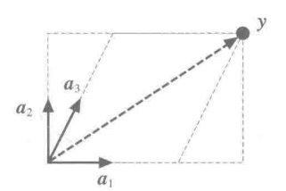
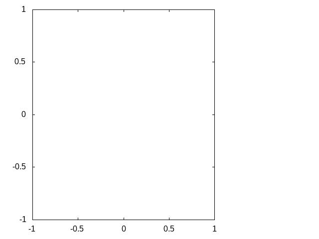
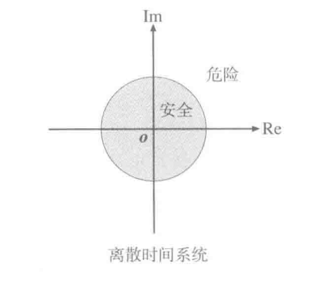
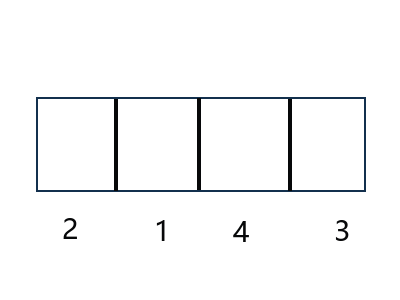
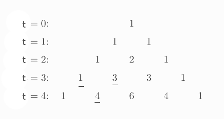
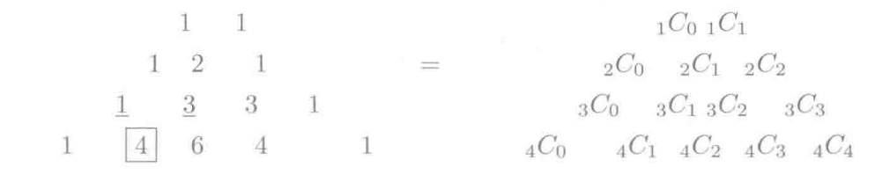

线性代数读书随笔 (部分内容需要严格验证)
Table of Contents
"程序员的数学3线性代数"读书随笔
一些读后感
首先声明一下,本人读这本书的主要目的是为了理解线性代数里面的概念,并不是为了解题.
除了数学知识以外,作者的思路也确实很棒,本人受益颇深,
探讨什么是什么的时候就有一个不错的思路:与其直接归纳是什么,不如罗列它的性质,通过性质探究本质.
比如,车是什么?它能跑,能载人,需要燃料动力等等,这样我们也能大概了解到车是什么了.
这样还有一个好处就是,从车得到的性质可以得出一些定理,可以把这些定理套用在别的拥有类似性质的事物上.
有点类似 Duck Typing 的做派,理解一样东西更加通透.而实际上作者整一本书都贯彻了这种做法.
比如从程序员的角度看待矩阵乘法,这可是把我震撼到了,以前读书的时候我都不理解矩阵这东西的意义,
写了一段时间代码以后读这本书可彻底让我茅塞顿开,现在我能理解 换一个角度看事物 的重要性了.
如果从线性代数的角度来看这个道理的话,角度就是一个基底,而道理就是一个向量,处于基于该基底的线性空间上.
不同的基底上看向量会有不一样的描述,而换一个角度就是基底变换,而变基底也不能毫无根据,我们需要结合旧基底,
也就是新角度要和旧角度要有类似的性质,否则,你不能通过新角度换回到旧角度来看待道理,这也就是作者贯穿整本书的做法,可能很多人觉得这是奇技淫巧,邪门歪道,
然而这才是高明的做法,就好像消元法解不了等式,但可以通过矩阵解出来一样,其中的精彩就自己思考了.
还有得出结论时候要遵守一个准则:"先定义后定理,先含义后计算",可以理解为定理(性质,结论)需要在遵守定义的前提下得出,要先理解定义才能进行正确的计算,
思考任何事情都不能忽略定义.
阅读这本书最好边读边学习 Maxima 的使用,
Maxima是一款计算机代数系统(Computer Algebra System,简称CAS),可以完成执行符号运算(symbolic computations),数值运算(numerical computations),数据分析(data analysis)以及数据可视化(data visualization)的任务.
使用
CAS是为了更加方便和准确地对书上的结论以及自己的猜想进行验证,这可以避免因为自己初学/手误而产生的错误,从而影响验证结果.而推荐
Maxima是因为一免费,二功能平衡以及三这本书上的图例和公式都用它来完成.学习
Maxima的正确方式是准备好它的文档(这里假设已经阅读过 Introduction to Maxima 了),正确理解数学里面的概念.数学有很多个领域,使用
Maxima的时候要先明白自己解决的问题属于哪个领域,然后在文档上找到对应领域的说明.比如说想要验证一个矩阵 \(M\) 的秩是否为 \(n\),首相矩阵是属于线性代数的领域,那么就要从下图的 Matrices and Linear Algebra 部分找起,

Figure 1: Maxima 的部分文档
一个优秀的程序总是会为功能取一个"名符其实"的名字,
Maxima明显就是一个优秀的程序,矩阵的秩在英文对应是
rank,那么可以尝试查找有没有rank这个函数来完成计算,
Figure 2: Maxima 关于 rank 函数的描述
猜想没错,确实有
rank这个函数,也确实是用来计算矩阵的秩.另外,如果要经常和数学打交道的话,个人十分建议掌握一门作图工具,个人推荐
Gnuplot,这本书本的很多图例都使用它来生成,它的优点和
Maxima一样: 开源免费跨平台,此外还易学易用,功能强大.事实上很多
CAS(包括Maxima) 都使用它来作图的,既然别的工具都用它作图了,那么还有必要单独学它吗?有!!! 理由是
Gnuplot可以很方便地和各种编程语言共同协力完成作图,本书配套地程序就是一个很好例子.后面我会对这份代码的作实现进行简单介绍,现在只需要找一本书来入门
Gnuplot就可以了.同样不要试图把
Gnuplot功能都掌握,读的时候只要有一个目标即可:了解
Gnuplot的一些概念,比如什么是tics mark, 什么是legends, 学会区分图的类型,什么时候用什么图等等,下载配套的代码再跟着书上的例子快速过一遍来加强对这些概念的理解.
线性代数的实际用途
线性代数并没有和某种问题"绑定"在一起,它是一个抽象的概念,因此可以解决很多符合条件的问题.怎么才是符合条件呢?
具体一点说就是问题要符合 线性空间,这里的空间并不是我们平时说的那个与"时间"相对"空间", 是指一些性质定义的集合.
在实际研究中还会涉及基于线性空间进行定义补充的空间,比如欧氏空间(图形学里面很重要),从程序员角度,各种空间的关系类似面向对象编程的继承链,而线性空间就是处于最顶级的类.
正是因为抽象度高,所以约束小,能够解决十分多问题.
- 解决空间问题: 计算机图形学(物体旋转,平移,缩放的计算问题)
- 处理多个数值组成的数据组: 同样能够转化为"空间"问题进行处理,把数据描绘成 n 维空间的点.
因为线性空间的抽象度高,直接对学习线性代数是很枯燥难懂的,所以可以通过一个更加具体的角度来学习理解,也就是通过特定问题来学习.
其中最直观的就是通过与时间相对的空间来理解,这本书就是通过这个角度来讲解线性代数的.
线性代数的局限性以及非线性问题
用图形打比方就是,线性代数只是用来解决平面,直线这些水平,笔直的东西.
但并非说线性代数不能解决曲面,曲线这种问题,在允许的误差范围内,
可以把曲面或者曲线某一部分放大看作平面或者直线(想象成曲面由无数个平面组成/曲线由无数段直线组成),
最后把问题近似一下就可以使用线性代数来解决了.
线性代数的主角
向量
向量就是"排列成一列的数字", 比如 \(\left(\begin{array}{c}6 \\ 7 \\ 8\end{array}\right)\),也有"排列成一行的数字": \(\left(\begin{array}{c}6 & 7 & 8\end{array}\right)\),这种叫做行向量,相对的叫做列向量,下文全部都是默认用的列向量,除非有特别说明.
而这两个行向量和列向量成转置关系(Transpose), \(\left(\begin{array}{c} 6 \\ 7 \\ 8 \end{array}\right)^{T} = \left(\begin{array}{c}6 & 7 & 8\end{array}\right)\),也可以 \(\left(\begin{array}{c} 6 & 7 & 8 \end{array}\right)^{T} = \left(\begin{array}{c}6 \\ 7 \\ 8 \end{array}\right)\), \(T\) 表示对向量进行转置:把列变成行.
(本笔记统一把所有向量默认为列变量,比如有一个向量叫 \(v\),那么它就是列向量,如果 \(v\) 是个行向量,会用 \(v^{T}\) 表示为列向量,以此强调 \(v\) 本身是个行向量).
有 \(n\) 个数字就是说这向量的维度(dimension)是 \(n\) 维,每个数字是做一个维度/维,并没有规定每个维度的意义(也就是说没有规定向量本身的意义),具体含义得看具体问题.
如果是具体到图形问题上,那么 \(\left(\begin{array}{c} 6 \\ 7 \\ 8 \end{array}\right)\) 就是一个坐标/点,每个维度分别代表 \(x\), \(y\) 以及 \(z\) 坐标.
运算法则
- 同维度之间向量的加法: \(\left(\begin{array}{c} 6 \\ 7 \\ 8 \end{array} \right) + \left(\begin{array}{c} 3 \\ 2 \\ 1 \end{array} \right) = \left(\begin{array}{c} 9 \\ 9 \\ 9 \end{array}\right)\),遵守交换律,分配律以及结合律.
- 常数(标量)与向量的乘法: \(3 \left(\begin{array}{c} 1 \\ 2 \\ 3 \end{array} \right) = \left( \begin{array}{c} 3 \\ 6 \\ 9 \end{array} \right)\),遵守乘法交换律,结合律以及分配律.
向量之间的加法和数量与向量之间的乘法统称为 线性运算.
从欧几里得空间的角度看待向量
假设有一个向量 \((3\;5)^\mathsf{T}\), 用 位置向量 表示就是,有一个笛卡尔坐标系的坐标图,原点 o (0, 0), o 是一个零向量 \((0\;0)^\mathsf{T}\),那么该向量就是一个 x 为 3, y 为 5 的坐标点;
也可以用 有向线段 表示,从原点方向连接到 \((3\;5)^\mathsf{T}\) 的线段,这种表示法可以通过图形表示向量之间的加法和乘法,
加法就是有向线段之间的连线,标量与向量之间乘法就是有向线段的伸缩,这种带有原点并且支持加法和标量乘法的"坐标系统"称为 线性空间,或者 向量空间,即使去掉坐标轴和刻度只剩下原点和坐标 \((3\;5)\),加法和标量乘法依然适用.
(这里只是给出一个通俗的线性空间理解,具体定义自行查找线性空间的8大条件).
比如 \((0\;5)^\mathsf{T} + (3\;0)^\mathsf{T} = (3\;5)^\mathsf{T}\),也可以说, \((0\;5)^\mathsf{T}\) 和 \((3\;0)^\mathsf{T}\) 是 \((3\;5)^\mathsf{T}\) 的分量.3 维向量同理,只是需要用 3 维度坐标图表示.
而在线性空间中,没有线和点这种说法,所以在处理几何问题上其实都是用基于线性空间进行"升级"的欧几里得空间进行描述,它就定义了点,线以及线的长度以及线之间的夹角.
再次强调 向量空间/线性空间是各种空间的基础,相当于面向对象编程里面继承链中的最高级父类.
基底
为了更加强调方向,这里用 \(\vec{x}\) 这种方式表示向量,如果只是把向量看做并排的数建议 \(x\) 这种方式表示.
上面说过,坐标轴是可以去掉的,那么这种情况下在线性空间下如何指定向量 \((3\;5)^\mathsf{T}\) 呢?
需要给这个线性空间编写地址,选定一组向量作为基准,比如 \(3(1\;0)^\mathsf{T} + 5(0\;1)^\mathsf{T} = (3\;5)^\mathsf{T}\).
\((1\;0)^\mathsf{T}\) 看做 \(\vec{e}_{1}\), \((0\;5)^\mathsf{T}\) 看做 \(\vec{e}_{2}\),
那么 \(\vec{e}_{1}\) 和 \(\vec{e}_{2}\) 这组向量组合称为基底, 而 \(\vec{e}_{1}\) 和 \(\vec{e}_{2}\) 就称为基向量.
描述起来就是从 \(\vec{e}_{1}\) 走 3 步,然后再从 \(\vec{e}_{2}\) 走 5 步,这就是 \((3\;5)^\mathsf{T}\).
从各个基向量走的步数就是坐标.
但是基底不是随便选择的,
- 验证基底是否符合:
- 在当前空间中,任何向量 \(\vec{v}\) 都可以表示成: \(\vec{v} = x_{1}\vec{e}_{1} + ... + x_{n}\vec{e}_{n}\);
- 第一个条件中的表示方法是唯一的.
- 数学描述
- \((x_{1} ,\;...\; , x_{n}) \not= (x^{'}_{1} ,\;...\; , x^{'}_{n})\) 则 \(x_{1}\vec{e}_{1} + ... + x_{n}\vec{e}_{n} \not= x^{'}_{1}\vec{e}_{1} + ... + x^{'}_{n}\vec{e}_{n}\)
- \((x_{1} ,\;...\; , x_{n}) = (x^{'}_{1} ,\;...\; , x^{'}_{n})\) 则 \(x_{1}\vec{e}_{1} + ... + x_{n}\vec{e}_{n} = x^{'}_{1}\vec{e}_{1} + ... + x^{'}_{n}\vec{e}_{n}\)
\(u_{1}\vec{e}_{1} + ... + u_{n}\vec{e}_{n} = \vec{o}\) 则 \(u_{1} = ... = u_{n} = 0\)
\(x_{1}\vec{e}_{1} + x_{2}\vec{e}_n\) 称为 \(\vec{e}_{1}, ... \vec{e}_{2}\) 的 线性组合,
如果任意向量 \(\vec{x}\) 都可以用 \(\vec{e}_{1}, ..., \vec{e}_{n}\) 的线性组合来表示并且表示方法唯一,那么 \((\vec{e}_{1}, \;...\;,\vec{e}_{n})\) 就是基底.
注意, 基底的选择不唯一, 比如在平面中,两个不共线的向量就能作为一个基底;在 3 维空间中,三个不共线条向量就能在作为一个基底,并且三个不处于同一个平面上,把这种情况叫做"方向独立".
这里有两个要点: 1) 空间的维数等于基向量数量,等于坐标的分量数量(不包括零向量,因为没有方向); 2) 各个向量方向独立.
如此类推,维度数大于 3 的空间也是这样.
确定一个坐标要先确定一个基底,如果这个时候使用另外一个基底,那么就要对这个坐标进行变换,这叫做 坐标变换.
矩阵
从形式上看就是把数排列成长方形,比如 \(\left(\begin{array}{c} 1 & 2 \\ 2 & 3 \end{array} \right) 或 \left(\begin{array}{c} 2.2 & -9 & \frac{1}{7} \\ \sqrt{7} & 14 & 42 \end{array} \right) 或 \left(\begin{array}{c} 1 & 2 & 3 \\ 4 & 5 & 6 \\ 7 & 8 & 9 \end{array} \right)\),
矩阵都有规模的概念,也就是行(rows)乘以列(columns),上面三个的规模分别是: \(2 \times 2\), \(2 \times 3\) 以及 \(3 \times 3\).
当行数等于列数的时候,这种矩阵就叫做 正方矩阵,上面例子有两个, \(2 \times 2\) 的叫做 2 阶方阵, \(3 \times 3\) 的叫做 3 阶方阵.
实际上向量也是矩阵的一种, N 维列向量的规模就是 \(N \times 1\), N 维行向量的就是 \(1 \times N\).
矩阵 \(A\) 中第 \(i\) 行第 \(j\) 列的值叫做 \(A\) 的 \((i,j)\) 元素: \(A = \left(\begin{array}{c} a_{11} & a_{12} & a_{13} & a_{14} \\ a_{21} & a_{22} & a_{23} & a_{24} \\ a_{31} & a_{32} & a_{33} & a_{34} \\ a_{41} & a_{42} & a_{43} & a_{44} \end{array} \right)\).
与向量一样,矩阵也是有转置的: 第 \(i\) 列变为第 \(i\) 行.
- 运算法则
- 相同规模的矩阵之间加法: \(\left(\begin{array}{c} 1 & 2 \\ 3 & 4 \end{array} \right) + \left(\begin{array}{c} 5 & 6 \\ 7 & 8 \end{array} \right) = \left(\begin{array}{c} 6 & 8 \\ 10 & 12 \end{array}\right)\).
- 乘法
- 数量与矩阵之间,参考数量与向量的乘法: \(3 \left(\begin{array}{c} 1 & 2 \\ 3 & 4 \end{array}\right) = \left( \begin{array}{c} 2 & 4 \\ 6 & 8 \end{array} \right)\).
矩阵 \(A\) 与(列)向量 \(x\) 之间,要求 \(A\) 的列数等于 \(x\) 的行数,得到一个规模和 \(x\) 一样的向量: \(\left(\begin{array}{c} 1 & 2 & 3 \\ 4 & 5 & 6 \\ \end{array}\right) \left(\begin{array}{c} 1 \\ 2 \\ 3 \end{array} \right) = \left(\begin{array}{c} 1 \times 1 + 2 \times 2 + 3 \times 3 \\ 4 \times 1 + 5 \times 2 + 6 \times 3 \end{array}\right) = \left(\begin{array}{c} 14\\ 32 \end{array}\right)\).
这个计算基本与 \(\left(\begin{array}{c} 1 & 2 & 3 \end{array}\right) \left(\begin{array}{c} 1 & 4 \\ 2 & 5 \\ 3 & 6\end{array}\right) = \left(\begin{array}{c} 14 & 32 \end{array}\right)\) 成转置关系.
你可以想象成把向量 \(x\) "倒" 过来然后和矩阵的每一行进行处理: 每一行的元素分别和 \(x^\mathsf{T}\) 对应的元素分别相乘然后把结果相加.
矩阵 \(A\) 与 \(B\) 之间,要求 \(A\) 和 \(B\) 的规模分别为 \(K \times M\) 和 \(M \times N\),得到一个 \(K \times N\) 的矩阵
\(\begin{equation}\left(\begin{array}{c}1&2&3\\ 4&5&6 \end{array}\right) \left(\begin{array}{c}1&4\\ 2&5\\ 3&6 \end{array}\right) = \left(\begin{array}{c}\left(1 \times 1 + 2 \times 2 + 3 \times 3\right)& \left(1 \times 4 + 2 \times 5 + 3 \times 6\right)\\ \left(4 \times 1 + 5 \times 2 + 5 \times 3\right)& \left(4 \times 4 + 5 \times 5 + 6 \times 6\right)\end{array}\right) = \left(\begin{array}{c}14& 32\\ 32& 77 \end{array}\right)\end{equation}\)
与矩阵 \(A\) 乘以向量 \(x\) 的差不多,可以把矩阵 \(B\) 看成 N 个向量 \(x\),有多少个 \(x\) 就处理多少次,每一次的结果就是一行里面的一个元素.
- 与加法/减法混合运算的时候,在没有括号的情况下是乘法优先.
- 注意: 矩阵(向量)有减法的,可以理解为矩阵 \(A + (-1)B\),但是矩阵(向量)是没有除法的.
正式定义
到目前为止都是形式上定义矩阵,那么正式定义是什么呢?从矩阵 \(A\) 与向量 \(x\) 之间的乘法来看,得到另外一个向量 \(y\).
\(y = Ax\) 这是一个映射,确定了矩阵 \(A\) 就能确定向量 \(x\) 到另外一个向量 \(y\) 的映射,矩阵本质上就是映射前后的两个状态之间的关系.
映射 还有另外一个叫法: 变换/线性变换.
可以这么理解,点 \(p\) 在原本某个坐标系下的坐标为 \(\left(x, y\right)\),在一个新坐标系 \(A\) 下坐标变为 \(\left(x^{'}, y_{'}\right)\),简单点就是换了个参考/坐标系,而点不动.
书本提供了程序可以让你直观的观看这个过程,运行
ruby mat_anim.rb -f=2000 | gnuplot可以看到线段从矩阵 \(\left(\begin{array}{c} 1 & 0 \\ 0 & 1 \end{array}\right)\) 渐近到 \(\left(\begin{array}{c} 1 & -0.3 \\ -0.7 & 0.6 \end{array}\right)\) 的过程(重点观察箭头指向的变化),模拟从一个角度到另外一个角度看空间的视觉.
不过本人比较"笨",有些没太看懂动画所表达的计算过程,因此阅读了一下源代码.
l 这个程序是用 Ruby 写的,因为不是所有人都写 Ruby (包括我自己,虽然说我小时候用 RPG Maker 是学过一点 Ruby,不过现在已经是全忘了),所以我决定分享我所了解到的东西给和我同样不熟悉 Ruby 的人.
首先给出经我修改的代码,修改的内容主要分两个方面,
一是由于原本的代码在绘图时刷新太快了,难以看清变化过程,所以我在重绘前加了 0.2 秒延迟;
二是添加了一些打印内容,以及一些为了方便讲解的注释:
阅读代码的时候要从入口开始(官方已经注释好了: "### main");
查找画图函数的调用,我们找到 "g.animation(#frame){|t|}" (注释: "### point 1") 这个,它就是画图的函数, "g" 是 "Gnuplot" 类的实例;
可以从 "Gnuplot" 类查看 "animation" 的定义 (注释: "### point 2"),它里面调用了 "tics" 函数 (注释: "### point 3"),
它是通过线性插值来计算出一个渐进数值的数组,遍历这个数组,根据里面的值来调用 "Gnuplot" 的 "draw" 方法 (注释: "### point 4");
根据 "g.animation" 的定义和调用追溯到了 "Plot" 的 "drawat" 方法 (注释: "### point 5" & "### point 6"),它里面调用了 "Plot" 的 "mat" 方法 (注释: "### point 7"),
这个方法接受渐进数值里面的元素作为参数,然后根据这个值来计算出渐进过程中的一个矩阵;
在画线段时根据这个矩阵计算出变换过后的线段两点的坐标,并且绘制成线段 (注释: "### point 8").
涉及计算的代码在 "### point 3", "### point 7" 以及 "### point 8" 这三个位置上,按照这个排列顺序计算就是完整的计算过程了.

Figure 3: ruby mat_anim.rb | gnuplot
要注意的是, 基底 \(A\) 还是相对原本坐标系(基底为 \(\left(\begin{array}{c} 1 & 0 \\ 0 & 1 \end{array}\right)\))来描述的,比如说, \(A\) 围绕自己的原点旋转了 \(\theta\) 度,那么 \(A\) 是 \(\left(\begin{array}{c} \cos\theta & -\sin\theta \\ \sin\theta & \cos\theta \end{array}\right)\),并非 \(\left(\begin{array}{c}1 & 0 \\ 0 & 1\end{array}\right)\),
即使后者相对 \(A\) 自己本身而言是没错的,但是在已知 \(p\) 的情况下,用后者是计算不出 \(p^{'}\) 的值的.
假设 \(A\) 的规模是 \(M \times N\), \(x\) 的规模是 \(N \times 1\),那么可以说是从 \(N\) 维空间到 \(M\) 维空间的转换.
从程序员的角度来看,映射可以看做一个编程语言中的函数,在这例子中,可以看做 \(A(x)\), \(y\) 则是函数的返回值,矩阵的乘法就是函数的应用.
假设 \(z\) 是 \(B(y)\) 的结果,那么完整过程就是 \(B(A(x))\),回到数学的角度就是 \(z = BAx\),所以描述起来就是先 \(A\) 后 \(B\),
这里有两种解释,两种解释都一样: \((BA)x = B(Ax)\),再回到程序员的角度来看的话,矩阵之间的乘法就是函数接受一个函数返回另外一个函数,简单点就是函数式编程.
向量可以看做是一个组位置参数,而要要函数应用成功,则参数要符合函数要求(只要个数符合要求就可以),而矩阵的列数就是函数的参数要求,
所以矩阵之间的乘法还有第二种解释,作为参数的矩阵可以看做是一个元素为参数组的数组,所以如果用伪代码描述作为函数的矩阵,那么应该是这样的,
def matrix(args): another_matrix = [] for column_vector in args: another_column_vector = calc_matrix_multi_vector(column_vector[1], ..., column_vector[n]) another_matrix.push(another_column_vector) return another_matrix
矩阵的行列顺序都可以随意交换,不过这要求作为参数输入的矩阵/向量的元素的顺序对应作为函数的矩阵的要求,反过来也是一样,也就是说,元素的顺序是重要的,
比如,
\(\begin{equation}\left(\begin{array}{c}1 & 4 & 7\\ 2 & 5 & 8\\ 3 & 6 & 9 \end{array}\right) \left(\begin{array}{c} x_{1}\\ x_{2}\\ x_{3} \end{array} \right) = \left(\begin{array}{c} y_{1}\\ y_{2}\\ y_{3} \end{array}\right)\end{equation}\)
交换第一个矩阵的第二列和第三列,那么就要如下调整,
\(\begin{equation}\left(\begin{array}{c} 1 & 7 & 4\\ 2 & 8 & 5\\ 3 & 9 & 6 \end{array}\right) \left(\begin{array}{c} x_{1}\\ x_{3}\\ x_{2} \end{array} \right) = \left(\begin{array}{c} y_{1}\\ y_{2}\\ y_{3} \end{array} \right) \end{equation}\)
交换第一个矩阵的第二行和第三行,那么就要如下调整,
\(\begin{equation}\left(\begin{array}{c} 1 & 4 & 7\\ 3 & 6 & 9\\ 2 & 5 & 8 \end{array}\right)\left(\begin{array}{c} x_{1}\\ x_{2}\\ x_{3} \end{array}\right) = \left(\begin{array}{c} y_{1}\\ y_{3}\\ y_{2} \end{array}\right)\end{equation}\)
对于矩阵之间的乘法,
\(\begin{equation}\left(\begin{array}{c}1 & 4 & 7 \\ 2 & 5 & 8 \\ 3 & 6 & 9 \end{array}\right) \left( \begin{array}{c} x_{11} & x_{12} & x_{13} \\ x_{21} & x_{22} & x_{23} \\ x_{31} & x_{32} & x_{33} \end{array} \right) = \left(\begin{array}{c} x_{11} + 4x_{21} + 7x_{31} & x_{12} + 4x_{22} + 7x_{32} & x_{13} + 4x_{23} + 7x_{33} \\ 2x_{11} + 5x_{21} + 8x_{31} & 2x_{12} + 5x_{22} + 8x_{23} & 2x_{13} + 5x_{23} + 8x_{33} \\ 3x_{11} + 6x_{21} + 9x_{31} & 3x_{12} + 6x_{22} + 9x_{23} & 3x_{13} + 6x_{23} + 9x_{33} \end{array}\right) \end{equation}\)
交换第一个矩阵的第二行和第三行,就要做如下调整,
\(\begin{equation}\left(\begin{array}{c}1 & 4 & 7 \\ 3 & 6 & 9 \\ 2 & 5 & 8 \end{array}\right) \left(\begin{array}{c} x_{11} & x_{12} & x_{13} \\ x_{21} & x_{22} & x_{23} \\ x_{31} & x_{32} & x_{33} \end{array}\right) = \left(\begin{array}{c} x_{11} + 4x_{21} + 7x_{31} & x_{12} + 4x_{22} + 7x_{32} & x_{13} + 4x_{23} + 7x_{33} \\ 3x_{11} + 6x_{21} + 9x_{31} & 3x_{12} + 6x_{22} + 9x_{23} & 3x_{13} + 6x_{23} + 9x_{33} \\ 2x_{11} + 5x_{21} + 8x_{31} & 2x_{12} + 5x_{22} + 8x_{23} & 2x_{13} + 5x_{23} + 8x_{33} \end{array}\right)\end{equation}\)
交换第一个矩阵的第二列和第三列,就要做如下调整,
\(\begin{equation}\left(\begin{array}{c}1 & 7 & 4 \\ 2 & 8 & 5 \\ 3 & 9 & 6 \end{array}\right) \left(\begin{array}{c}x_{11} & x_{13} & x_{12} \\ x_{21} & x_{23} & x_{22} \\ x_{31} & x_{33} & x_{32} \end{array}\right) = \left(\begin{array}{c} x_{11} + 7x_{21} + 4x_{31} & x_{13} + 7x_{23} + 4x_{33} & x_{12} + 7x_{22} + 4x_{32} \\ 2x_{11} + 8x_{21} + 5x_{31} & 2x_{13} + 8x_{23} + 5x_{33} & 2x_{12} + 8x_{22} + 5x_{32} \\ 3x_{11} + 9x_{21} + 6x_{31} & 3x_{13} + 9x_{23} + 6x_{33} & 3x_{12} + 9x_{22} + 6x_{32}\end{array}\right)\end{equation}\)
至于为什么可以这么做,后面在介绍方程组和矩阵的关系就能理解了.
交换行/列这个技巧以后会经常用到,但要注意,有些场合下可以行列交换一起发生,另外一些场合只能使用一个,这里的例子就是属于后者,
矩阵的乘方
和标量的乘方是不一样的,
- 对于方阵 \(A, B,C\) 以及常数 \(c,\alpha,\beta\),有如下规律:
- \(AA = A^{2}, AAA=A^{3}\),如此类推;
- \(cA^{2} = c(A^{2})\),并非 \((cA)^{2}\);
- \(AB^{2} - C^{3} = A(B^{2})\;-\;(C^{3})\),并非\(((AB)^{2}\;-\;C)^{3}\);
- \(A^{\alpha+\beta} = A^{\alpha}A^{\beta}\);
- \((A^{\alpha})^{\beta} = A^{(\alpha+\beta)}\);
- \((A+B)^{2} = A^{2} + AB + BA + B^{2}\);
- \((A+B)(A-B) = A^{2} - AB + BA - B^{2}\);
- \((AB)^{2} = ABAB\)
- 对于方阵 \(A, B,C\) 以及常数 \(c,\alpha,\beta\),有如下规律:
- 特别的矩阵
零矩阵 (Zero Matrix)
所有元素都为 0, 比如, \(\left(\begin{array}{c}0&0&0\\0&0&0\end{array}\right)\),
记为 \(O\) (注意是大写,小写表示零向量),如果要强调规模,比如这个的可以用 \(O_{2,3}\) 表示,如果这个是 3 阶方阵,那么可以用 \(O_{3}\) 表示.
- 对于任意向量 \(x\),都有 \(Ox = O^{'}\);
- 对于任意矩阵 \(A\) 都有以下性质:
- \(A + O = O + A = A\);
- \(AO = O\);
- \(OA = O\);
- \(0A = O\)
- 当 \(A \not= O\) 并且 \(B \not= O\),也可能得到 \(BA = O\), 比如 \(A = \left(\begin{array}{c} 1 & 0 \\ 0 & 0 \end{array}\right), B = \left(\begin{array}{c} 0 & 1 \\ 0 & 1 \end{array}\right)\).
- 当 \(A \not= O\), \(A^{2}\) 也可能得到 \(O\),比如 \(A\) 为 \(\left(\begin{array}{cc}0 & -1\\0 & 0\end{array}\right)\)
单位矩阵 (Identity Matrix)
单位矩阵必定是方阵,并且左上角到右下角的对角线上的元素是为1,其他元素为0,记为 \(I\),比如 \(\left(\begin{array}{c}1&0\\0&1\end{array}\right)\),如果要强调规模则记为 \(I_{2}\).
单位矩阵对应一个"什么都不做"映射,也就是对于任何向量 \(x\) 都有 \(Ix = x\),这种映射也叫做恒等映射.
而对于任何矩阵 \(A\) 来说可以得出下列性质:
- \(AI = A\)
- \(IA = A\)
对角矩阵 (Diagonal Matrix)
其实单位矩阵就是一种特殊的对角矩阵,处于对角线上的元素叫做对角元素,其他元素叫做非对角元素,而对角矩阵的对角元素不一定是 1,非对角元素一定为 0.
对角矩阵有几种表示方法:
\(\begin{equation}\left(\begin{array}{c} a_{1} & 0 & 0\\ 0 & a_{2} & 0\\ 0 & 0 & a_{3} \end{array} \right) = \left(\begin{array}{c} a_{1} & & \huge{0}\\ &\ddots\\ \huge{0}&&a_{3} \end{array} \right) = \left(\begin{array}{c}a_{1}\\ &\ddots\\ &&a_{3} \end{array}\right) = diag(a_{1},a_{2},a_{3}) \end{equation}\)
其中 \(diag\) 为 \(diagonal\),也就是对角线的缩写.对角线矩阵表示的是"沿着坐标轴伸缩"的映射,对角线上的元素就是各轴的伸缩倍率.
比如 \(\left(\begin{array}{c}1.5\;0\\0\;1\end{array}\right)\) 就是相当于 \(\left(\begin{array}{c}1\;0\\0\;1\end{array}\right)\) 的 x 轴的 1.5 倍.
实际上标准坐标系/正交坐标系就是其中一种对角矩阵,对角矩阵相比其他一般矩阵更加容易计算.
逆矩阵 (Inverse Matrix)
\(y = Ax\), \(x\) 经过矩阵 \(A\) 映射后得到 \(y\),从程序员的角度来看,就是 \(A(x)\) 返回 \(y\).
那么有没有办法根据返回值反推出输入 \(x\) 呢?答案是有的,就是逆矩阵/逆映射.
对于方阵 \(A\),它的逆映射对应的矩阵称为 \(A\) 的逆矩阵,记为 \(A^{-1}\),对于任意向量 \(x\),如果有 \(Ax = y\),那么就有 \(A^{-1}y = x\),反过来也一样.
从空间角度上说,\(x\) 是起点,经过矩阵 \(A\) 映射到达终点 \(y\),再从 \(y\) 出发经过矩阵 \(A^{-1}\) 映射回到 \(x\),也就是说, \(x = A^{-1}(Ax)\) = (A-1A)x.
我们把 \(A^{-1}A\) 的结果叫做方阵 \(B\),还记得有什么矩阵是什么事都不做的吗?没错就是单位矩阵,这里的 \(B\) 就是 \(I\).
要注意的是, 并非所有方阵都存在逆矩阵,从程序员的角度来看,对于一个函数,不同输入可能得到相同输出,这样就不能正确的根据输出反推出原本的输入.
从空间的角度来说,一个能够把向量扁平化成点的矩阵是不存在逆矩阵,比如说, \(\left(\begin{array}{c}0.8 & -0.6\\0.4 & -0.3\end{array}\right)\),可以发现 \(\left(\begin{array}{c}0.8 & 0.4\end{array}\right)^\mathsf{T}\) 以及 \(\left(\begin{array}{c}-0.6 & -0.3\end{array}\right)^\mathsf{T}\) 处于同一条直线上的,甚至作为基底来说是不及格.
所谓扁平化映射,你可以这么想象,假设有一个标准平面坐标系(正交坐标系),我们从某一个角度看 \(x\) 和 \(y\) 轴是一条直线,比如从 \(x\) 轴的正上方看,简单点就是"降维打击":经过扁平化映射后会丢失部分信息.
还有,当方阵 \(A\) 存在逆矩阵 \(A^{-1}\), \(A^{-1}\) 就是唯一的,不可能存在第二个或者更多的逆矩阵,可以这样证明,假设 \(B\) 和 \(C\) 是 \(A\) 的逆矩阵,
有 \(AB = BA = I\), \(AC = CA = I\), \(B = B(AC) = (BA)C = C\),可以得出 \(B = C\),因此逆矩阵是唯一的.
如果要证明一个方阵 \(Y\) 是反证 \(X\) 的逆矩阵,只需要证明 \(XY = YX = I\) 即可.
逆矩阵有以下性质:
- \((A^{-1})^{-1} = A\),用文字描述就是"逆转一次 \(A\),再逆转回去";
- \((AB)^{-1} = B^{-1}A^{-1}\),用文字描述就是"先 \(B\) 后 \(A\),还原回去就是先逆转一次 \(A\),在逆转一次 \(B\)";
- \((A^{k})^{-1} = (A^{-1})^{k} = A^{-k}\),用文字描述就是"经过 \(A\) 映射k次,还原回去就是逆转 k 次"
对角矩阵会梦见逆矩阵吗?大部分会,只要对角元素中不存在 0 就有逆矩阵,否则这样的对角矩阵就是一个扁平化映射,这种矩阵不存在可逆情况.
如何找到对角矩阵 \(A = diag(a_{1},\; ... \;, a_{n})\) 的逆矩阵呢?上面说过对角矩阵就是一个沿着坐标轴的伸缩操作,
第 1 轴伸缩 \(a_{1}\) 倍,第 n 轴伸缩 \(a_{n}\) 倍,变换原来的样子就是把变化后的第 1 轴伸缩 \(\frac{1}{a_{1}}\) 倍,变化后的第 n 轴伸缩 \(\frac{1}{a_{n}}\) 倍.
分块矩阵
分块矩阵是一种处理矩阵的手段/策略,核心就是分治,
Stranssen矩阵乘法就是一个例子.用水平线和竖线条把矩阵分割成几个较小的矩阵,这些小矩阵(分块)看做大矩阵的一个元素,这个大矩阵称为 分块矩阵,比如,
\(\begin{equation}A = \left(\begin{array}{ccc|cc|cc} 3 & 1 & 4 & 1 & 5 & 9 & 2\\ 6 & 5 & 3 & 5 & 8 & 9 & 7\\ \hline 9 & 3 & 2 & 3 & 8 & 4 & 6\\ 2 & 6 & 1 & 3 & 8 & 8 & 3\\ 2 & 7 & 9 & 5 & 0 & 2 & 8 \end{array}\right) = \left(\begin{array}{c}A_{11} & A_{12} & A_{13}\\ A_{21} & A_{22} & A_{23}\end{array}\right)\end{equation}\)
注意,子矩阵的分割的是不能错位的,就是说, \(A_{11}, A_{12}, A_{13}\) 的行数是要相同, \(A_{21}, A_{22}, A_{23}\) 的行数要相同,
\(A_{11}, A_{21}\) 的列数要相同, \(A_{12}, A_{22}\) 的列数要相同, \(A_{13}, A_{23}\) 的列数要相同.
分块矩阵的运算规则就是矩阵的那样,加法/减法/乘法:
加法
\(\begin{equation}\left(\begin{array}{cc|cc}1 & 0 & 0 & 0\\ 0 & 1 & 0 & 0\\ \hline 3 & 1 & 1 & 0\\ 4 & 1 & 0 & 1 \end{array}\right) + \left(\begin{array}{cc|cc}5 & 9 & 5 & 3\\ 2 & 6 & 5 & 8\\ \hline 0 & 0 & 1 & 0\\ 0 & 0 & 0 & 1\end{array}\right) = \left(\begin{array}{cc|cc}6 & 9 & 5 & 3\\ 2 & 7 & 5 & 8\\ \hline 3 & 1 & 2 & 0\\ 4 & 1 & 0 & 2 \end{array}\right)\end{equation}\)
逐个分块相加得出一个分块,再把这些分块组合成一个大矩阵.实际上对于加法来说,分块矩阵没什么必要.
标量与矩阵之间的乘法
\(\begin{equation}10 \left(\begin{array}{cc|cc}1 & 0 & 0 & 0\\ 0 & 1 & 0 & 0\\ \hline 3 & 1 & 1 & 0\\ 4 & 1 & 0 & 1 \end{array}\right) = \left(\begin{array}{cc|cc} 10 & 0 & 0 & 0\\ 0 & 10 & 0 & 0\\ \hline 30 & 10 & 10 & 0\\ 40 & 10 & 0 & 10\end{array}\right)\end{equation}\)
和加法一样,分块矩阵对于标量与矩阵之间的乘法没什么所谓的.
矩阵之间的乘法
这才是分块矩阵最厉害的地方,
\(\begin{equation}\left(\begin{array}{cc|cc}1 & 0 & 0 & 0\\ 0 & 1 & 0 & 0\\ \hline 3 & 1 & 1 & 0\\ 4 & 1 & 0 & 1 \end{array}\right)\left(\begin{array}{cc|cc}5 & 9 & 5 & 3\\ 2 & 6 & 5 & 8\\ \hline 0 & 0 & 1 & 0\\ 0 & 0 & 0 & 1 \end{array}\right) = \left(\begin{array}{cc|cc}5 & 9 & 5 & 3\\ 2 & 6 & 5 & 8\\ \hline 17 & 33 & 21 & 17\\ 22 & 42 & 25 & 21 \end{array}\right)\end{equation}\)
利用分块矩阵如何计算呢?
我们先把它们看成这样,
\(\begin{equation}\left(\begin{array}{c}A_{11} & A_{12}\\A_{21} & A_{22} \end{array}\right)\left(\begin{array}{c}B_{11} & B_{12}\\ B_{21} & B_{22}\end{array}\right) = \left(\begin{array}{cc|cc}A_{11}B_{11} + A_{12}B_{21} & A_{11}B_{12} + A_{12}B_{22}\\ A_{21}B_{11} + A_{22}B_{21} & A_{21}B_{12} + A_{22}B_{22} \end{array}\right)\end{equation}\)
左上: \(A_{11}B_{11} + A_{12}B_{21} = \left(\begin{array}{c}5&9\\2&6\end{array}\right)\)
右上: \(A_{11}B_{12} + A_{12}B_{22} = \left(\begin{array}{c}5&3\\5&8\end{array}\right)\)
左下: \(A_{21}B_{11} + A_{22}B_{21} = \left(\begin{array}{c}17&33\\22&42\end{array}\right)\)
右下: \(A_{21}B_{11} + A_{22}B_{21} = \left(\begin{array}{c}21&17\\25&21\end{array}\right)\)
把这4个答案按照位置组合起来就能得出最终答案,分块矩阵乘法其实就是
Stranssen矩阵乘法的算法思路.其实,还有更多的划分策略,除了上面的 \(n \times n\) 的分块矩阵划分方法,还可以这么划分,
\(\begin{equation}\left(\begin{array}{c|c}1 & 0 & 0 & 0\\ 0 & 1 & 0 & 0\\ 3 & 1 & 1 & 0\\ 4 & 1 & 0 & 1 \end{array}\right)\left(\begin{array}{c}5 & 9 & 5 & 3\\ \hline 2 & 6 & 5 & 8\\ \hline 0 & 0 & 1 & 0\\ \hline 0 & 0 & 0 & 1 \end{array}\right) = \left(\begin{array}{c}A_{1} & A_{2} & A_{3} & A_{4}\end{array}\right)\left(\begin{array}{c}B_{1}^\mathsf{T}\\ B_{2}^\mathsf{T}\\ B_{3}^\mathsf{T}\\ B_{4}^\mathsf{T}\end{array}\right) = A_{1}B_{1} + A_{2}B_{2} + A_{3}B_{3} + A_{4}B_{4}\end{equation}\)
其中 \(A_{i}B_{i} (i \in {1,\;2,\;3,\; 4})\) 的结果是一个矩阵, \(A_{i}\) 和 \(B_{i}\) 的规模分别为 \(n \times 1\) 和 \(1 \times n\),所以结果矩阵的规模就是 \(n \times n\),
最后的结果就是 4 个规模为 \(n \times n\) 的子矩阵的和,具体过程就不演示了.
分块对角矩阵
如果分块矩阵左上角到右下角对角线方向上的分块都是方阵,并且非对角线上的矩阵都是零矩阵 \(O\),这样的分块矩阵叫做对角分块矩阵.
\(\begin{equation}\left(\begin{array}{c}A_{1} & O & O & O\\ O & A_{2} & O & O\\ O & O & A_{3} & O\\ O & O & O & A_{4} \end{array}\right) = diag(A_{1}, A_{2}, A_{3}, A_{4})\end{equation}\)
其中 \(A_{1}, A_{2}, A_{3}, A_{4}\) 叫做对角区块.
分块对角矩阵的好处就是可以把下面这样的乘法看做两个独立的"子系统",
\(\begin{equation}\left(\begin{array}{cc|cc}a_{11} & a_{12} & 0 & 0\\ a_{21} & a_{22} & 0 & 0\\ \hline 0 & 0 & a_{33} & a_{34}\\ 0 & 0 & a_{43} & a_{44}\end{array}\right)\left(\begin{array}{c}x_{1}\\ x_{2}\\ x_{3}\\ x_{4} \end{array}\right) = \left(\begin{array}{c}y_{1}\\ y_{2}\\ y_{3}\\ y_{4} \end{array}\right)\end{equation}\)
分解成
\(\begin{equation}\left(\begin{array}{c}a_{11} & a_{12}\\ a_{21} & a_{22} \end{array}\right)\left(\begin{array}{c}x_{1}\\ x_{2} \end{array}\right) = \left(\begin{array}{c}y_{1}\\ y_{2}\end{array}\right)\end{equation}\)
\(\begin{equation}\left(\begin{array}{c}a_{33} & a_{34}\\ a_{43} & a_{44} \end{array}\right)\left(\begin{array}{c} x_{1}\\x_{2} \end{array}\right) = \left(\begin{array}{c}y_{3}\\ y_{4} \end{array}\right)\end{equation}\)
\(\begin{equation}\left(\begin{array}{c}A_{1} & O & O & O\\ O & A_{2} & O & O\\ O & O & A_{3} & O\\ O & O & O & A_{4} \end{array}\right)^{k} = \left(\begin{array}{c}A_{1}^{k} & O & O & O\\ O & A_{2}^{k} & O & O\\ O & O & A_{3}^{k} & O\\ O & O & O & A_{4}^{k}\end{array}\right)\end{equation}\)
可以得出,
\(\begin{equation}\left(\begin{array}{c}A_{1} & O & O & O\\ O & A_{2} & O & O\\ O & O & A_{3} & O\\ O & O & O & A_{4} \end{array}\right)^{-1} = \left(\begin{array}{c}A_{1}^{-1} & O & O & O\\ O & A_{2}^{-1} & O & O\\ O & O & A_{3}^{-1} & O\\ O & O & O & A_{4}^{-1}\end{array}\right)\end{equation}\)
当然这要求对角分块存在逆矩阵.
用矩阵用来表达关系
矩阵和向量之间的乘法表示了"平直"(就是线性)关系,不反映"协同效应"或者"规模效应"(也就是 \(1 + 1 > 2\)),只是单纯反映各种因素的加和.
比如 \(\begin{equation}\left\{ \begin{aligned}y_{a} &= a_{11}x_{1} + a_{12}x_{2} = x_{1} + x_{2} \\ y_{b} &= a_{21}x_{1} + a_{22}x+{2} = 2x_{1} + 4x_{2} \end{aligned}\right. \end{equation}\), 用矩阵表示的话, \(\begin{equation}\left(\begin{array}{c}y_{a}\\ y_{b} \end{array}\right) = \left(\begin{array}{c}1&1\\ 2&4 \end{array}\right)\left(\begin{array}{c}x_1\\ x_2 \end{array}\right)\end{equation}\)
从左到右分别是 因变量集合, 因素集合 以及 自变量集合,也就是 自变量对因变量的整体影响就是矩阵的表现.
消除常数项
还有这样的情况的: \(y = Ax + b\),其中 \(b\) 是常数,这种不能看成"在向量上乘一个矩阵" 或者说 "矩阵乘以一个向量",因此我们无法像上面那样自然地写出矩阵乘法.
这时候需这么处理,假设有 \(\vec{x} = \left(\begin{array}{c}x\\ \hline 1\end{array}\right)\), \(\vec{y} = \left(\begin{array}{c}y\\ \hline 1\end{array}\right)\), 那么就有 \(\begin{equation}\vec{y} = \left(\begin{array}{c} y\\ \hline 1 \end{array} \right) = \left(\begin{array}{c|c}A & b \\ \hline O^\mathsf{T} & 1 \end{array} \right) \left( \begin{array}{c} x \\ \hline 1 \end{array} \right) \end{equation}\)
这里利用了分块矩阵来辅助计算,新增加的分块不会对原式的计算结果产生影响,
这里把 \(b\) 作为一个分块,然后别的矩阵/向量也对应添加分块,如上面所说的,新增的分块不能影响原来的计算结果.
我们先把 \(y = Ax + b\) 看做 \(y = Ax + bx_{2}\), \(b\) 就是 \(x_{2}\) 的系数了, \(x_{2}\) 为 1,所以 \(y\) 也应该是 1.
为了形成一个方程组,还需要找出一个等式 \(y = 0 \times x + 1 \times x_{2}\),
现在可以根据这两条等式写出一个矩阵了: \(\left(\begin{array}{c} A & b \\ 0 & 1 \end{array}\right)\),再把这个矩阵对应一开始的假设: \(\vec{y} = \vec{A}\vec{x}\), 可以得到 \(\vec{A} = \left(\begin{array}{c} A & b \\ O^\mathsf{T} & 1 \end{array}\right)\).
-
后面状态由前面状态所决定的模型,假设数列 \(x_{1}\), \(x_{2}\), …, 满足 \(x_{t} = -0.7x_{t-1} - 0.5x_{t-2} + 0.2x_{t-3} + 0.1x_{t-4}\).
假设 \(x_{t}\) 是由昨天(\(x_{t-1}\)),前天(\(x_{t-2}\)),三天前(\(x_{t-3}\))以及四天前(\(x_{t-4}\))决定的,令 \(x(t) = \left(\begin{array}{c}x_{t} & x_{t-1} & x_{t-2} & x_{t-3}\end{array}\right)^{T}\) (注意,\(x(t)\) 不是 \(x_{t}\),不要看错了, \(x(t)\) 算出来就是决定第 \(t+1\) 天的前 4 天数据,可以算出第 \(t\) 天的数据).
上面的等式可以写为 \(x(t) = \left(\begin{array}{c}x_{t} \\ x_{t-1} \\ x_{t-2} \\ x_{t-3}\end{array}\right) = \left(\begin{array}{c} -0.7 & -0.5 & 0.2 & 0.1 \\ 1 & 0 & 0 & 0 \\ 0 & 1 & 0 & 0 \\ 0 & 0 & 1 & 0 \end{array}\right) \left(\begin{array}{c} x_{t-1} \\ x_{t-2} \\ x_{t-3} \\ x_{t-4} \end{array}\right)\),没错这也可以看做一个变换.
对应的微分版本就是 \(\frac{d^{4}y(t)}{dt^{4}} = -0.7\frac{d^{3}y(t)}{dt^{3}} - 0.5\frac{d^{2}y(t)}{dt^{2}} + 0.2\frac{dy(t)}{dt} + 0.1y(t)\),类似可以令 \(y(t) = \left(\begin{array}{c} \frac{d^{3}y(t)}{dt^{3}} & \frac{d^{2}y(t)}{dt^{2}} & \frac{dy(t)}{dt} & y(t) \end{array}\right)^{T}\),
那么原微分方程可以写为, \(\frac{dy(t)}{dt} = \left(\begin{array}{c} \frac{d^{4}y(t)}{dt^{4}} \\ \frac{d^{3}y(t)}{dt^{3}} \\ \frac{d^{2}y(t)}{dt^{2}} \\ \frac{dy(t)}{dt} \end{array}\right) = \left(\begin{array}{c} -0.7 & -0.5 & 0.2 & 0.1 \\ 1 & 0 & 0 & 0 \\ 0 & 1 & 0 & 0 \\ 0 & 0 & 1 & 0 \end{array}\right) \left(\begin{array}{c} \frac{d^{3}y(t)}{dt^{3}} \\ \frac{d^{2}y(t)}{dt^{2}} \\ \frac{dy(t)}{dt} \\ y(t) \end{array}\right)\).
-
坐标变换需要分两步: 1) 先计算阿出新基底,也就是进行基底变换; 2) 旧向量经过新基底得到新向量,也就是坐标变换.
实际上基底就对应一个映射,比如向量 \(\vec{x}\) \((3\;5)^\mathsf{T}\) 的基底就是 \(\left(\begin{array}{c}1 & 0\\0 & 1\end{array}\right)\),\((3\;5)^\mathsf{T}\) 就是在该基底下的向量的描述.
假设现在有一个在基底 \(A\) 下的向量/坐标 \(\vec{v}\),现在需要进行基底变换,
也就是需要随之换另外一种描述方式,可以理解成对于一个物体的个高度采用不同长度单位进行描述,但是不管采用什么单位,物体的高度都是客观不变的.
通过一个 2 维的线性组合来表示的话,同一个变量 \(\vec{v}\) 在不同基底下的关系为 \(\begin{equation}\vec{v} = x\vec{e}_{x} + y\vec{e}_{y} = x^{'}\vec{e}^{'}_{x} + y^{'}\vec{e}^{'}_{y}\end{equation}\)
从空间上思考的话, \(z\): \((x,\;y)\) 是 \(\vec{v}\) 在基底 \(A\): \((e_{x},\; e_{y})\) 下的坐标, 也就是 \(z\) 是由另外一个坐标 \(z^{'}\): \((x^{'},\;y^{'})\) 经过 \(A\) 得到的,
而 \(z^{'}\) 原本处于另外一个基底 \(B\) \((e^{'}_{x},\; e^{'}_{y})\) 上的,根据上面的关系可以发现是可以让 \(z\) 经过 \(B\) 回到 \(z^{'}\),可以得出这关系: \(\begin{equation}\left\{\begin{aligned}z = Az^{'}\\ z^{'} = Bz \end{aligned}\right.\end{equation}\).
不难发现基底 \(A\) 和 基底 \(B\) 是互逆矩阵,\(AB = BA = I\).
所以第一步需要求出的新基底就是旧基底的逆矩阵,之后再求出新基底下的新坐标旧很简单了.这是第一种方法,通过矩阵求解,就不详细说了,如果上面的内容都理解了就是很简单的事情.
还有第二种方法,利用新旧基底之间的等式关系求出新基底,比如旧基底和新基底之间的关系: \(\begin{equation}\left\{\begin{aligned}\vec{e}^{'}_{x} = 3\vec{e}_{x} - 2\vec{e}_{y} \\ \vec{e}^{'}_{y} = -\vec{e}_{x} + \vec{e}_{y}\end{aligned}\right.\end{equation}\)
可以通过之前上面的关系得出,
\(\begin{equation}\begin{aligned}\vec{v} &= x\vec{e}_{x} + y\vec{e}_{y} \\ &= x^{'}(3\vec{e}_{x} - 2\vec{e}_{y}) + y^{'}(-\vec{e}_{x} + \vec{e}_{y}) \\ &= 3x^{'}\vec{e}_{x} - 2x^{'}\vec{e}_{y} - y^{'}\vec{e}_{x} + y^{'}\vec{e}_{y} \\ &= (3x^{'}-y^{'})\vec{e}_{x} + (-2x^{'} + y^{'})\vec{e}_{y}\end{aligned}\end{equation}\)
对比开始于结束时的系数可以得出关系: \(\begin{equation}\left\{\begin{aligned}x &= 3x^{'} - y^{'} \\ y &= -2x^{'} + y^{'}\end{aligned}\right.\end{equation}\)
根据而可以得出基底 \(A\) 为 \(\left(\begin{array}{c} 3 & -1\\ -2 & 1 \end{array}\right)\).
这个新的关系的两条等式相加可以先得到 \(x + y = x^{'}\), 然后把 \(x^{'}\) 代入回其中一条等式可以得到 \(2x + 3y = y^{'}\),
因此又得到一个新的关系 \(\begin{equation}\left\{\begin{aligned}x + y = x^{'} \\ 2x + 3y = y^{'}\end{aligned}\right.\end{equation}\),
可以从这组关系得出基底 \(B\) 为 \(\left(\begin{array}{c} 1 & 1\\ 2 & 3 \end{array}\right)\),验证一下 \(AB\),发现结果刚好为 \(I_{2}\),
把这个计算过程一般化之后就是基底变换的推导过程了,具体就不详细说了.
最后就是利用矩阵与向量之间的乘法的知识来求出变换后的坐标了,也就是进行坐标变换.
坐标变换是要建立在基底存在逆矩阵的前提下才可以进行的,这点必须记住.
矩阵转置
向量那里有提到这个概念,但是没有说明具体怎么转置,其实很简单: 第 N 行变为第 N 列.
比如 \(\left(\begin{array}{c}2 & 9 & 4\\7 & 5 & 3\end{array}\right)\) 的转置变为 \(\left(\begin{array}{c}2 & 7\\9 & 5 \\4 & 3\end{array}\right)\),规模从 \(2 \times 3\) 变为 \(3 \times 2\).
从矩阵元素角度看待矩阵
目前为止我们基本上都是从空间上来理解矩阵,直观上进行理解,但是在编程中是不可避免直接操作矩阵元素的,所以从元素角度看待矩阵更多是为了方便编程.
对于规模为 \(m \times n\) 的矩阵 \(A = (a_{ij})\),有:
- 对于所有 \(i, j\), \(a_{ij} = 0\), \(A\) 为零矩阵.
- 当 \(m = n\) 时候,对于所有 \(i, j\), \(\begin{equation} a_{ij} = \left\{ \begin{aligned} 1 & (i = j) \\ 0 & (i \not= j) \end{aligned} \right. \end{equation}\), \(A\) 是单位矩阵.
- 当 \(m = n\) 时,对于所有 \(i, j\), \(a_{ij} = 0\;(i \not= j)\), \(A\) 是对角矩阵.
- \(A\) 的转置矩阵为 \(B = (b_{kl})\) (\(B\) 的规模是 \(n \times m\)) 时, 对于所有 \(i, j\), \(b_{ji} = a_{ij}\).
行列式
只有方阵才有行列式,而行列式就是体积扩大率(维度大于2时候,等于2就是面积扩大率),假如矩阵 \(A\) 存在行列式,那么就用 \(det\;A\) 或者 \(\left|A\right|\) 表示.
比如对角矩阵 \(\left(\begin{array}{c}1.5 & 0\\0 & 0.5\end{array}\right)\) 就是 \(\left(\begin{array}{c}1 & 0\\0 & 1\end{array}\right)\) 的 \(x\) 轴变为 1.5 倍, \(y\) 轴变为 0.5 倍,面积就是 \(1.5 \times 0.5\),是原来的 \(1 \times\) 1 的 0.75 倍,
我们把这个 \(\left(\begin{array}{c}1 & 0\\0 & 1\end{array}\right)\) 和原点一样看做是默认的,可以直接说,\(\left(\begin{array}{c}1.5 & 0\\0 & 0.5\end{array}\right)\) 的扩大率为 0.75.
这里可以把一个 2 阶方阵 \((a_{1}\;a_{2})\) 的行列式看成由两个向量 \(a_{1}, a_{2}\) 围成的一个平行四边形的面积,比如 \(det\;I_{2}\) 就是1,实际上 \(det\;I\) 就是1,因为单位矩阵就是"什么都不做",不管是多少阶.
3 阶段方阵可以看成是由三个变量围成的平行六面体.
要注意,行列式也是有可能小于 0 的,即使是小于 0, \(|A| < 0\) 这样的表示也是没问题的,这个和绝对值的那个符号意义不一样.
行列式的性质
在基于"行列式等于体积扩大率"的认识上,有一下性质:
- \(det\;I = 1\).
- \(det\;(AB) = (det\;A)(det\;B)\).
- 由上面两条性质可以得出 \(det\;A^{-1} = \frac{1}{det\;A}\).
- 由上面性质可以得出,当 \(det\;A = 0\) 时, \(A^{-1}\) 就不存在,反过来也成立,这种就是上面说到的扁平化映射.
- 对于对角矩阵,从映射角度来看容易得出 \(det\;(diag(a_{1}\;,...\;,a_{n})) = a_{1}...a_{n}\).
在行列式中,把某一列乘以常数,加到另外一列上,行列式结果不变,比如,
\(\begin{equation}\left\{\begin{aligned}det\; (a_{1}, a_{2}, a_{3}) &= det\; (a_{1}, a_{2}, a_{3} + 10a_{2}) = det\; (a_{1}, a_{2}, a_{3} + 10a_{1}) \\ det\;\left(\begin{array}{c|c}1 & 1 & 5 \\ 1 & 2 & 7 \\ 1 & 3 & 6 \end{array}\right) &= det\; \left(\begin{array}{c|c} 1 & 1 & 5 + 1 \times 10 \\ 1 & 2 & 7 + 2 \times 10 \\ 1 & 3 & 6 + 3 \times 10 \end{array}\right) = det\; \left(\begin{array}{c|c} 1 & 1 & 5 + 1 \times 10 \\ 1 & 2 & 7 + 1 \times 10 \\ 1 & 3 & 6 + 1 \times 10 \end{array}\right) = -3 \end{aligned} \right. \end{equation}\)
上面有说过,三阶方阵可以看做一个平行六面体,如果通过这个理解的话,三个向量 \(a_{1}, a_{2}, a_{3}\) 分别看做是三条轴,
\(a_{3} + ca_{2}\) 就是 \(a_{3}\) 轴向 \(a_{2}\) 轴倾斜,假设这个平行六面体是一副扑克牌, \(a_{1}, a_{2}, a_{3}\) 分别是 \(x, y ,z\) 三轴,
现在就是 \(z\) 向 \(y\) 轴倾斜,也就是扑克牌倾斜,明显扑克牌的体积是没有变的,这么应该能理解了吧.
上/下三角矩阵更容易求出行列式,
\(\begin{equation}\left(\begin{array}{c}a_{11} & a_{12} & a_{13} \\ 0 & a_{22} & a_{23} \\ 0 & 0 & a_{33} \end{array} \right) \\ \left(\begin{array}{c}a_{11} & 0 & 0 \\ a_{21} & a_{22} & 0 \\ a_{31} & a_{32} & a_{33} \end{array}\right)\end{equation}\)
这两个分别是上三角矩阵和下三角矩阵.为什么说这种矩阵容易计算出行列式,配合行列式等于(相对于单位矩阵的)体积扩大率来理解,
结合空间来理解,取上三角矩阵来说,分别有三个坐标 \((a_{11},\; 0,\; 0), (a_{12},\; a_{22},\; 0), (a_{13},\; a_{23},\; a_{33})\),
这三个坐标/向量所构成的平行六面体的体积公式为: \(V = SH\),其中 \(S\) 为底部面积, \(H\) 为高度,
底面是一个平行四边形,所以 \(S = wh\),其中 \(w\) 是 \(a_{11}\), \(h\) 就是 \((a_{12},\; a_{22},\; 0)\) 到 \((a_{11},\; 0,\; 0)\) 的垂直高度,也就是 \(a_{22}\),
所以 \(S = a_{11}a_{22}\),最后 \(H\) 也就是 \((a_{13},\;a_{23},\;a_{33})\) 到底面的垂直高度,也就是 \(a_{33}\),所以 \(V = Sa_{33}\), 所以 \(V = a_{11}a_{22}a_{33}\),
对于下三角矩阵也是一样理解,这种三角矩阵的行列式和对应的对角矩阵的行列式是一样的.
同样,还有对应的分块三角矩阵,就不详细说了,还有一个就是,也是有左上/右下三角矩阵,就是对角线换个方向,
不过这种矩阵没什么意义,所以就不说了,以前提到过的对角矩阵也一样,存在反三角矩阵,同样没有意义.
- 倒置矩阵的行列式和原矩阵的行列式是一样的: \(det\;A = det\;(A^\mathsf{T})\),并且行列式的性质依然存在:
- 某一行乘以常数,加到另外一行,行列式的值不变;
- 下三角矩阵的行列式等于对角元素的乘积
- …
多重线性,也就是这些关系,
\(\begin{equation}\left\{\begin{aligned}det\;(ca_{1}, a_{2}, ..., a_{n}) &= cdet\;(a_{1}, a_{2}, ..., a_{n}) \\ det\;(a_{1} + a^{'}_{1}, a_{2}, ..., a_{n}) &= det\;(a_{1}, a_{2}, ..., a_{n}) + det\;(a^{'}, a_{2}, ..., a_{n}) \end{aligned}\right.\end{equation}\)
不只是对于第一列,其它列也是同样适用的.可以继续通过上面的扑克牌的例子来理解,
对于第一个关系, \(ca_{1}\) 就是 \(a_{1}\) 变为原来的 10 倍,假设 \(a_{1}\) 是平行六面体的高,假设这个也刚好是扑克牌的高度,
也就是需要放多 9 副牌,所以体积也就是原来的 10 倍.
对于第二个关系,可以看做两副不同高度的牌,高度分别是 \(a_{1}\) 和 \(a^{'}_{1}\), 体积分别是 \(det\;(a_{1}, a_{2}, ..., a_{n})\) 和 \(det\;(a^{'}, a_{2}, ..., a_{n})\),
\(det\;(a_{1} + a^{'}_{1}, a_{2}, ..., a_{n})\) 就是两副牌叠在一起,所以这个关系成立.
所谓多重线性性质,是对于某一列的操作,所以 \(det\;(A+B) \not= det\;A + det\;B\).
交替性
行列式的正负对于了图形的镜像翻转,变一次符号就是交换一次矩阵的其中两列,反过来也是一样,这性质叫做交替性.
\(det\;(a^{1}, a^{2}, ...,\; a^{n}) = -det\;(a^{2}, a^{1}, ...,\; a^{n})\).
我们用 \(\epsilon_{i_{i}...i_{n}}\) 表示矩阵的列排列, \(i_{i}\) 表示第 \(i_{i}\) 列,同时这也代表了行列式的正负,
假设现在 \(n = 3\), 交换一次变一次符号,所以有 \(\epsilon_{123} = 1\), \(\epsilon_{132} = -1\), \(\epsilon_{312} = 1\),如此类推.
还有比较特殊的,如果出现了重复下标,那么就有 \(\epsilon_{113} = \epsilon_{232} = \epsilon_{333} = 0\),这种就是所谓的扁平化映射.
没有排列情况是 \(\epsilon\) 定义不到的; 也不存在两个不同方法定义的 \(\epsilon\) 并因此互相矛盾,
像这种对定义的解析是没有歧义的,那么这个定义就是一个良好的定义,这在数学上叫做良定的(well-defined).
计算方法
公式: \(det\;A = \sum_{i_{1},...,i_{n}}\epsilon_{i_{1}...i_{n}}a_{i_{1}1}a_{i_{2}2}...a_{i_{n}n}\),
其中 \(\epsilon_{i_{1}...i_{n}}\) 有 \(n!\) 种组合,是一个行之间的排列组合,结果为 \((-1)^{k}\), \(k\) 表示列之间的交换次数,
比如有一个组合 \(\epsilon_{1,2,3}\),原本的排序就是 "1,2,3",因此交换零次, \(k = 0\), 因此最终结果为 \((-1)^{0} = 1\);
如果组合变成 \(\epsilon_{2,1,3}\),那么交换次数为1, \(k = 1\), 因此最终结果为 \((-1)^{0} = 1\);如此类推
\(k\) 实际上就是逆序数,所谓的逆序数就是一个排列中有多少个逆序排列.
所谓的逆序排列就是 后面的一个序数 减去 前面的一个序数 的结果小于 0 的序列.
比如有个标准序列: \(1,2,3\) (这些数字是序数),就是一个逆序排列也没有.
再比如 \(2,1,3\) 有1个逆序排列,具体是怎么算的呢?
其实很简单,我们只要看一个序数 \(i\) 的前面有 \(k_{i}\) 个序数比它大,那么 \(k_{i}\) 就是序数 \(i\) 的逆序数.
对每个序数都这么计算,然后把每个序数对应的逆序数加起来就可以了.
就以 \(2,1,3\) 为例子:
2 的前面没有序数比它大,所以 2 对应的逆序数 \(k_{2} = 0\);
1 的前面有一个序数 2 比它大,所以 1 对应的逆序数为 \(k_{1} = 1\);
3 的前面没有序数比它大,所以 3 对应的逆序数为 \(k_{3} = 0\);
那么 \(\epsilon_{2,1,3} = (-1)^{k_{2} + k_{1} + k_{3}} = (-1)^{1} = -1\).
假设现在有个 3 阶方阵 \(\left(\begin{array}{c}a_{11} & a_{12} & a_{13} \\ a_{21} & a_{22} & a_{23} \\ a_{31} & a_{32} & a_{33} \end{array}\right)\),根据公式计算就是这样: \(a_{11}a_{22}a_{33} - a_{11}a_{32}a_{23} - a_{21}a_{12}a_{33} + a_{21}a_{32}a_{13} - a_{31}a_{22}a_{13} + a_{31}a_{12}a_{23}\)
笔算方法
上面的公式是百分百可以计算出行列式(当然要矩阵存在行列式才行),实际对于维数较大的方阵行列式的笔算,光计算 \(\epsilon_{i_{1}...i_{n}}\) 就很费力.
笔算一般用高斯消去法,也就是平常说的消元法.计算前可以分情况来计算.
分块对角矩阵
比如, \(A = \left(\begin{array}{c|cc} a_{11} & 0 & 0 \\ \hline 0 & a_{22} & a_{23} \\ 0 & a_{32} & a_{33} \end{array}\right)\),根据对角矩阵更加容易得出行列式的性质和多重线性性质可以得出这个关系 \(det\;A = a_{11} det\;\left(\begin{array}{c}a_{22} & a_{23} \\ a_{32} & a_{33}\end{array}\right)\).
对于同类型的 \(n\) 阶方阵的行列式的计算也是一样.
分块三角矩阵
比如, \(A = \left(\begin{array}{c|cc} a_{11} & a_{12} & a_{13} \\ \hline 0 & a_{22} & a_{23} \\ 0 & a_{32} & a_{33} \end{array}\right)\),根据对角矩阵更加容易得出行列式的性质和多重线性性质可以得出这个关系 \(det\;A = a_{11} det\;\left(\begin{array}{c}a_{22} & a_{23} \\ a_{32} & a_{33}\end{array}\right)\),
根据三角矩阵行列式结果等于对应对角矩阵行列式计算方式一样的性质以及多重线性性质可以得出与分块对角矩阵一样的关系.
对于同类型的 \(n\) 阶方阵的行列式的计算也是一样.
一般矩阵
上面的都是特殊情况,对于一般情况可以结合行列式性质把一般矩阵转化为特殊矩阵.
比如,现在有这样一个矩阵的行列式, \(det\;\left(\begin{array}{c} 2 & 1 & 3 & 2 \\ \hline 6 & 6 & 10 & 7 \\ \hline 2 & 7 & 6 & 6 \\ \hline 4 & 5 & 10 & 9 \end{array}\right)\),
利用"某一行乘以常数,加到另一行,行列式的值不变"这一性质,第一行分别乘以 -3,-1以及-2,分别加到第2,3,4行得到, \(det\;\left(\begin{array}{c|ccc}2 & 1 & 3 & 2 \\ \hline 0 & 3 & 1 & 1 \\ 0 & 6 & 3 & 4 \\ 0 & 3 & 4 & 5 \end{array} \right)\),
利用"分块对角矩阵的行列式计算方法"得出 \(2det\;\left(\begin{array}{c}3 & 1 & 1 \\ 6 & 3 & 4 \\ 3 & 4 & 5 \end{array} \right)\),
利用"某一行乘以常数,加到另一行,行列式的值不变"这一性质,第一行分别乘以 -2 以及-1,分别加到第2,3行得到, \(det\;\left(\begin{array}{c|cc}3 & 1 & 1 \\ \hline 0 & 1 & 2 \\ 0 & 3 & 4 \end{array} \right)\),
利用"分块对角矩阵的行列式计算方法"得出 \(2 \times 3det\;\left(\begin{array}{c} 3 & 4 \\ 4 & 5 \end{array} \right)\),
最后得到 \(2 \times 3 (1 \times 4 - 2 \times 3) = -12\).
假如出现这种情况 \(det\;\left(\begin{array}{c} 0 & 3 & 1 & 1 \\ \hline 2 & 1 & 3 & 2 \\ \hline 2 & 7 & 6 & 6 \\ \hline 4 & 5 & 10 & 9 \end{array}\right)\), 可以利用交替性把第一行和第二行交换,得到 \(-1 \times det\;\left(\begin{array}{c} 2 & 1 & 3 & 2 \\ \hline 0 & 3 & 1 & 1 \\ \hline 2 & 7 & 6 & 6 \\ \hline 4 & 5 & 10 & 9 \end{array}\right)\),
然后就可以利用同样的方法计算了,这种把非 0 元素换到对角线上叫做选主元(pivoting),如果选不出,也就是说最上边的一行/左边的一列的元素全部为 0,那么可以直接得出该矩阵的行列式为 0.
计算的重点是灵活应用行列式的性质.
拉普拉斯(Laplace)展开
拉普拉斯展开也叫做行列式按行/列展开,下面演示一下是什么.用 3 阶方阵 \(A = \left(\begin{array}{c|c} a_{11} & a_{12} & a_{13} \\ a_{21} & a_{22} & a_{23} \\ a_{31} & a_{32} & a_{33} \end{array}\right)\) 作为例子,由多重线性性质可以得到,
\(\begin{equation}det\;A = det\; \left(\begin{array}{c|c}a_{11} & a_{12} & a_{13} \\ 0 & a_{22} & a_{23} \\ 0 & a_{32} & a_{33} \end{array}\right) + det\;\left(\begin{array}{c|c} 0 & a_{12} & a_{13} \\ a_{21} & a_{22} & a_{23} \\ 0 & a_{32} & a_{33} \end{array}\right) + det\;\left(\begin{array}{c|c}0 & a_{12} & a_{13} \\ 0 & a_{22} & a_{23} \\ a_{31} & a_{32} & a_{33} \end{array} \right) \end{equation}\)
利用交替性可以分别得到,
\(\begin{equation}det\;A = det\; \left( \begin{array}{c|c} a_{11} & a_{12} & a_{13} \\ 0 & a_{22} & a_{23} \\ 0 & a_{32} & a_{33} \end{array} \right) - det\; \left(\begin{array}{c|c} a_{21} & a_{22} & a_{23} \\ 0 & a_{12} & a_{13} \\ 0 & a_{32} & a_{33} \end{array} \right) + det\; \left(\begin{array}{c|c} a_{31} & a_{32} & a_{33} \\ 0 & a_{12} & a_{13} \\ 0 & a_{22} & a_{23} \end{array} \right) \end{equation}\)
再根据对角分块矩阵可以得到,
\(\begin{equation} det\;A = a_{11} det\; \left(\begin{array}{c} a_{22} & a_{23} \\ a_{32} & a_{33} \end{array} \right) - a_{21} det\; \left(\begin{array}{c} a_{12} & a_{13} \\ a_{32} & a_{33} \end{array} \right) + a_{31} det\; \left(\begin{array}{c} a_{12} & a_{13} \\ a_{22} & a_{23} \end{array} \right) \end{equation}\)
我们这个例子演示的是
3x3矩阵的行列式计算, 那么4x4甚至是以上的矩阵该怎么算呢?首先
3x3矩阵的行列式计算思路实际上是把3x3规模的计算划分成更多个2x2的行列式的计算总和,所以,
4x4矩阵的计算其实就是先把4x4的矩阵划分成多个3x3的规模的行列式计算, 再对每一个3x3的规模的计算进行2x2规模的划分.简单来说就是分治法.
这里从网络找来一个
C语言的实现, 该实现并没有使用前面提到过的使用逆序数的计算方法, 并且按照 行 来进行拆分:float determinant(float mat[16]) { float a11 = mat[0]; float a12 = mat[1]; float a13 = mat[2]; float a14 = mat[3]; float a21 = mat[4]; float a22 = mat[5]; float a23 = mat[6]; float a24 = mat[7]; float a31 = mat[8]; float a32 = mat[9]; float a33 = mat[10]; float a34 = mat[11]; float a41 = mat[12]; float a42 = mat[13]; float a43 = mat[14]; float a44 = mat[15]; return a11 * (a22 * (a33 * a44 - a34 * a43) - a23 * (a32 * a44 - a34 * a42) + a24 * (a32 * a43 - a33 * a42)) \ - a12 * (a21 * (a33 * a44 - a34 * a43) - a23 * (a31 * a44 - a34 * a41) + a24 * (a31 * a43 - a33 * a41)) \ + a13 * (a21 * (a32 * a44 - a34 * a42) - a22 * (a31 * a44 - a34 * a41) + a24 * (a31 * a42 - a32 * a41)) \ - a14 * (a21 * (a32 * a43 - a33 * a42) - a22 * (a31 * a43 - a33 * a41) + a23 * (a31 * a42 - a32 * a41)); }
可以看到返回的结果就是先把
4x4划分成3x3, 再把3x3划分成2x2来进行计算的.
\(A = \left(\begin{array}{c} a_{11} & a_{12} & a_{13} & a_{14} \\ a_{21} & a_{22} & a_{23} & a_{24} \\ a_{31} & a_{32} & a_{33} & a_{34} \\ a_{41} & a_{42} & a_{43} & a_{44} \end{array}\right)\)
先拆分第一行的第一列, 它的行列式是 \(det\; \left(\begin{array}{c|ccc} a_{11} & 0 & 0 & 0 \\ \hline a_{21} & a_{22} & a_{23} & a_{24} \\ a_{31} & a_{32} & a_{33} & a_{34} \\ a_{41} & a_{42} & a_{43} & a_{44} \end{array}\right)\),
由于该行列式还不能很方便地算出来, 我们把右下角的分块看作是一个
3x3的矩阵, 对其进行拆分计算得到多个2x2矩阵的行列式, 而2x2矩阵的行列式是直接就可以算出来的:\(det\; \left(\begin{array}{c|cc} a_{22} & 0 & 0 \\ \hline a_{32} & a_{33} & a_{34} \\ a_{42} & a_{43} & a_{44} \end{array}\right) = a_{22} det\; \left(\begin{array}{c} a_{33} & a_{34} \\ a_{43} & a_{44} \end{array}\right)\)
\(det\; \left(\begin{array}{c|cc} 0 & a_{23} & 0 \\ \hline a_{32} & a_{33} & a_{34} \\ a_{42} & a_{43} & a_{44} \end{array}\right) \xrightarrow{\text{第三列往前移,交换一次}} -det\; \left(\begin{array}{c|cc} a_{23} & 0 & 0 \\ \hline a_{33} & a_{32} & a_{34} \\ a_{43} & a_{42} & a_{44} \end{array}\right) = -a_{23} det\; \left(\begin{array}{c} a_{32} & a_{34} \\ a_{42} & a_{44} \end{array}\right)\)
\(det\; \left(\begin{array}{c|cc} 0 & 0 & a_{24} \\ \hline a_{32} & a_{33} & a_{34} \\ a_{42} & a_{43} & a_{44} \end{array}\right) \xrightarrow{\text{第四列往前移,交换两次}} det\; \left(\begin{array}{c|cc} a_{24} & 0 & 0 \\ \hline a_{34} & a_{32} & a_{33} \\ a_{44} & a_{42} & a_{43} \end{array}\right) = a_{24} det\; \left(\begin{array}{c} a_{32} & a_{33} \\ a_{42} & a_{43} \end{array}\right)\)
这三个行列式相加就是 \(det\; \left(\begin{array}{ccc} a_{22} & a_{23} & a_{24} \\ a_{32} & a_{33} & a_{34} \\ a_{42} & a_{43} & a_{44} \end{array}\right)\), 再乘以 \(a_{11}\) 就是 \(det\; \left(\begin{array}{c|ccc} a_{11} & 0 & 0 & 0 \\ \hline a_{21} & a_{22} & a_{23} & a_{24} \\ a_{31} & a_{32} & a_{33} & a_{34} \\ a_{41} & a_{42} & a_{43} & a_{44} \end{array}\right)\).
剩下就是分别拆分第一行的第二列, 第一行的第三列和第一行的第四列, 按照同样的方法计算它们的行列式并且相加, 最后就能得出 \(det\; A\).
不过这个函数其实还是可以优化一下的, 把重复的计算抽象出来, 该算法参考 gl-matrix 的
determinant的实现:float determinant(float mat[16]) { float a11 = mat[0]; float a12 = mat[1]; float a13 = mat[2]; float a14 = mat[3]; float a21 = mat[4]; float a22 = mat[5]; float a23 = mat[6]; float a24 = mat[7]; float a31 = mat[8]; float a32 = mat[9]; float a33 = mat[10]; float a34 = mat[11]; float a41 = mat[12]; float a42 = mat[13]; float a43 = mat[14]; float a44 = mat[15]; /* return a11 * (a22 * (a33 * a44 - a34 * a43) - a23 * (a32 * a44 - a34 * a42) + a24 * (a32 * a43 - a33 * a42)) \ - a12 * (a21 * (a33 * a44 - a34 * a43) - a23 * (a31 * a44 - a34 * a41) + a24 * (a31 * a43 - a33 * a41)) \ + a13 * (a21 * (a32 * a44 - a34 * a42) - a22 * (a31 * a44 - a34 * a41) + a24 * (a31 * a42 - a32 * a41)) \ - a14 * (a21 * (a32 * a43 - a33 * a42) - a22 * (a31 * a43 - a33 * a41) + a23 * (a31 * a42 - a32 * a41)); 优化第一步, 需要先把目前可见的 2x2 的行列式计算抽象出来. 优化第二步, 把计算进行展开, 再把重复的计算进行抽象. */ // 以下是 2x2 的行列式计算 float b06 = a31 * a42 - a32 * a41; float b07 = a31 * a43 - a33 * a41; float b08 = a31 * a44 - a34 * a41; float b09 = a32 * a43 - a33 * a42; float b10 = a32 * a44 - a34 * a42; float b11 = a33 * a44 - a34 * a43; // 从展开后的结果进行抽象 float b00 = a11 * a22 - a12 * a21; float b01 = a11 * a23 - a13 * a21; float b02 = a11 * a24 - a14 * a21; float b03 = a12 * a23 - a13 * a22; float b04 = a12 * a24 - a14 * a22; float b05 = a13 * a24 - a14 * a23; return b00 * b11 - b01 * b10 + b02 * b09 + b03 * b08 - b04 * b07 + b05 * b06; }
这个根据矩阵的第一列进行的行列公拆分叫做展开第一列.
我们把 除去 第 \(i\) 行和第 \(j\) 列所得的新行列式用 \(\Delta^{'}_{ij}\) 表示, \(\Delta^{'}_{ij}\) 叫做 余子式 (minor),所以上面可以写成,
\(\begin{equation} det\;A = a_{11} \Delta^{'}_{11} - a_{21} \Delta^{'}_{21} + a_{31} \Delta^{'}_{31} \end{equation}\)
除了展开第一列,还可以展开第二列,第三列,所以也等于,
\(\begin{equation} det\;A = - a_{12} \Delta^{'}_{12} + a_{22} \Delta^{'}_{22} - a_{32} \Delta^{'}_{32} = a_{13} \Delta^{'}_{13} - a_{23} \Delta^{'}_{23} + a_{33} \Delta^{'}_{33} \end{equation}\)
由于负号太碍眼了,所以定义 \(\Delta_{ij} = (-1)^{i+j}\Delta^{'}_{ij}\),用这个符号就可以重写上面关系了,
\(\begin{equation} det\;A \\ = a_{11} \Delta_{11} + a_{21} \Delta_{21} + a_{31} \Delta_{31} \\ = a_{12} \Delta_{12} + a_{22} \Delta_{22} + a_{32} \Delta_{32} \\ = a_{13} \Delta_{13} + a_{23} \Delta_{23} + a_{33} \Delta_{33} \end{equation}\)
这个 \(\Delta_{ij}\) 叫做 代数余子式 (cofactor).对于 \(n\) 阶方阵有: \(det\;A = a_{1j}\Delta_{1j} + ... + a_{nj}\Delta_{nj}\;\;\;\;(j=1,...,n)\).
我们可以利用上面的代数余子式重组一个新的矩阵 \(\left(\begin{array}{c} \Delta_{11} & \Delta_{12} & \Delta_{13} \\ \Delta_{21} & \Delta_{22} & \Delta_{23} \\ \Delta_{31} & \Delta_{32} & \Delta_{33} \end{array}\right)\), 这个矩阵叫做 \(A\) 的 余子矩阵 (cofactor matrix).
伴随矩阵
伴随矩阵 (adjugate matrix) 就是方阵的余子矩阵的转置,还是用上面的例子说明,矩阵 \(A\) 的伴随矩阵 \(adj\;A = \left(\begin{array}{c} \Delta_{11} & \Delta_{21} & \Delta_{31} \\ \Delta_{12} & \Delta_{22} & \Delta_{32} \\ \Delta_{13} & \Delta_{23} & \Delta_{33} \end{array}\right)\), 也就是 \(adj\;A = (\Delta_{ji})\).
\(\begin{equation} (adj\;A)A = \left(\begin{array}{c} \Delta_{11} & \Delta_{21} & \Delta_{31} \\ \Delta_{12} & \Delta_{22} & \Delta_{32} \\ \Delta_{13} & \Delta_{23} & \Delta_{33} \end{array} \right) \left(\begin{array}{c} a_{11} & a_{12} & a_{13} \\ a_{21} & a_{22} & a_{23} \\ a_{31} & a_{32} & a_{33} \end{array} \right) = \left(\begin{array}{c} a_{11}\Delta_{11} + a_{21}\Delta_{21} + a_{31}\Delta_{31} & a_{12}\Delta_{12} + a_{22}\Delta_{21} + a_{32}\Delta_{31} & a_{13}\Delta_{11} + a_{23}\Delta_{21} + a_{33}\Delta_{31} \\ a_{11}\Delta_{12} + a_{21}\Delta_{22} + a_{31}\Delta_{32} & a_{12}\Delta_{12} + a_{22}\Delta_{22} + a_{32}\Delta_{32} & a_{13}\Delta_{12} + a_{23}\Delta_{22} + a_{33}\Delta_{32} \\ a_{11}\Delta_{13} + a_{21}\Delta_{23} + a_{31}\Delta_{33} & a_{12}\Delta_{13} + a_{22}\Delta_{23} + a_{32}\Delta_{33} & a_{13}\Delta_{13} + a_{23}\Delta_{23} + a_{33}\Delta_{33} \end{array} \right) \end{equation}\)
再对比一下,你会发现 \((1,1), (2,2), (3,3)\) 3个元素分别就是 \(det\;A\) 按照第一列,二列和三列分别的拉普拉斯展开.
而非对角元素,比如 \((2,1)\) 的是 \(a_{11}\Delta_{12} + a_{21}\Delta_{22} + a_{31}\Delta_{32}\),这是某个未知矩阵的行列式的拉普拉斯展开,现在利用代数余子式的定义还原出这个矩阵,
\(\begin{equation} a_{11} \& \left(\begin{array}{c} X & X & X \\ a_{21} & X & a_{23} \\ a_{31} & X & a_{33} \end{array} \right) \end{equation}\)
\(\begin{equation} a_{21} \& \left(\begin{array}{c} a_{11} & X & a_{13} \\ X & X & X \\ a_{31} & X & a_{33} \end{array} \right) \end{equation}\)
\(\begin{equation} a_{31} \& \left(\begin{array}{c} a_{11} & X & a_{13} \\ a_{21} & X & a_{23} \\ X & X & X \end{array} \right) \end{equation}\)
这里 \(X\) 是表示被除去的元素,可以看出是按照第二列进行展开的,根据前面的系数以及代数余子式的下标可以还原出第二列的情况,
\(\begin{equation} \left(\begin{array}{c} X & a_{11} & X \\ a_{21} & 0 & a_{23} \\ a_{31} & 0 & a_{33} \end{array} \right) \end{equation}\)
\(\begin{equation} \left(\begin{array}{c} a_{11} & 0 & a_{13} \\ X & a_{21} & X \\ a_{31} & 0 & a_{33} \end{array} \right) \end{equation}\)
\(\begin{equation} \left(\begin{array}{c} a_{11} & 0 & a_{13} \\ a_{21} & 0 & a_{23} \\ X & a_{31} & X \end{array} \right) \end{equation}\)
对比这三个可以还原出 \((2,1)\) 具体是这个拉普拉斯展开所对应的矩阵, \(\left(\begin{array}{c} a_{11} & a_{11} & a_{13} \\ a_{21} & a_{21} & a_{23} \\ a_{31} & a_{31} & a_{33} \end{array}\right)\), 根据交替性可以知道这种矩阵的行列式为 0.
再观察其他非对角元素可以发现也是一样的情况,所以,可以得到,
\(\begin{equation} (adj\;A)A = \left(\begin{array}{c} det\;A & 0 & 0 \\ 0 & det\;A & 0 \\ 0 & 0 & det\;A \end{array} \right) = \left(det\;A\right)I = (det\;A)AA^{-1} \end{equation}\)
最后根据这个关系可以得出 \(A\) 的逆矩阵为 \(A^{-1} = \frac{1}{det\;A}\left(adj\;A\right)\), 当然前提是 \(A\) 要存在逆矩阵.
问题设定
在定义矩阵的时候说过矩阵是对应一个映射,和程序当中的函数类似,接受一个参数/输入值 \(x\) 得到一个值/返回值 \(y\).
也可以把 \(x\) 看做一个原因, \(y\) 是一个预测结果,从已知道的原因 \(x\) 来预测结果 \(y\), 这样的问题叫做 顺问题,也就是 \(y = Ax\),
而反过来从结果 \(y\) 推测原因 \(x\) 的问题叫做 逆问题,也就是 \(x = By\),显然, \(B\) 是 \(A\) 的逆矩阵 \(A^{-1}\).
这种"乘上一个矩阵"的形式是比较理想的情况了,现实中问题一般都是 \(y = Ax + (噪声)\),先从理想情况 \(y = Ax\) 开始入手.
问题分两种: 良性问题和恶性问题,"良性恶性"并非数学上的说法,这里的良性就是矩阵存在可逆矩阵.
良性问题
也就是 \(x = A^{-1}y\), 其中 \(A\) 是存在逆矩阵的方阵,称为 正则矩阵/可逆矩阵/非奇异矩阵,不属于这种情况的矩阵叫做 奇异矩阵.
一般想到的就是先求出 \(A^{-1}\) 再乘以 \(y\) 就可以得出 \(x\) 了,但是我们不这么做.
良性的逆问题实际上就是在求多元线性(一次)方程组的解,比如,
\(\begin{equation} \left\{ \begin{aligned} A &= \left(\begin{array}{c} 2 & 3 & 3 \\ 3 & 4 & 2 \\ -2 & -2 & 3 \end{array} \right) \ \\ y &= \left(\begin{array}{c} 9 \\ 9 \\ 2 \end{array} \right) \end{aligned} \right. \end{equation}\)
可以写成方程组,
\(\begin{equation} \left\{ \begin{aligned} 2x_{1} + 3x_{2} + 3x_{3} &= 9 \\ 3x_{1} + 4x_{2} + 2x_{3} &= 9 \\ -2x_{1} - 2x_{2} + 3x_{3} &= 2 \end{aligned} \right. \end{equation}\)
所以这里有两种求解方法: 利用消元法求出方程组的解 以及 用分块矩阵表示消元法的求解方程组过程.
消元法就不详细说了,这里直接用第二种方法,
\(\begin{equation} \left(\begin{array}{ccc|c} 2 & 3 & 3 & 9 \\ 3 & 4 & 2 & 9 \\ -2 & -2 & 3 & 2 \end{array} \right) \; \left(\begin{array}{c} x_{1} \\ x_{2} \\ x_{3} \\ \hline -1 \end{array} \right) = \left(\begin{array}{c} 0 \\ 0 \\ 0 \end{array} \right) \end{equation}\)
这里运用了把 \(y = Ax + b\) 改成 \(\vec{y} = \vec{A}\vec{x}\) 的技巧.
第一步,用 \(x_{2}\) 和 \(x_{3}\) 表示 x1,也就是把 \(x_{1}\) 的系数变为 1,利用第一条方程进行转化,最后对应的矩阵变为,
\(\begin{equation} \left(\begin{array}{ccc|c} 1 & \frac{3}{2} & \frac{3}{2} & \frac{9}{2} \\ 3 & 4 & 2 & 9 \\ -2 & -2 & 3 & 2 \end{array} \right) \; \left(\begin{array}{c} x_{1} \\ x_{2} \\ x_{3} \\ \hline -1 \end{array} \right) = \left(\begin{array}{c} 0 \\ 0 \\ 0 \end{array} \right) \end{equation}\)
第二步,用第一行分别乘以 -3 和 2,然后分别加上第二,三行,结果如下,
\(\begin{equation} \left(\begin{array}{ccc|c} 1 & \frac{3}{2} & \frac{3}{2} & \frac{9}{2} \\ 0 & -\frac{1}{2} & -\frac{5}{2} & -\frac{9}{2} \\ 0 & 1 & 6 & 11 \end{array} \right) \; \left(\begin{array}{c} x_{1} \\ x_{2} \\ x_{3} \\ \hline -1 \end{array} \right) = \left(\begin{array}{c} 0 \\ 0 \\ 0 \end{array} \right) \end{equation}\)
这样的话第二/三个等式中的 \(x_{1}\) 就被消去了.第三步就是消除 \(x_{2}\) 了,用上面同样的做法,从第二行开始,第二行乘以 -2 得到,
\(\begin{equation} \left(\begin{array}{ccc|c} 1 & \frac{3}{2} & \frac{3}{2} & \frac{9}{2} \\ 0 & 1 & 5 & 9 \\ 0 & 1 & 6 & 11 \end{array} \right) \; \left(\begin{array}{c} x_{1} \\ x_{2} \\ x_{3} \\ \hline -1 \end{array} \right) = \left(\begin{array}{c} 0 \\ 0 \\ 0 \end{array} \right) \end{equation}\)
第二行乘以 -1 再加到第三行得到,
\(\begin{equation} \left(\begin{array}{ccc|c} 1 & \frac{3}{2} & \frac{3}{2} & \frac{9}{2} \\ 0 & 1 & 5 & 9 \\ 0 & 0 & 1 & 2 \end{array} \right) \; \left(\begin{array}{c} x_{1} \\ x_{2} \\ x_{3} \\ \hline -1 \end{array} \right) = \left(\begin{array}{c} 0 \\ 0 \\ 0 \end{array} \right) \end{equation}\)
这一步连续消去了 \(x_{2}\) 和 \(x_{3}\),消除完之后写成方程会发现如下,
\(\begin{equation} x_{1} + \frac{3}{2}x_{2} + \frac{3}{2}x_{3} - \frac{9}{2} = 0 \\ x_{2} + 5x_{3} - 9 = 0 \\ x_{3} - 2 = 0 \end{equation}\)
\(x_{3}\) 已经求出来了.现在可以开始求 \(x_{2}\) 了,代数的做法就是把 \(x_{3} = 2\) 代入第 2 个等式中,
用矩阵就是第三行乘以 -5 加到第二行上来消除等式二中的 \(x_{3}\),得到,
\(\begin{equation} \left(\begin{array}{ccc|c} 1 & \frac{3}{2} & \frac{3}{2} & \frac{9}{2} \\ 0 & 1 & 0 & -1 \\ 0 & 0 & 1 & 2 \end{array} \right) \; \left(\begin{array}{c} x_{1} \\ x_{2} \\ x_{3} \\ \hline -1 \end{array} \right) = \left(\begin{array}{c} 0 \\ 0 \\ 0 \end{array} \right) \end{equation}\)
可以得到 \(x_{2} = -1\),最后把 \(x_{2}\) 和 \(x_{3}\) 代入等式一中,矩阵就是第二行乘以 \(-\frac{3}{2}\) 加上第一行,得到,
\(\begin{equation} \left(\begin{array}{ccc|c} 1 & 0 & \frac{3}{2} & 6 \\ 0 & 1 & 0 & -1 \\ 0 & 0 & 1 & 2 \end{array} \right) \; \left(\begin{array}{c} x_{1} \\ x_{2} \\ x_{3} \\ \hline -1 \end{array} \right) = \left(\begin{array}{c} 0 \\ 0 \\ 0 \end{array} \right) \end{equation}\)
然后第三行乘以 \(-\frac{3}{2}\) 加到第一行上,得到,
\(\begin{equation} \left(\begin{array}{ccc|c} 1 & 0 & 0 & 3 \\ 0 & 1 & 0 & -1 \\ 0 & 0 & 1 & 2 \end{array} \right) \; \left(\begin{array}{c} x_{1} \\ x_{2} \\ x_{3} \\ \hline -1 \end{array} \right) = \left(\begin{array}{c} 0 \\ 0 \\ 0 \end{array} \right) \end{equation}\)
现在可以解得, \(x_{1} = 3\).上面的步骤中有一个要注意得是,乘以的常数不能为 0.
简单来说就是把方程组变化成 \(\left(\begin{array}{c|c}A & y\end{array}\right)\left(\begin{array}{c}x \\ \hline -1\end{array}\right) = o\),然后再变形得到 \(\left(\begin{array}{c|c}I & s\end{array}\right)\left(\begin{array}{c}x \\ \hline -1\end{array}\right) = o\),
可以发现 \(x - s = o\),也就是说 \(s\) 的分量就是方程中对应变量的解.
这整个计算过程可以看到只有 \(\left(\begin{array}{c|c}A & y\end{array}\right)\) 部分有变动,所以其实整个计算过程只要看这部分就可以了,
这个简化后的计算方法叫做
Gauss-Jordan,就是消元法的简化版,具体计算一样,就不说了.实际计算的时候还可能遇到需要 选主元 的情况,选主元上面有提到,就不详细说了.计算逆矩阵
之前介绍过利用余子矩阵求逆矩阵的方法,不过那个方法太麻烦了,这里同样使用线性方程组和分块矩阵表示的两种解法.
线性方程组解法
如果线性方程组能够解出,那就说明,方程组的系数矩阵存在逆矩阵.
假设 \(n\) 阶段方阵 \(A\),假设 \(AX = I\),把 \(X\) 分块成 \(n\) 个列向量 \(X = \left(\begin{array}{c}x_{1},...,x_{n}\end{array}\right)\),
把 \(I\) 分块成 \(n\) 个列向量 \(I = \left(\begin{array}{c}e_{1},...,e_{n}\end{array}\right)\), \(e_{i}\) 表示第 \(i\) 个分量为 1,其它分量为 0 的列向量.
所以可以得到 \(A\left(x_{1},...,x_{n}\right) = \left(Ax_{1},...,Ax_{n}\right) = \left(e_{1},...,e_{n}\right)\).
而每个 \(Ax_{i} = e_{i}\) 就是一组线性方程组,解出每个 \(x_{i}\) 后把结果排列起来就是 \(A^{-1}\) 了.
不过这样就需要求出 \(n\) 组方程了.
方块矩阵表示解法
对于方程组 \(Ax_{i} = e_{i}\;(i=1,...,n)\) 进行分块处理,根据
Gauss-Jordan计算方法可以得到: \(\left(\begin{array}{c|c}A & e_{i}\end{array}\right) \rightarrow \left(\begin{array}{c|c}I & s_{i}\end{array}\right)\).也就是 \(A\left(\begin{array}{c}e_{i},...,e_{n}\end{array}\right) \rightarrow I\left(\begin{array}{c}s_{1},...,s_{n}\end{array}\right)\).
而 \(\left(\begin{array}{c}s_{1},...,s_{n}\end{array}\right)\) 就是我们要求的矩阵 \(X\),也就是 \(A^{-1}\): \(\left(\begin{array}{c|c}A & I\end{array}\right) \rightarrow \left(\begin{array}{c|c}I & X\end{array}\right) \rightarrow \left(\begin{array}{c|c}I & A^{-1}\end{array}\right)\).
根据这个关系,用
Gauss-Jordan计算方法对 \(\left(\begin{array}{c|c}A & I\end{array}\right)\) 进行计算就可以就是出逆矩阵了.初等变换
实际上初等变换就是另外一种描述上述方法的语言,上面的方块矩阵表示解法有三种操作,
- 将某行乘以常数 \(c(c \not= 0)\);
- 将某行的 \(c\) 倍加到另一行上面;
- 交换两行;
比如计算 \(B = \left(\begin{array}{c|c}A & y\end{array}\right) = \left(\begin{array}{ccc|c}2 & 3 & 3 & 9 \\ 3 & 4 & 2 & 9 \\ -2 & -2 & 3 & 2 \end{array}\right)\).
"将 \(B\) 的第一行乘以 \(\frac{1}{2}\)" 相当于 "把 \(I_{3}\) 的 \((1,1)\) 元素替换成 \(\frac{1}{2}\),得到的矩阵 Q1(\(\frac{1}{2}\)),再用这个矩阵乘以 \(B\)",
\(\begin{equation} B^{'} = Q_{1}\left(\frac{1}{2}\right)B = \left(\begin{array}{c} \frac{1}{2} & 0 & 0 \\ 0 & 1 & 0 \\ 0 & 0 & 1 \end{array} \right) \left(\begin{array}{ccc|c} 2 & 3 & 3 & 9 \\ 3 & 4 & 2 & 9 \\ -2 & -2 & 3 & 2 \end{array} \right) = \left(\begin{array}{ccc|c} 1 & \frac{3}{2} & \frac{3}{2} & \frac{9}{2} \\ 3 & 4 & 2 & 9 \\ -2 & -2 & 3 & 2 \end{array} \right) \end{equation}\)
如果是第三行乘以 \(c\),那么就要把 \((3,3)\) 换成 \(c\),道理都懂了吧,也就是,把单位矩阵 \(I_{n}\) 的第 \(i\) 乘以 \(c\) 就是把 \((i,i)\) 位置的元素换成 \(c\), 用 \(Q_{i}(c)\) 表示, 其中 \(1 \le i \le n\).
"将 B' 的第一行乘以 -3 加到第二行" 相当于 "把I3 的 (2,1) 元素换成 -3,得到矩阵 \(R_{2,1}(-3)\),再乘以\(B^{'}\)",
\(\begin{equation} B^{''} = R_{2,1}\left(-3\right)B^{'} = \left(\begin{array}{c} 1 & 0 & 0 \\ -3 & 1 & 0 \\ 0 & 0 & 1 \end{array} \right) \left(\begin{array}{ccc|c} 1 & \frac{3}{2} & \frac{3}{2} & \frac{9}{2} \\ 3 & 4 & 2 & 9 \\ -2 & -2 & 3 & 2 \end{array} \right) = \left(\begin{array}{ccc|c} 1 & \frac{3}{2} & \frac{3}{2} & \frac{9}{2} \\ 0 & -\frac{1}{2} & -\frac{5}{2} & -\frac{9}{2} \\ -2 & -2 & 3 & 2 \end{array} \right) \end{equation}\)
如果是要把第二行乘以 \(c\) 加到第三行,那就是把 \((3,2)\) 的元素换成 \(c\),也就是说要把第 \(i\) 行乘以 \(c\) 找到第 \(j\) 行,那就是把 \((j,i)\) 位置的元素换乘 \(c\), 用 \(R_{i,j}(c)\) 表示.
"交换 \(B^{''}\) 的二行和第三行" 相当于 "把 \(I_{3}\) 的第二,三行交换得到 \(S_{2,3}\),再乘以 \(B^{''}\)",
\(\begin{equation} B^{'''} = S_{2,3}B^{''} = \left(\begin{array}{c} 1 & 0 & 0 \\ 0 & 0 & 1 \\ 0 & 1 & 0 \end{array} \right) \left(\begin{array}{ccc|c} 1 & \frac{3}{2} & \frac{3}{2} & \frac{9}{2} \\ 0 & -\frac{1}{2} & -\frac{5}{2} & -\frac{9}{2} \\ -2 & -2 & 3 & 2 \end{array} \right) = \left(\begin{array}{ccc|c} 1 & \frac{3}{2} & \frac{3}{2} & \frac{9}{2} \\ -2 & -2 & 3 & 2 \\ 0 & -\frac{1}{2} & -\frac{5}{2} & -\frac{9}{2} \end{array} \right) \end{equation}\)
交换第 \(i\) 和 \(j\) 行用 \(S_{i,j}\) 表示.
上面这几个左乘 \(Q_{i}(c), R_{i,j}{c}, S_{i,j}\) 的操作就叫做 初等(行)变换.
用初等变换描述 \(B\) 的
Gauss-Jordan计算过程如下:\(Q_{1}(\frac{1}{2}) \rightarrow R_{2,1}(-3) \rightarrow R_{3,1}(2) \rightarrow Q_{2}(-2) \rightarrow R_{1,2}(\frac{-3}{2}) \rightarrow R_{3,2}(-1) \rightarrow R_{1,3}(6) \rightarrow R_{2,3}(-5)\).
也就是说 \(B\) 乘 \(P = R_{2,3}(-5)R_{1,3}(6)R_{3,2}(-1)R_{1,2}(\frac{-3}{2})Q_{2}(-2)R_{3,1}(2)R_{2,1}(-3)Q_{1}(\frac{1}{2})\) 就可以求出解了: \(PB = P\left(\begin{array}{c|c}A & y\end{array}\right) = \left(\begin{array}{c|c}I & s\end{array}\right)\).
再根据方块矩阵展开可以得到 \(PA = I\) 以及 \(Py = s\).
而对于逆矩阵的 \(\left(\begin{array}{c|c}A & I\end{array}\right) \rightarrow \left(\begin{array}{c|c}I & A^{-1}\end{array}\right)\) 可以得到 \(P\left(\begin{array}{c|c}A & I\end{array}\right) = \left(\begin{array}{c|c}I & A^{-1}\end{array}\right)\), 展开后又得到 \(PA = I\) 以及 \(PI = A^{-1}\).
恶性问题
不同情况
所谓恶性问题也就是不存在可逆矩阵的情况,这又分三种情况,
线索不足的情况 (矮矩阵/核)
原因 \(x = \left(\begin{array}{c}x_{1},...,x_{n}\end{array}\right)^\mathsf{T}\) 和结果 \(y = \left(\begin{array}{c}y_{1},...,y_{m}\end{array}\right)^\mathsf{T}\) 两个维数不同, \(n \not= m\),
比如 \(y = Ax\), \(\begin{equation} \left(\begin{array}{c} y_{1} \\ y_{2} \end{array} \right) = \left(\begin{array}{c} a_{11} & a_{12} & a_{13} \\ a_{21} & a_{22} & a_{23} \end{array} \right) \left(\begin{array}{c} x_{1} \\ x_{2} \\ x_{3} \end{array} \right) \end{equation}\)
这里 \(A\) 的规模为 \(2 \times 3\),也就是未知量有 3 个,但是线索数量只有 2 条,由于行数小于列数, \(A\) 叫做 矮矩阵.
从空间上来说,这里就是三维(列数)空间下的 \(x\) 经过矩阵 \(A\) 映射到二维(行数)空间下的 \(y\), \(A\) 就是从 3 维到 2 维,刚好对应了"压缩扁平化"的操作.
明显是没有办法从 2 维逆推回 3 维,比如 \(\left(\begin{array}{c}3 & 5 & 10\end{array}\right)^\mathsf{T}\) 经过 \(\left(\begin{array}{c}1 & 0 & 0 \\ 0 & 1 & 0\end{array}\right)\) 到 \(\left(\begin{array}{c}3 & 5\end{array}\right)^\mathsf{T}\),原来向量的 \(z\) 分量丢失了.
对于特定矩阵 \(A\),满足 \(Ax = o\) 的 \(x\) 的集合称为 \(A\) 的 核 (kernel)/零空间(null space),记为 \(Ker\;A\),
如果 \(Ker\;A\) 是一条直线,那就是 \(Ker\;A\) 就是 1 维的,用上面的例子来说,满足 \(\left(\begin{array}{c}0 & 0 & z\end{array}\right)^\mathsf{T} (z \not= 0)\) 该格式的所有坐标构成的直线,
如此类推,如果是个平面,那就说 \(Ker\;A\) 是 2 维的;
而对于非"压缩扁平化"的矩阵 \(A\),那么 \(Ker\;A\) 就只有一个原点构成,那么 \(Ker\;A\) 就是 0 维的.
其实可以这么考虑,现在有一个 \(m \times n\) 的矩阵 \(A\), 接受一个 \(m\) 维向量 \(x\) 作为输入,一个 \(n\) 维向量 \(y\) 作为输出.
求 \(A\) 的核的维数,换句话来说在计算 \(Ax\) 的过程中, \(x\) 里面是否存在一些分量在非零的情况下在经过 \(A\) 作用后得变成零,或者干脆不参与计算,这种分量的个数就是 \(A\) 的核的维数.
比如 \(\begin{equation} Ax = \left(\begin{array}{c} y_{1} \\ y_{2} \end{array} \right) = \left(\begin{array}{c} a_{11} & a_{12} & a_{13} \\ a_{21} & a_{22} & a_{23} \end{array} \right) \left(\begin{array}{c} x_{1} \\ x_{2} \\ x_{3} \end{array} \right) \end{equation}\) (除非特殊说明,这里的分量只要不写为 0 就表示它不为0),可以看到 \(x_{3}\) 是不参与计算的,
也就是只要 \(x\) 是 \((0, 0, x_{3}), x_{3} \neq 0\) 这样的向量, \(Ax = o\), 这样 \(x\) 只有 1 个分量不为 0,也就是 \(Ker\;A = 1\).
\(\begin{equation} Ax = \left(\begin{array}{c} y_{1} \\ y_{2} \\ y_{3} \end{array} \right) = \left(\begin{array}{c} a_{11} & a_{12} & a_{13} \\ a_{21} & a_{22} & a_{23} \\ 0 & 0 & 0 \end{array} \right) \left(\begin{array}{c} x_{1} \\ x_{2} \\ x_{3} \end{array} \right) \end{equation}\) 和上面的情况差不多, 无论 \(x_{3}\) 是何值, \(y_{3}\) 都是 0,
同样是只要 \(x\) 是 \((0, 0, x_{3})\) 就能满足 \(Ax = o\), 也是 \(x\) 只有 1 个分量不为 0,所以 \(Ker\;A = 1\).
对于 \(A = \left(\begin{array}{c} a_{11} & a_{12} & a_{13} \\ 0 & 0 & 0 \\ 0 & 0 & 0 \end{array}\right)\), 只有 \(x = (0, x_{2}, x_{3})\) 才能满足 \(Ax = o\), 所以 \(Ker\;A\) 的维数为 2;
对于 \(A = \left(\begin{array}{c} a_{11} & a_{12} & a_{13} \\ a_{21} & a_{22} & a_{23} \\ a_{31} & a_{32} & a_{33} \end{array}\right)\) 只有 \(x = \left(0, 0, 0\right)\) 才满足 \(Ax = o\), \(x\) 里面没有任何一个非 0 分量,所以 \(Ker\;A\) 维数为 0.
这些都是非常极端的例子,都是能够一眼看出来的,大部分情况下都不这么极端,因此还是需要一套计算方法.
平行于 \(Ker\;A\) 以及 \(Ker\;A\) 上的元素都是不能还原得到出发点的,我们可以理解为这些元素都是被压缩过(多个 \(x\) 对一 \(y\))的.
线索过剩的情况 (长矩阵/像)
当 \(A\) 的规模为 \(3 \times 2\),也就是未知变量有 2 个,但线索有 3 条,由于行数大于列数, \(A\) 叫做 长矩阵.
比如 \(y = Ax\),
\(\begin{equation} \left(\begin{array}{c} y_{1} \\ y_{2} \\ y_{3} \end{array} \right) = \left(\begin{array}{c} a_{11} & a_{12} \\ a_{21} & a_{22} \\ a_{31} & a_{32} \end{array} \right) \left(\begin{array}{c} x_{1} \\ x_{2} \end{array} \right) \end{equation}\)
在空间角度来讲就是在二维空间下的 \(x\) 经过矩阵 \(A\) 映射到三维下的 \(y\),正如上一种情况中说道过两个空间之间的信息量不对等,
低维度空间上的所有 \(x\) 是不可能完全覆盖高维度空间.打个比方就是 \(x\) 所处的空间就是一个平面,这个平面上所有的点都经过 \(A\) 到达 \(y\),
所有的 \(y\) 构成的还是一个平面,不在这个平面上的向量我们叫做 \(y^{'}\),这些 \(y^{'}\) 就是覆盖不到的.
在数学中,这个 \(y\) 构成的集合叫做 像 (image)/ 陪域 (range),记为 \(Im\;A\),我们可以说 \(y^{'}\) 不在 \(Im\;A\) 上.
也可以这么说,在矩阵 \(A\) 的作用下能够到达的范围 \(Im\;A\),也就是当向量 \(x\) 取到各种各样的值时 \(y = Ax\) 的活动范围.
由于这个 \(Im\;A\) 是个平面,这个 \(Im\;A\) 是 2 维的,如果 \(x\) 是 1 维的,那么 \(Im\;A\) 就是 1 维的,低维是多少维的, \(Im\;A\) 就是多少维.
线索个数正好的情况 (奇异矩阵)
并非矩阵的线索个数(行数)和未知量(列数)的个数一样(方阵)就不是恶性问题了,前面有提到过, 有的矩阵本身作为基底都是不及格的,这种根本不可能存在逆矩阵,
说的就是这种情况,比如说,一个 3 阶方阵本身是构成一个三维空间的,可是其中有两个基向量(行/列都一样)共线了,这种就是不行的,构成二维空间的条件都达不到(存在多余的基底);
\(\begin{equation} \left(\begin{array}{c} 1 & 1 & 7 \\ 1 & 1 & 6 \\ 3 & 3 & 3 \end{array} \right) \end{equation}\)
这个方阵的行为相当于"压缩扁平化",我们把 \(A = \left(\begin{array}{c}1 & 1 & 7 \\ 1 & 1 & 6 \\ 3 & 3 & 3\end{array}\right)\) 看做一个二维空间的基底 \(B = \left(\begin{array}{c}1 & 7 \\ 1 & 6 \end{array}\right)\),
这种就相当于上面提到的"线索不足/高维度转低维度",因为压缩后得到的 \(y\) 丢失了信息的, 所以 \(y\) 所在的空间 \(A\) 不可能被全部映射到,这相当于 "线索过剩/低维度转高维度".
这种 "共线,原点" 的分量是无效线索, \(A\) 的第一列和第二列就是重复的,实际有效只要一条即可.
后面会正式地讨论如何判断一个矩阵是否 "压缩扁平化".
恶劣程度
这里面有一套标准评定问题 \(y = Ax\) 的恶劣程度:
- 对于一个结果 \(y\) 是否对应一个原因 \(x\)?
- 是否所有 \(y\) 都能找到对应的 \(x\)?
如果只满足条件1, \(y = Ax\) 就是 单射/一对一映射/一一映射;
如果只满足条件2, \(y = Ax\) 就是 满射/映上的映射;
如果全都满足,那么 \(y = Ax\) 就是 双射.
这里可以用 \(Ker\;A\) 以及 \(Im\;A\) 来对上面这两项标准进行描述:
- \(Ker\;A\) 是否只包含原点?
- \(Im\;A\) 与 \(A\) 的值域是否相同?
维数定理
对于 \(m \times n\) 的矩阵 \(A\),可以这样描述它: \(A\) 对应从 \(n\) 维空间到 \(m\) 维空间的映射.
这里有一个定理叫做 维数定理/秩-零化度定理(Rank-nullity theorem):
对于 \(m \times n\) 矩阵 \(A\),有 \(dim\;Ker\;A + dim\;Im A = n\), 其中 \(dim\;X\) 表示 \(X\) 的维数.
这里 \(dim\;Ker\;A\) 就是矩阵 \(A\) "压缩掉的维数".在这个定理中,可以理解到: 如果知道 \(dim\;Ker\;A\) 以及 \(din\;Im\;A\) 其中一个,就可以知道另外一个.
之后会讲解到如何求出 \(dim\;Im\;A\).
利用这个定理描述上一节的内容:
如果 \(m < n\), 那么 \(A\) 就不是单射;
因为 \(Im\;A\) 是目标 \(m\) 维空间的一部分或者全部,所以 \(dim\;Im\;A \le m\).
因为 \(m < n\),所以 \(dim\;Im\;A < n\).
根据维数定理,得到 \(dim\;Ker\;A > 0\).
简单地从空间上想像: 原空间"三维空间"上所有元素到目标空间"平面"后可能会构成足以一个覆盖滿目标空间的"平面"(从平行于三空间 \(z\) 轴的方向看),
这个时候 \(dim\;Im\;A = 2\),所以 \(dim\;Ker\;A = 1\);也有可能构成一个只能覆盖目标空间一部分的图形(点/线/面).
如果 \(m > n\), 那么 \(A\) 就不是满射;
\(dim\;Ker\;A \ge 0\) 是一定是成立的,因为维数不可能为负数.
根据维数定理,得到 \(dim\;Im\;A \le n\).
因为 \(m > n\),所以 \(dim\;Im\;A < m\).
简单地从空间上想像: 原空间"平面"上所有的元素到到目标空间"三维空间"后构成的依然是个"平面",是不可能铺满三维空间的.
"压缩扁平化"变换/线性相关
到目前为止都没有正式地描述过"压缩扁平化"变换,所谓"压缩扁平化"就是 不同的向量 \(x\) 和 \(x^{'}\) 经过矩阵 \(A\) 映射到相同的向量 \(y\).
假设 \(x = \left(x_{1},...,x_{n}\right)\), \(x^{'} = \left(x^{'}_{1},...,x^{'}_{n}\right)\), \(A = \left(a_{1},...,a_{n}\right)\).
也就是说: \(Ax = Ax^{'}\),设 \(A = \left(\begin{array}{c}a_{1},...,a_{n}\end{array}\right)\), 其中有 \(i \le n\), \(a_{i}\) 是列向量,该关系成立的话就说 \(a_{1},\;...,\;a_{n}\) 为 线性相关 的 (linear dependence),
通俗点讲就是不相等的 \(x\) 和 \(x^{'}\) 变换到相同的 \(y\); 否则称 \(a_{1},\;...,\;a_{n}\) 为 线性无关 的 (linear independence).
线性相关和线性无关可以分别简称为相关和无关,线性无关的向量也可以称为独立向量.
注意, 我们只会说向量之间的关系是线性相关还是线性无关,并不会说矩阵之间的关系是线性相关还是线性无关.
有些材料中还会这么进行所谓的"聪明定义":
对于 \(u_{1},...,u_{n}\), 当 \(u_{1}a_{1} + ... + u_{n}a_{n} = o\) 成立,可以得到 \(u_{1} = ... = u_{n} = 0\), 则称 \(a_{1},...,a_{n}\) 为线性无关.
其实这个等式就是最开始定义的变形: \(Ax - Ax^{'} = o\), 其中 \(u_{i} = x_{i} - x^{'}_{i}, i \leq n\), 要满足上面的关系,那么就只有 \(u_{1} = ... = u_{n} = 0\),
可以得出 \(x = x^{'}\), 就是只有同一个的 \(x\) 才可以通过矩阵 \(A\) 映射到同一个 \(y\) 上, \(a_{1},\ldots,a_{n}\) 构成的是一个可逆矩阵,这个矩阵的向量是线性无关的.
从几何角度去理解就是, \(a_{1},\ldots,a_{n}\) 是线性无关就是说 \(a_{1},\ldots,a_{n}\) 里的任何向量之间不能共线,也就是保证各个向量的方向独立.
不过 各个向量的方向独立并不一定等于线性无关,因为要保证前面说过的基底构成的第二点.
比如下面这个例子,

Figure 4: 基底(a1, a2, a3)
\(a_{1}, a_{2}, a_{3}\) 三个方向独立,然而同一个 \(y\) 可以用 \(y = 3a_{1} + 2a_{2} = 2a_{1} + 2a_{3}\) 两种方式表达,
因此 \(a_{1}, a_{2}, a_{3}\) 并非线性无关.
透过这个例子,来从更本质的角度上出发.
假设 \(a_{1}, \ldots, a_{n}\) 线性相关,也就是说除了 "\(u_{1} = \ldots = u_{n} = 0\)" 以外,也会出现 \(u_{1}a_{1} + \ldots + u_{n}a_{n} = o\) 的情况.
对这个等式进行变形可以得到 \(u_{1}a_{1} = -u_{2}a_{2} - \ldots - u_{n}a_{n} \rightarrow a_{1} = -\frac{u_{2}}{u_{1}} a_{2} + \ldots + -\frac{u_{n}}{u_{1}} a_{n}\),
这样一来就 \(a_{1}\) 就是多余的了,实际上除了 \(a_{1}\) 以外, \(a_{2}, \ldots, a_{n}\) 都可以说是多余的.

Figure 5: 多余的 \(a_{1}\)
对于是否线性无关和方向是否独立的讨论就到这里了.
最后从线性无关角度给构成基底的条件下个定义: 基向量必须满足线性无关性.
我们来看一个具体的例子, 比如,对于 \(\left(\begin{array}{c}1 & 0 & 0\\ 0 & 1 & 0\end{array}\right)\) 的向量就是线性无关的,但是明显就不能构成一个基底,无法通过线性组合表示 \(\left(\begin{array}{c}1 & 1 & 1\end{array}\right)^\mathsf{T}\).
同样对于维数的定义: 如果最多能取得 \(n\) 个线性无关性的向量,则空间的维数为 \(n\).
再来几个例子总结一下如何开始判断一个矩阵的行为是否 "压缩扁平化":
对于方阵
\(\begin{equation} A = \left(\begin{array}{c} 3 & 1 \\ 6 & 2 \end{array} \right) , B = \left(\begin{array}{c} 1 & 3 \\ 0 & 0 \end{array} \right), C = \left(\begin{array}{c} 1 & 2 & 12 \\ 1 & 3 & 13 \\ 1 & 4 & 14 \end{array} \right) \end{equation}\)
\(A\) 和 \(B\) 的共同点在于某一列(行)是另外一列(行)的常数 \(c\) 倍,其中 \(c\) 包括 0.
\(C\) 在于某一列(行)可以表达称其它各列(行)的若干倍的总和,同样倍数包括 0: \((第三列) = 10(第一列) + (第二列)\).
这些都可以通过上面给出的"聪明定义"快速地进行验证.
- 对于非方阵,只有矮矩阵的行为属于 "元素扁平化".
线索实际个数/秩
对于 \(y = Ax\), 其中 \(A\) 的规模为 \(m \times n\), 根据维数定理可以得到 \(dim\;Ker\;A + dim\;Im\;A = n\),这里的 \(dim\;Im\;A\) 可以叫做矩阵 \(A\) 的 秩 (rank),记为 \(rank\;A\).
所以维数定理可以写成这样 \(dim\;Ker\;A + rank\;A = n\).
- 既然有了新的定义,那么就重新描述以前了解过得单射和满射问题
- "单射" \(\iff\) "\(Ker\;A\) 是 0 维的" \(\iff\) "\(rank\;A = n\)" \(\iff\) "秩与原空间(定义域)的维数相同"
- "满射" \(\iff\) "\(Im\;A\) 是 \(m\) 维的" \(\iff\) "\(rank\;A = m\)" \(\iff\) "秩与目标空间(值域)的维数相同"
这样通过求出 \(rank\;A\) 就可以判断问题是良性还是恶性了.
秩有这样的基本性质:对于 \(m \times n\) 矩阵 \(A\), \(rank\;A \le m\) (\(y\) 构成的可能覆盖整个目标空间/\(A\) 可能是矮矩阵) 以及 \(rank\;A \le n\) (\(y\) 构成的可能与整个原空间一样/\(A\) 可能是长矩阵) 成立.
假设现在有可逆矩阵 \(P,Q\),那么 \(rank\;(PA) = rank\;A\), \(rank\;(AQ) = rank\;A\),因为非可逆矩阵对应"非压缩扁平化"的映射,所以"压缩掉的维数"以及"压缩剩下的维数"都不会发生改变.
对于一般矩阵 \(A,B\) (假定它们能够满足乘法), \(rank\;(BA) \le rank\;A\) 以及 \(rank\;(BA) \le rank\;B\) 成立.
这个可以这么理解,假设现在有个 \(x\) 经过 \(BA\) 映射,首先经过 \(A\) 映射得到 \(y^{'}\), \(rank\;y^{'} \le rank\;A\),
然后 \(y^{'}\) 经过 \(B\) 映射后得到 \(y\), \(rank\;y \le rank\;B\), 每经过一次映射,目标空间的维数可能保持不变或者减少.
用公式表达就是 \(rank\;(BA) = rank\;A - dim\;(Ker\;B \cap Im\;A)\), 这里 \(Im\;A\) 就是所有 \(y^{'}\) 的集合, 其中 \(rank\;A = dim\;Im\;A\) 就是经过"压缩剩下的维数",也是"最大维数",
如果直接从 \(B\) 映射经过,那么就是被"压缩掉" \(Ker\;B\) 维,那么从 \(A\) 经过后的 \(Im\;A\) 经过 \(B\) 后,被"压缩掉"的维数就是 \(dim\;(Im\;A \cap Ker\;B)\) 维,最后结果就不用说了.
对于 \(m \times n\) 的矩阵 \(A\) 的秩 \(r\) 有一个有趣的事实,可以把 \(A\) 矩阵分解成 \(m \times r\) 的矩阵 \(B\) 和 \(r \times n\) 的矩阵 \(C\) 的乘积: \(A = BC\).
假设现在有 \(y = Ax\),可以看成两步: 先 \(z = Cx\) 然后 \(y = Bz\).根据秩的基本性质 \(rank\;A \le n\) 以及 \(rank\;A \le m\) 可以发现 \(C\) 是从高维度到低维度,也就是把 \(x\) "压缩"成 \(r\) 维向量 \(z\),
而 \(B\) 是从低维度到高维度,也就是把 \(z\) 维向量"扩张"成 \(m\) 维向量 \(y\),并且再怎么"扩展"也是不可能超过 \(r\) 维的.这个叫做 "瓶颈型分解",这个分解是必然可以发生的,只是有很多种分解法,比如令 \(B^{'} = \frac{1}{2}B\) \(C^{'} = 2C\),有 \(A = B^{'}C^{'}\).
对于可逆矩阵而言,根据这个分解的定义可以知道 \(rank\;A^\mathsf{T} = rank\;A\).
- 既然有了新的定义,那么就重新描述以前了解过得单射和满射问题
秩的求解方法
在计算之前先了解一些帮助于理解计算过程的概念.
线性子空间: "对加法运算以及数量乘法运算进行封闭的区域 \(W\)",也就是说对于线性空间 \(V\),如果 \(V\) 内存在满足以下条件的区域 \(W\),那么 \(W\) 就是 \(V\) 的线性子空间:
- 对于 \(W\) 中的向量 \(x\) 和 \(x^{'}\),它们的和 \((x + x^{'})\) 也在 \(W\) 内;
- 对于 \(W\) 中的向量 \(x\) 和 常数 \(c\),数量乘积 \(cx\) 也在 \(W\) 内.
- 必须包括零向量 \(o\)
这么定义实际上就是为了突出线性空间的封闭性:空间那所有元素经过线性组合后依然在该空间内.
通俗的理解线性子空间就是全部空间的部分空间,这部分空间的维度比全部空间的维度更低,比如这个例子,在图像的角度来看就是
3D空间里面的一根直线.简单点说就是经过原点 \(o\) 的空间,比如上面提到的 \(Ker\;A\), \(Im\;A\) 都能构成线性子空间.另外单独一个原点 \(o\) 也被视为子空间的一种.
假设有一个 \(m \times n\) 的矩阵 \(A\), 存在 \(y = Ax\),把 \(A\) 按照列分块 \(A = \left(a_{1},...,a_{n}\right)\),向量 \(x = \left(x_{1},...,x_{n}\right)\),
于是有 \(y = x_{1}a_{1} + ... + x_{n}a_{n}\),我们把 \(Im\;A\) 称为 "由 \(a_{1},...,a_{n}\) 组成的线性子空间",记为 \(span\;\{a_{1},...,a_{n}\}\).
\(span\;\{a_{1},...,a_{n}\}\) 的维数就是 \(rank\;A\),如果 \(a_{1},...,a_{n}\) 是线性无关的,那么子空间 \(W = span\;\{a_{1},...,a_{n}\}\) 就是 \(n\) 维的;
否则 \(W\) 小于 \(n\) 维.一旦确定是线性无关,秩就能马上确定,而线性相关的情况则不是能够一样看出来的.
假设 \(a_{1},...,a_{n}\) 的每个向量可以用更少一组 \(r(<\;n)\) 个向量 \(b_{1},...,b_{n}\) 作为 基底 表示出来,比如第 \(n\) 列: \(a_{n} = c_{1n}b_{1} + ... + c_{rn}b_{r}\).
而 \(y\) 可以这么表示,
\(\begin{equation} y = x_{1}a_{1} + ... + x_{n}a_{n} \\ = x_{1}\left(c_{11}b_{1} + ... + c_{r1}b_{r}\right) + ... + x_{n}\left(c_{1n}b_{1} + ... + c_{rn}b_{r}\right) \\ = (c_{11}x_{1} + ... + c_{1n}x_{n})b_{1} + ... + (c_{r1}x_{1} + ... + c_{rn}x_{n})b_{r} \end{equation}\)
其中 \(b_{i} (1 \le i \le r)\) 前面的系数都是标量,也就是数字. \(y\) 是不可能超出 \(span\;\{b_{1},...,b_{r}\}\) 的范围,最高维数是 \(r\),所以 \(rank\;A \le r\).
基底有很多种选法,即便如此维数也是不会变的.这种再分解的情况其实和瓶颈型分解的本质是一样的,描述不一样而已.
有些矩阵单纯通过观察它们的形式就得出出它们的秩,举一些例子,
\(\begin{equation} A = \left(\begin{array}{c} 2 & 0 & 0 & 0 & 0 \\ 0 & 3 & 0 & 0 & 0 \\ 0 & 0 & 5 & 0 & 0 \\ 0 & 0 & 0 & 0 & 0 \end{array} \right) \; B = \left(\begin{array}{c} 0 & 0 & 2 & 0 & 0 \\ 0 & 3 & 0 & 0 & 3 \\ 4 & 5 & 0 & 0 & 0 \\ 0 & 0 & 0 & 0 & 0 \end{array} \right) \; C = \left(\begin{array}{c} 2 & * & * & * & * \\ 0 & 3 & * & * & * \\ 0 & 0 & 0 & 5 & * \\ 0 & 0 & 0 & 0 & 0 \end{array} \right) \end{equation}\)
其中 \(C\) 里面的
*表示任何数.对于这三个矩阵,只需要准备三个向量,分别是 \(e_{1} = \left(\begin{array}{c}1 & 0 & 0 & 0\end{array}\right)^\mathsf{T}\), \(e_{2} = \left(\begin{array}{c}0 & 1 & 0 & 0\end{array}\right)^\mathsf{T}\), \(e_{3} = \left(\begin{array}{c}0 & 0 & 1 & 0\end{array}\right)^\mathsf{T}\) 作为基底就可以构成上面三个矩阵的任何一列,所以 \(rank\;A = rank\;B = rank\;C = 3\).当然,基底有很多种选法,这只是其中一种选法.
还有, \(\begin{equation} D = \left(\begin{array}{c} 2 & 3 \\ 4 & 6 \\ 6 & 9 \end{array} \right) \; E = \left(\begin{array}{c} 1 & 1 & 11 \\ 2 & 4 & 24 \\ 3 & 7 & 37 \end{array} \right) \; \end{equation}\)
这种只要观察好数字排列就可以得出结果的,对于 \(D\) 只需要一个 \(\left(\begin{array}{c}1 & 2 & 3\end{array}\right)^\mathsf{T}\),可以通过乘 2 和乘 3 得到该矩阵的两列,所以 \(rank\;D = 1\)
对于 \(E\),则需要 \(e_{1} = \left(\begin{array}{c}1 & 2 & 3\end{array}\right)^\mathsf{T}\) 以及 \(e_{2} = \left(\begin{array}{c}1 & 4 & 7\end{array}\right)^\mathsf{T}\),第三列可以表示为 \(10e_{1} + e_{2}\),所以 \(rank\;E = 2\).
在计算秩的笔算中,需要使用 初等行变换 和 初等列变换,而在求解逆矩阵以及方程组的时候只能使用初等行变换.
为什么求逆矩阵以及方程组的时候不能用初等列变换呢?在求解方程组时,初等行变换实际上就是消元,但初等列变换并不能达到消元目的的,并且会改变原来的方程组,比如,
\(\begin{equation} \left\{\begin{array}{**lr**} 2x_{1} + 3x_{2} = 13 \\ x_{1} - x_{2} = -1 \end{array} \right. \end{equation}\) 对应矩阵为 \(\begin{equation} \left(\begin{array}{c} 2 & 3 \\ 1 & -1 \end{array} \right) \left(\begin{array}{c} x_{1} \\ x_{2} \end{array} \right) = \left(\begin{array}{c} 13 \\ -1 \end{array} \right) \end{equation}\)
假设现在把第一列乘以 2,然后加到第二列上,
\(\begin{equation} \left\{\begin{array}{**lr**} 2x_{1} + (4x_{1} + 3x_{2}) = 13 \\ x_{1} + (2x_{1} - x_{2}) = -1 \end{array} \right. \rightarrow \left\{\begin{array}{**lr**} 6x_{1} + 3x_{2} = 13 \\ 3x_{1} - x_{2} = -1 \end{array} \right. \end{equation}\)
变换后的方程组对应的矩阵明显改变了,变换前 \(x_{1} = 2\), \(x_{2} = 3\),而这两个值明显不符合变换后的方程组,
(对于求解方程组只是正确交换矩阵的列是没有问题的,而求逆矩阵则是行列都不可以交换,根据推到过程 \(\left(\begin{array}{c|c}A & I\end{array}\right) \rightarrow \left(\begin{array}{c|c}I & A^{-1}\end{array}\right)\),可以知道,如果 \(A\) 交换了行或者列变成 \(A^{'}\),那么求的就是 \(A^{'}\) 的逆矩阵,与解方程求出未知变量的值是有着本质区别.)
同理矩阵也改变了,求出逆矩阵也是不可能的了.但是在计算矩阵的秩的时可以使用列变换,因为这是基于矩阵的结构以及规模来进行的,
并非一定要使用列变换,只是这样会然问题更加容易解决.和之前提到的初等行变换一样,有三种基本变形操作:
- 在某列上乘以 \(c\)
- 在某列的 \(c\) 倍加到另外一列上
- 交换两列
举个例子 \(\left(\begin{array}{c} 2 & 3 & 3 & 9 \\ 3 & 4 & 2 & 9 \\ -2 & -2 & 3 & 2 \end{array}\right)\),
和初等行不一样的是,列变换需要让被变换的矩阵乘以一个单位矩阵,其中被变换的矩阵规模为 \(m \times n\), 单位矩阵的维数就是 \(m\) 和 \(n\) 中最大的那个.
"第 2 列乘以 5" 等于 "\(I_{4}\) 的 \((2,2)\) 替换成5",
\(\begin{equation} \left(\begin{array}{c} 2 & 3 & 3 & 9 \\ 3 & 4 & 2 & 9 \\ -2 & -2 & 3 & 2 \end{array} \right) \left(\begin{array}{c} 1 & 0 & 0 & 0 \\ 0 & 5 & 0 & 0 \\ 0 & 0 & 1 & 0 \\ 0 & 0 & 0 & 1 \end{array} \right) = \left(\begin{array}{c} 2 & 15 & 3 & 9 \\ 3 & 20 & 2 & 9 \\ -2 & -10 & 3 & 2 \end{array} \right) \end{equation}\)
"第 2 列乘以 10,然后加到第 1 列上" 等于 "把 \(I_{4}\) 的 \((2,1)\) 元素替换成 10",
\(\begin{equation} \left(\begin{array}{c} 2 & 3 & 3 & 9 \\ 3 & 4 & 2 & 9 \\ -2 & -2 & 3 & 2 \end{array} \right) \left(\begin{array}{c} 1 & 0 & 0 & 0 \\ 10 & 1 & 0 & 0 \\ 0 & 0 & 1 & 0 \\ 0 & 0 & 0 & 1 \end{array} \right) = \left(\begin{array}{c} 32 & 3 & 3 & 9 \\ 43 & 4 & 2 & 9 \\ -22 & -2 & 3 & 2 \end{array} \right) \end{equation}\)
"交换第 2 列和第 1 列" 等于 "交换 \(I_{4}\) 的第 2 列和 1 列",
\(\begin{equation} \left(\begin{array}{c} 2 & 3 & 3 & 9 \\ 3 & 4 & 2 & 9 \\ -2 & -2 & 3 & 2 \end{array} \right) \left(\begin{array}{c} 0 & 1 & 0 & 0 \\ 1 & 0 & 0 & 0 \\ 0 & 0 & 1 & 0 \\ 0 & 0 & 0 & 1 \end{array} \right) = \left(\begin{array}{c} 3 & 2 & 3 & 9 \\ 4 & 3 & 2 & 9 \\ -2 & -2 & 3 & 2 \end{array} \right) \end{equation}\)
其实计算秩没有解方程组那么"严格",本质就是计算"矩阵对角线的有效长度",并不需要详细的列出变换矩阵,演示一下上面的例子就懂了,
\(\begin{equation} \left(\begin{array}{c} 2 & 3 & 3 & 9 \\ 3 & 4 & 2 & 9 \\ -2 & -2 & 3 & 2 \end{array} \right) \end{equation}\)
第一步,第 1 行乘以 \(\frac{1}{2}\),得到 \(\left(\begin{array}{c}1 & \frac{3}{2} & \frac{3}{2} & \frac{9}{2} \\ 3 & 4 & 2 & 9 \\ -2 & -2 & 3 & 2 \end{array} \right)\).
第二步,把第一步得到的矩阵的第 1 行乘以 -3 以及 2,分别加到第 2 行以及第 3 行,得到 \(\left(\begin{array}{c}1 & \frac{3}{2} & \frac{3}{2} & \frac{9}{2} \\ 0 & \frac{-1}{2} & \frac{-5}{2} & \frac{-9}{2} \\ 0 & 1 & 5 & 11 \end{array} \right)\),
第三步,上一步得到的矩阵的第 1 列 乘以 \(\frac{-3}{2}\), \(\frac{-3}{2}\) 以及 \(\frac{-9}{2}\) 分别加到第 2,3 和 4 列 上,得到 \(\left(\begin{array}{c}1 & 0 & 0 & 0 \\ 0 & \frac{-1}{2} & \frac{-5}{2} & \frac{-9}{2} \\ 0 & 1 & 5 & 11 \end{array} \right)\),
第四步,上一步得到的矩阵的第 2 行乘以 -2,得到 \(\left(\begin{array}{c}1 & 0 & 0 & 0 \\ 0 & 1 & 5 & 9 \\ 0 & 1 & 5 & 11 \end{array} \right)\),
第五步,上一步得到的矩阵的第 2 行乘以 -1,然后加到第 3 行,得到 \(\left(\begin{array}{c}1 & 0 & 0 & 0 \\ 0 & 1 & 5 & 9 \\ 0 & 0 & 0 & 2 \end{array} \right)\),
第六步,上一步得到的矩阵的第 2 列 乘以 -5 以及 -9,分别加到第 3 和 4 列 上,得到 \(\left(\begin{array}{c}1 & 0 & 0 & 0 \\ 0 & 1 & 0 & 0 \\ 0 & 0 & 0 & 2 \end{array} \right)\),
第七步,交换上一步矩阵的第 3 以及 4 列,得到 \(\left(\begin{array}{c}1 & 0 & 0 & 0 \\ 0 & 1 & 0 & 0 \\ 0 & 0 & 2 & 0 \end{array} \right)\),
第八步,上一步得到的矩阵的第 3 行乘以 \(\frac{1}{2}\),得到 \(\left(\begin{array}{c}1 & 0 & 0 & 0 \\ 0 & 1 & 0 & 0 \\ 0 & 0 & 1 & 0 \end{array} \right)\).
计算达到边界,对角线上为 1 的元素个数(有效长度)为 3,所以该矩阵的秩为 3.实际上列的变 0 操作不用进行计算直接替换也是不影响的.
求出所有能求的结果
当问题为恶性的时候,解的存在性和唯一性就被破坏了,比如 \(y = Ax\),在达不到满射的情况下,会存在 \(y^{'}\) 不在 \(rank\;A\) 中,
所以 \(y^{'} = Ax\) 就是不存在解的;唯一性就是在达不到单射的情况下,会存在 \(y = Ax^{'} = Ax\),也就是有多个不同出发点到达同一个目的地 \(y\).
因此对于恶性问题的回答不是 "没法做", 而是:
- 对于没有解的情况,给出无解的回答
- 对于有多个解的情况,给出所有的解
存在解也就是说 \(Ax = y\) 的 \(y\) 必须属于 \(Im\;A\),如果 \(Im\;A\) 正好是(经过 \(A\) 后所到达的)空间全体,那么无论 \(y\) 是什么样,解都存在.
只要有一个解,就得找出全部解,全部解就是多个 \(x\) 对同一个 \(y\), 假设 \(x\) 是 \(Ax = y\) 的某个解 \(x_{0}\),而 \(z\) 属于 \(Ker\;A\),
如果 \(x = x_{0} + z\),那么得出 \(x\) 也是方程的解,其实也通过 线性子空间 的概念可以看出来.因为根据 \(Ker\;A\) 的定义,
可以得出 \(A(x_{0} + z) = Ax_{0} + Az = y + o = y\),所以 \(x = x_{0} + z\) 也是 \(Ax = y\) 的解.
如果 \(x = x_{0} + z = x_{0}\),那么就 \(A\) 就是可逆矩阵,因为 \(z\) 必然是 \(o\),这就不是说找到了另外一个解,和开始说的没有冲突.
也可以反过来思考,假设存在另外一个解 \(x = x_{1}\) 使用 \(Ax = y\) 成立,那么 \(Ax_{1} - Ax_{0} = A(x_{1} - x_{0}) = o\),
也就是 \(x_{1} - x_{0}\) 属于 \(Ker\;A\), 令 \(z = x_{1} - x_{0}\), 可以得到 \(x_{1} = x_{0} + z\), 所以无论什么解都可以写成这种形式.
所以总结下来,求出所有解的步骤如下:
- 先找到一个解 \(x_{0}\), 这个解称为 特解;
把原方程的右边替换成 \(o\), 得到 \(Az = o\) (齐次方程),求出它的所有解(通解),
也就是利用 \(Ker\;A\) 的基底 \(\left(z_{1}, ... ,z_{k}\right)\),则 \(z = c_{1}z_{1} + ... + c_{k}z_{k}\) 就是齐次方程 \(Az = o\) 的通解, 其中 \((c_{1}, ..., c_{k})\) 是任意数.
- 通过"(特解) + (齐次方程的通解)"可以求出 \(Ax = y\) 的解,也就是 \(x = x_{0} + c_{1}z_{1} + ... + c_{k}z_{k}\), 其中 \((c_{1}, ..., c_{k})\) 是任意数.
线索过剩的典型例子
\(\begin{equation} 2x_{1} - 4x_{2} = -2\\ 4x_{1} - 5x_{2} = 2\\ 5x_{1} - 9x_{2} = 1 \end{equation}\)
通过
Gauss-Jordan可以得出 \(\begin{equation} \left(\begin{array}{cc|c} 1 & 0 & 3 \\ 0 & 1 & 2 \\ 0 & 0 & 4 \end{array} \right) \end{equation}\),再把这个结果代回去发现不成立,明显看出来 \(0 = 4\) 是有问题的,所以这个方程是无解的.
经过
Gauss-Jordan后基本都是得出 \(\left(\begin{array}{ccc|c}1 &&& * \\ & \ddots && \vdots \\ && 1 & * \\ \hdashline & & & * \\ & & & \vdots \\ & & & * \end{array}\right)\),如果虚线之后的 \(*\) 有一个非 0,那么方程组就是无解.稍微拓展一下,这个结论不仅仅针对线索不足的情况,对于 \(m = n\) 的 \(m \times n\) 的奇异矩阵也是同样适用的.
所以如果方程变成这样那就是有解,
\(\begin{equation} 2x_{1} - 4x_{2} = -2\\ 4x_{1} - 5x_{2} = 2\\ 5x_{1} - 9x_{2} = -3 \end{equation}\)
这里的其中一个(也是唯一一个)解为 \(\left(\begin{array}{c}3 & 2\end{array}\right)^\mathsf{T}\).
线索不足的典型例子
\(\begin{equation} -x_{1} + 2x_{2} - x_{3} + 2x_{4} = 6 \\ 3x_{1} - 4x_{2} - 3x_{3} - 2x_{4} = -4 \end{equation}\)
这里和上面"线索不足"的一样通过
Gauss-Jordan计算,最后得到 \(\left(\begin{array}{cccc|c}1 & 0 & -5 & 2 & 8 \\ 0 & 1 & -3 & 2 & 7\end{array}\right)\),这里可以得出两个关系 \(x_{1} = 5x_{3} - 2x_{4}\) 以及 \(x_{2} = 3x_{3} - 2x_{4} + 7\), 满足这俩个关系就可以保证方程的解.
要确定 \(x_{1}\) 和 \(x_{2}\) 就得先确定 \(x_{3}\) 和 \(x_{4}\),把 \(x_{3}\) 和 \(x_{4}\) 分别设置为任意数 \(c_{1}\) 和 \(c_{2}\),可以得到 \(\left(\begin{array}{c}x_{1} \\ x_{2} \\ x_{3} \\ x_{4} \end{array}\right) = \left(\begin{array}{c}5c_{1} - 2c_{2} + 8 \\ 3c_{1} - 2c_{2} + 7 \\ c_{1} \\ c_{2} \end{array}\right)\),
这个就是方程的解,还原回 "特解加通解" 就是 \(\left(\begin{array}{c}x_{1} \\ x_{2} \\ x_{3} \\ x_{4} \end{array}\right) = c_{1}\left(\begin{array}{c}5 \\ 3 \\ 1 \\ 0\end{array}\right) + c_{2}\left(\begin{array}{c}-2 \\ -2 \\ 0 \\ 1\end{array}\right) + \left(\begin{array}{c}8 \\ 7 \\ 0 \\ 0\end{array}\right)\),
其中 \(\left(\begin{array}{c}8 \\ 7 \\ 0 \\ 0\end{array}\right)\) 是特解,剩下的就是通解.
还有要注意的是,解的表示形式不是唯一的,比如交换行或者列(交换列只限于未知变量,不能与 \(y\) 进行交换),不过最终都是满足方程的.
另外一种处理方案
有时候在不存在解的情况下会被要求得到一个 \(x\) 来使 \(Ax\) 尽量"接近\(y\)",
在实际中通常就是 \(Ax - y\) 的长度约小就认为是越"接近";
而在存在多个解的时候就要求从中选一个最"合理"的解,在实际中,\(x\) 的长度越小就认为越"合理".
针对着两个就要用最小二乘法来求解了,但是单纯讲线性空间是没有长度和角度的概念的,而最小二乘法也不属于线性代数的内容.
现实中的恶性问题 (接近奇异的矩阵)
在数学中,可逆矩阵和奇异矩阵是两种本质完全不同的概念,具体就不再赘述了.
现实中,对于极其接近奇异矩阵的可逆矩阵,往往会被当作奇异矩阵进行处理,
这是出于对噪音的考虑,理由如下,假如一个接近奇异矩阵 \(A\) 的基底为 \(\left(\begin{array}{c}e_{1},\; ..., \;e_{2}\end{array}\right)\),
如果两个基向量(看成两条有方向的线段)之间的夹角接近 0 度,那么经过 \(A\) 后会被收缩得很严重,反过来的话经过逆矩阵则会被放大的很严重.
考虑到噪声也在其中,经过逆矩阵后也会被放大得很严重.照片失焦正好就是这种情况,
可以看作 对焦好的照片数据(像素点)经过模糊矩阵后得到对焦失败的图片, 可以通过"模糊矩阵"的逆矩阵恢复,但是如果给失焦的照片添加噪点并且进行修复的话会把噪点(噪音)也放大.
这里可以看出,除去"压缩扁平化外",噪音也是造成问题的原因.
由于这种接近奇异的矩阵本质上还是可逆矩阵,因此直接用最小二乘法对 \(x = A^{-1}y\) 运算得到的结果没什么区别,
针对这种问题就采用提克洛夫规范化来解决,
- 测出 \(Ax\) 与 \(y\) 的 "偏差";
- 测出 \(x\) 本身的 "不协调性";
- 求出 "偏差" 与 "不协调性" 两者总和最小的 \(x\) 作为解答.
在图片修复的例子中,按照 \(x = A^{-1}y\) 去复原,那么"偏差"就是为 0,但是在存在噪点的时候还原出来的图片的"不协调性"十分惊人(噪点十分显眼),
所以对于添加了噪点的 "不正确的" \(y\),"偏差"不能太好,只有"偏差"和"不协调性"之间取平衡点才能得到更好得复原效果.
一般来说,"偏差"和"不协调性"是这样度量的:
- \(\left|Ax - y\right|\) 的长度来度量"偏差".
- \(\left|x\right|\) 的长度来度量"不协调性".
可以取个正的常数 \(\alpha\) 去求解使得 \(\left|Ax - y\right|^{2} + \alpha\left|x\right|^{2}\) 最小的 \(x\).
实际上这里的 \(x = \left(A^{T}A + \alpha I\right)^{-1}A^{T}y\) (提克洛夫规范化, Tikhonov regularization).
\(\alpha\) 设定得越大,修复时对"不协调性"的处理所占的比重也越大.这里只是抛砖引玉,详细信息得找专门的书.
LU分解算法以及实现
在计算机上实现矩阵的加减乘法要比其手动计算要讲究很多,网络上有很多按照之前学过的方法进行实现,基本上都是用循环实现的,自己动脑想出来也不是什么难事,具体就不说了.
事实上计算机中发生的数值计算是一个独立的研究方向,一门学问,就我们平常来说要注意两点:数值的精度只有限位以及尽量减少运算量和内存消耗,其中需要各种各样的技巧.
而 LU 分解相比上面提到的传统方法实现要”好一点“,并且在用计算机进行数值计算时, LU 分解算法是常用的方法之一以及是众多算法的基础.
有一个给定的矩阵 \(A\),现在要把根绝它拆分开下三角矩阵 \(L\) 以及下三角矩阵 \(U\),并且满足 \(A = LU\) 这样的关系.
\(\begin{equation} \left(\begin{array}{c} a_{11} & a_{12} & a_{13} & a_{14} \\ a_{21} & a_{22} & a_{23} & a_{24} \\ a_{31} & a_{32} & a_{33} & a_{34} \\ a_{41} & a_{42} & a_{43} & a_{44} \end{array} \right) = \left(\begin{array}{c} a_{11}^{'} & 0 & 0 & 0 \\ a_{21}^{'} & a_{22}^{'} & 0 & 0 \\ a_{31}^{'} & a_{32}^{'} & a_{33}^{'} & 0 \\ a_{41}^{'} & a_{42}^{'} & a_{43}^{'} & a_{44}^{'} \end{array} \right) \left(\begin{array}{c} a_{11}^{''} & a_{12}^{''} & a_{13}^{''} & a_{14}^{''} \\ 0 & a_{22}^{''} & a_{23}^{''} & a_{24}^{''} \\ 0 & 0 & a_{33}^{''} & a_{34}^{''} \\ 0 & 0 & 0 & a_{44}^{''} \end{array} \right) \end{equation}\)
按照习惯,一般会把矩阵 \(L\) 的对角元素都是1(因为这样只需要求出16个非0位置的值,原本是20个的),所以就变成这样,
\(\begin{equation} \left(\begin{array}{c} a_{11} & a_{12} & a_{13} & a_{14} \\ a_{21} & a_{22} & a_{23} & a_{24} \\ a_{31} & a_{32} & a_{33} & a_{34} \\ a_{41} & a_{42} & a_{43} & a_{44} \end{array} \right) = \left(\begin{array}{c} 1 & 0 & 0 & 0 \\ a_{21}^{'} & 1 & 0 & 0 \\ a_{31}^{'} & a_{32}^{'} & 1 & 0 \\ a_{41}^{'} & a_{42}^{'} & a_{43}^{'} & 1 \end{array} \right) \left(\begin{array}{c} a_{11}^{''} & a_{12}^{''} & a_{13}^{''} & a_{14}^{''} \\ 0 & a_{22}^{''} & a_{23}^{''} & a_{24}^{''} \\ 0 & 0 & a_{33}^{''} & a_{34}^{''} \\ 0 & 0 & 0 & a_{44}^{''} \end{array} \right) \end{equation}\)
对于非方阵的矩阵,也是同样的做法,只是 \(L\) 和 \(U\) 的规模要注意一下,
\(\begin{equation} \left(\begin{array}{c} a_{11} & a_{12} & a_{13} \\ a_{21} & a_{22} & a_{23} \\ a_{31} & a_{32} & a_{33} \\ a_{41} & a_{42} & a_{43} \end{array} \right) = \left(\begin{array}{c} 1 & 0 & 0 \\ a_{21}^{'} & 1 & 0 \\ a_{31}^{'} & a_{32}^{'} & 1 \\ a_{41}^{'} & a_{42}^{'} & a_{43}^{'} \end{array} \right) \left(\begin{array}{c} a_{11}^{''} & a_{12}^{''} & a_{13}^{''} \\ 0 & a_{22}^{''} & a_{23}^{''} \\ 0 & 0 & a_{33}^{''} \end{array} \right) \end{equation}\)
\(\begin{equation} \left(\begin{array}{c} a_{11} & a_{12} & a_{13} & a_{14} \\ a_{21} & a_{22} & a_{23} & a_{24} \\ a_{31} & a_{32} & a_{33} & a_{34} \end{array} \right) = \left(\begin{array}{c} 1 & 0 & 0 \\ a_{21}^{'} & 1 & 0 \\ a_{31}^{'} & a_{32}^{'} & 1 \end{array} \right) \left(\begin{array}{c} a_{11}^{''} & a_{12}^{''} & a_{13}^{''} & a_{14}^{''} \\ 0 & a_{22}^{''} & a_{23}^{''} & a_{24}^{''} \\ 0 & 0 & a_{33}^{''} & a_{34}^{''} \end{array} \right) \end{equation}\)
假设 \(A\) 的规模是 \(i \times j\), 那么 \(L\) 和 \(U\) 的规模分别就是 \(i \times m\) 以及 \(m \times j\),而 \(m\) 就是对角线的宽/高度(不是长度),也 就是 \(i\) 和 \(j\) 当中最小的那个.
简单点认为就是先找出对角线,再按照对角线切割分成的两块,最后补上0得到下三角矩阵(L)和上三角矩阵(U).
假设现在要我们分解第二个例子(\(3 \times 4\)),那么如何求出非0位置的元素呢?
通过观察所得, \(a_{1n} = a_{1n}^{''}\),所以 \(U\) 的第一列马上就能确定下来了.
\(\begin{equation} \left(\begin{array}{c} a_{11} & a_{12} & a_{13} & a_{14} \\ a_{21} & a_{22} & a_{23} & a_{24} \\ a_{31} & a_{32} & a_{33} & a_{34} \end{array} \right) = \left(\begin{array}{c} 1 & 0 & 0 \\ a_{21}^{'} & 1 & 0 \\ a_{31}^{'} & a_{32}^{'} & 1 \end{array} \right) \left(\begin{array}{c} a_{11} & a_{12} & a_{13} & a_{14} \\ 0 & a_{22}^{''} & a_{23}^{''} & a_{24}^{''} \\ 0 & 0 & a_{33}^{''} & a_{34}^{''} \end{array} \right) \end{equation}\)
\(a_{21} = a_{21}^{'} \times a_{11} + 1 \times 0 + 1 \times 0\), \(a_{21}^{'} = \frac{a_{21}}{a_{11}}\);
\(a_{22} = a_{21}^{'} \times a_{12} + 1 \times a_{22}^{''}\), \(a_{22}^{''} = a_{22} - a_{21}^{'} \times a_{12} = a_{22} - a_{21} \times a_{12}\);
\(a_{23} = a_{21}^{'} \times a_{13} + 1 \times a_{23}^{''} + 0 \times a_{33}^{''}\), \(a_{23}^{''} = a_{23} - a_{21}^{'} \times a_{13} = a_{23} - a_{21} \times a_{13}\);
\(a_{24} = a_{21}^{'} \times a_{14} + 1 \times a_{24}^{''} + 0 \times a_{34}^{''}\), \(a_{24}^{''} = a_{24} - a_{21}^{'} \times a_{14} = a_{24} - a_{21} \times a_{14}\);
\(a_{31} = a_{31}^{'} \times a_{11} + a_{32}^{'} \times 0 + 1 \times 0\), \(a_{31}^{'} = \frac{a_{31}}{a_{11}}\);
\(a_{32} = a_{31}^{'} \times a_{12} + a_{32}^{'} \times a_{22}^{''} + 1 \times 0\), \(a_{32}^{'} = (a_{32} - a_{31}^{'} \times a_{12}) \div a_{22}^{''}\);
\(a_{33} = a_{31}^{'} \times a_{13} + a_{32}^{'} \times a_{23}^{''} + 1 \times a_{33}^{''}\), \(a_{33}^{''} = a_{33} - a_{31}^{'} \times a_{13} - a_{32}^{'} \times a_{23}^{''}\);
\(a_{34} = a_{31}^{'} \times a_{14} + a_{32}^{'} \times a_{24}^{''} + 1 \times a_{34}^{''}\), \(a_{34}^{''} = a_{34} - a_{31}^{'} \times a_{14} - a_{32}^{'} \times a_{24}^{''}\);
这里还可以发现 \(a_{11}^{'}\), \(a_{21}^{'}\) 以及 \(a_{31}^{'}\) 分别是 \(\frac{a_{11}}{a_{11}}\), \(\frac{a_{21}}{a_{11}}\) 以及 \(\frac{a_{31}}{a_{11}}\),所以下次进行 \(LU\) 分解的时候可以首先确定 \(L\) 的第一列和 \(U\) 的第一行.
把矩阵写成元素的形式, \(C = (c_{ij})\), \(L = (l_{im})\), \(U = (u_{mj})\), \(c_{ij} = l_{i1} \times u_{1j} + l_{i2} \times u_{2j} + ... + l_{i(m-1)} \times u_{(m-1)j} + l_{im} \times u_{mj}\),
可以知道 \(l_{im} = \frac{c_{ij} - l_{i1} \times u_{1j} - l_{i2} \times u_{2j} - ... - l_{i(m-1)} \times u_{(m-1)j}}{u_{mj}}\), \(u_{mj} = \frac{c_{ij} - l_{i1} \times u_{1j} - l_{i2} \times u_{2j} - ... - l_{i(m-1)} \times u_{(m-1)j}}{l_{im}}\).
可以看到计算 \(l_{im}\) 以及 \(u_{uj}\) 需要 \(m - 1\) 次乘法, \(m - 1\) 次减法和1次除法,换种看法,可以把除法看做是一个乘法: 除以 \(x\) 就是乘以 \(\frac{1}{x}\),所以乘法次数变成 \(m\) 次,
因为一般来讲除法比乘法的运算更加复杂,需要的运算更多,所以这里是先求完除法,把结果记录起来,可以发现除法运算都是在除以对角线上的元素,也就是除法需要 \(m\) 次.
所以综合下来求出 \(l_{im}\) 需要 \(m\) 次乘法, \(m - i\) 次减法以及 \(m\) 次除法.
根据上面的发现可以进一步对 \(LU\) 分解进行总结:
- 现要对 \(i \times j\) 的矩阵 \(A\) 进行 \(LU\) 分解,先确定 \(L\) 和 \(U\) 的规模,分别是 \(i \times m\) 和 \(m \times j\), \(m\) 是 \(i\) 和 \(j\) 中最小的那个.
对 \(L\) 和 \(U\) 进行分块, \(L\) 按列分块, \(U\) 按行分块,分别是 \(L = \left(\begin{array}{c}l_{1} & \cdots & l_{m}\end{array}\right)\) 以及 \(U = \left(\begin{array}{c}u_{1} \\ \vdots \\ u_{m}\end{array}\right)\).
所以 \(A = l_{1}u_{1} + l_{2}u_{2} + ... + l_{m}u_{m}\).
由于是可以马上确认 \(L\) 的第一列以及 \(U\) 的第一行,所以 \(l_{1} = \frac{1}{a_{11}} \times \left(\begin{array}{c}a_{11} \\ \vdots \\ a_{i1}\end{array}\right)\), \(u_{1} = \left(\begin{array}{c}a_{11} & \cdots & a_{1j}\end{array}\right)\),
所以 \(A = \frac{1}{a_{11}}\left(\begin{array}{c}a_{11} \\ \vdots \\ a_{i1}\end{array}\right)\left(\begin{array}{c}a_{11} & \cdots & a_{1j}\end{array}\right) + l_{2}u_{2} + ... + l_{m}u_{m} = \left(\begin{array}{c}\frac{1}{a_{11}}a_{11}a_{11} & \frac{1}{a_{11}}a_{11}a_{12} & \cdots & \frac{1}{a_{11}}a_{11}a_{1j} \\ \frac{1}{a_{11}}a_{21}a_{11} & \frac{1}{a_{11}}a_{21}a_{12} & \cdots & \frac{1}{a_{11}}a_{21}a_{1j} \\ \vdots & \vdots & \vdots & \vdots \\ \frac{1}{a_{11}}a_{i1}a_{11} & \frac{1}{a_{11}}a_{i1}a_{12} & \cdots & \frac{1}{a_{11}}a_{i1}a_{1j} \end{array}\right) + l_{2}u_{2} + ... + l_{m}u_{m}\).
可以得出 \(A - l_{1}u_{1} = \left(\begin{array}{c|ccc}0 & 0 & \cdots & 0 \\ \hline 0 &&& \\ \vdots & & A^{'} \\ 0 &&& \end{array}\right)\).
这样,剩下的具体计算就是对 \(A^{'}\) 进行 \(LU\) 分解了,可以发现这是一个递归了,假设 \(A^{'}\) 的 \(LU\) 分别是 \(L^{'}\) 以及 \(U^{'}\), 有 \(A^{'} = l_{1}^{'}u_{1}^{'} + l_{2}^{'}u_{2}^{'} + ... + l_{m}^{'}u_{m}^{'}\),
同样可以马上确定 \(l_{1}^{'} = \frac{1}{a_{11}^{'}}\left(\begin{array}{c}a_{11}^{'} \\ \vdots \\ a_{i1}^{'}\end{array}\right)\) 以及 \(u_{1}^{'} = \left(\begin{array}{c}a_{11}^{'} & \cdots & a_{1j}^{'}\end{array}\right)\),然后 \(A^{'} - l_{1}^{'}u_{1}^{'} = \left(\begin{array}{c|ccc}0 & 0 & \cdots & 0 \\ \hline 0 &&& \\ \vdots & & A^{''} \\ 0 &&& \end{array}\right)\),计算完 \(l_{1}^{'}\) 以及 \(u_{1}^{'}\) 后就要还原回去,
\(l_{2} = \left(\begin{array}{c} 0 \\ \hline l_{1}^{'} \end{array}\right)\), \(u_{2} = \left(\begin{array}{c|c} 0 & u_{1}^{'} \end{array}\right)\), \(A^{'}\) 相对 \(A\) 降了1阶,所以就是补上1个0,如果是针对 \(A^{''}\) 的 \(L_{''} = \left(\begin{array}{c}l_{1}^{''} & \cdots & l_{m}^{''}\end{array}\right)\) 以及 \(U_{''} = \left(\begin{array}{c}u_{1}^{''} \\ \vdots \\ u_{m}^{''}\end{array}\right)\),
那么,由于 \(A^{''}\) 相对 \(A\) 降低了2阶,所以 \(l_{3} = \left(\begin{array}{c}0 \\ 0 \\ \hline l_{1}^{''}\end{array}\right)\), \(u_{3} = \left(\begin{array}{cc|c}0 & 0 & u_{1}^{''}\end{array}\right)\).
直到第 \(m\) 步后的 \(A^{m-1个'} = O\),所以严格意义上是这样的 \(A = l_{1}u_{1} + l_{2}u_{2} + ... + l_{m}u_{m} + O\).
最后把之前的计算结果按照 \(L\) 和 \(U\) 的形式契合起来.
如果要代码实现出来的话考虑两点:
- 如果要把 \(L\) 和 \(U\) 分别单独储存的话需要把0和对角线1也储存,浪费内存.
- 把 \(L\) 的对角线以及0去掉,再把 \(U\) 的0去掉,然后两个合并起来,规模和原来的 \(A\) 是一样的(具体可以自己动手画图看看).
综合两点来看可以直接在 \(A\) 上操作,用
Python实现出来的话是这样,def matrix_size(mat): rows = len(mat) if rows == 0: return [0, 0] cols = len(mat[0]) return [rows, cols] def lu_decomp(matrix): rows, cols = matrix_size(mat) m = min(rows, cols) for k in range(m): x = 1 / mat[k][k] for i in range(k+1, rows): mat[i][k] = mat[i][k] * x for i in range(k+1, rows): for j in range(k+1, cols): mat[i][j] = mat[i][j] - mat[i][k] * mat[k][j] mat = [[4, 3], [6, 3]] lu_decomp(mat)
在
lu_decomp里面唯一会出异常的地方就是1 / mat[k][k]了,也就是对角线出现0.要在对角线存在0的时候也能分解,那么只能采用选主元的方法了,选主元分 完全选主元 以及 部分选主元.
部分选主元就是只允许交换行或列,而完全选主元就是行列都允许进行交换,如果是部分选主元,某一列或者某一行全都是0,那么就分解不了了,而完全选主元则可以分解所有矩阵 \(A\).
先来只允许行交换,假设矩阵 \(A\) 需要选择主元,交换第 \(m\) 以及 \(n\) 行,也就是 \(A^{'} = S_{m,n}A\), 有 \(A^{'} = LU\),那么分解完后需要再原路返回地交换一次, \(S_{m,n}A^{'} = S_{m,n}S_{m,n}A = S_{m,n}LU = A\),
由于分解的时候可能不止交换一次,所以把交换以的过程用 \(P\) 表示: \(A = PLU\), \(P = S_{m,n}\), 可以发现, \(S_{m,n}{m,n} = I\) (很好理解,交换第 \(m\) 和 \(n\) 行后再交换第 \(m\) 和 \(n\) 就相当于什么都没做).
假设 \(P = \left(\begin{array}{c}0 & 0 & 1 & 0 & 0 & 0 \\ 1 & 0 & 0 & 0 & 0 & 0 \\ 0 & 0 & 0 & 1 & 0 & 0 \\ 0 & 0 & 0 & 0 & 1 & 0 \\ 0 & 1 & 0 & 0 & 0 & 0 \\ 0 & 0 & 0 & 0 & 0 & 1 \end{array}\right)\),每一行每一列都有一个1,其它元素都是0,那么 \(P\) 就叫置换矩阵,
名字的由来是因为将置换矩阵乘以任何向量,所有结果都相当于将向量的各个分量重新排列,所以 \(P\) 必定是置换向量.
如果还要进行列交换的话,那么 \(A = PLUP^{'}\), 其中 \(P^{'}\) 表示列的交换过程,具体就不说了,接下来也只介绍行交换.
在实现的时候需要考虑两点:
行交换操作,从上面可以得知,交换后是需要还原的,也就是换一次主元需要交换2次,进行多次选主元的话效率很低(需要不停的修改 \(A\)),
这里我们采用间接引用,用额外的一个数据结构记录记录选主元前后的行的对应结果,比如,选主元前第 \(i\) 行是对应第 \(i\) 行的,
选主元后 \(i\) 和 \(m\) 交换了, 第 \(i\) 对应第 \(m\) 行, 第 \(m\) 则对应第 \(i\) 行,
当需要操作第 \(i\) 行的时候就是操作第 \(m\) 行,这样“认为” \(i\) 和 \(m\) 行交换了.
主元的选择方案,首先关于判断分量是否为0,计算机处理实数实际就是把实数作为一个有限位的近似小数,也就是存在误差,那种近似0的非0实数的小数位一但超过计算机的处理范围就会被认为是0,
所以没有办法准确判断是否正好等于0.针对这个问题有两个比较简单的选主元方法,一是选取一个阀值,小于该阀值就认为是0;二是每次都选择最“优”的一行进行交换,
这里的"优"可以简单的定为绝对值最大,当然方法有很多.
综合这两点来用
Python实现,def matrix_size(mat): rows = len(mat) if rows == 0: return [0, 0] cols = len(mat[0]) return [rows, cols] def ref_get(mat, rowrefs, rowref, colref): real_row = mat[rowrefs[rowref]] return real_row[colref] def ref_set(mat, rowrefs, rowref, colref, val): real_row = mat[rowrefs[rowref]] real_row[colref] = val def pivot_update(mat, rowrefs, start_rowref): """ 选择主元都是从[k,k]这样的对角线元素开始的, 所以 k == start_rowref,k就不作为参数了 """ max_val = -777 max_index = 0 for i in range(start_rowref, len(mat)): x = abs(ref_get(mat, rowrefs, i, start_rowref)) if x > max_val: max_val = x max_index = i # 下面是 Python 的交换赋值语法糖 rowrefs[start_rowref], rowrefs[max_index] = \ rowrefs[max_index], rowrefs[start_rowref] def plu_decomp(mat): rows, cols = matrix_size(mat) rowrefs = [i for i in range(len(mat))] m = min(rows, cols) for k in range(m): pivot_update(mat, rowrefs, k) x = 1 / ref_get(mat, rowrefs, k, k) for i in range(k+1, rows): y = ref_get(mat, rowrefs, i, k) * x ref_set(mat, rowrefs, i, k, y) for i in range(k+1, rows): for j in range(k+1, cols): y = ref_get(mat, rowrefs, i, j) - \ ref_get(mat, rowrefs, i, k) * \ ref_get(mat, rowrefs, k, j) ref_set(mat, rowrefs, i, j, y) mat1 = [ [1, 2, 3, 4], [5, 6, 7, 8], [9, 10, 11, 12], [13, 14, 15, 16] ] plu_decomp(mat1) mat2 = [ [4, 3], [6, 3] ] plu_decomp(mat2)
这里的
mat1用lu_decomp是分解不了的,但是plu_decomp可以;mat2用lu_decomp和plu_decomp都可以分解, 但是结果不一样,用
plu_decomp的 结果是[[2/3, 1], [6, 3]], 其中 \(P = S_{1,2}\),\(L\) 和 \(U\) 分别为 \(\left(\begin{array}{c} 1 & 0 \\ \frac{2}{3} & 1 \end{array}\right)\) 和 \(\left(\begin{array}{c} 6 & 3 \\ 0 & 1 \end{array}\right)\), 而 \(LU\) 就等于 \(\left(\begin{array}{c} 6 & 3 \\ 4 & 3 \end{array}\right)\).得到 \(L\) 和 \(U\) 可以用来求行列式,方程组的解以及可逆矩阵,当然这都建立在一些前提下: 可求行列式的矩阵(方阵);"良性问题"(针对方程组的解以及逆矩阵).
行列式
根据行列式的性质: \(det\;(AB) = (det\;A)(det\;B)\),可以得到 \(det\;A = (det\;L)(det\;U)\),又因为可以选择主元,所以 \(det\;A = (det\;P)(det\;L)(det\;U)\).
再根据行列式的交替性可以根据行列的交换次数知道 \(det\;P\) 是1或者-1,由于 \(L\) 和 \(U\) 都是三角矩阵,三角矩阵的行列式是对角元素总乘积,所以 \(det\;L = 1\),也就是说 \(det\;A = (det\;P)(det\;U)\).
而求出 \(det\;U\) 是一件十分简单的事情.
求解方程组
假设现在要求出 \(Ax = y\) 中的 \(x\),可以使用 \(LU\) 分解 \(A\) 然后求解 \(x\), \(LUx = y\), \(x\) 经过 \(U\) 到达 \(z\), \(z\) 再经过 \(L\) 到达 \(y\),现在已知 \(y\) 要求出 \(x\),也就是把过程逆向,
先求出满足 \(Lz = y\) 的 \(z\), 然后求出满足 \(Ux = z\) 的 \(x\).这样初看要解两次方程组,好像没什么不同,实际上这要比直接解更加少计算量.
先了解计算过程,找出其中规律然后使用代码进行实现.
假设 \(n \times n\) 的 \(A\) 的 \(L\) 和 \(U\) 分别是 \(\left(\begin{array}{c}1 \\ l_{21} & 1 \\ l_{31} & l_{32} & 1 \\ l_{41} & l_{42} & l_{43} & 1 \end{array}\right)\) 以及 \(\left(\begin{array}{c} u_{11} & u_{12} & u_{13} & u_{14} \\ & u_{22} & u_{23} & u_{24} \\ & & u_{33} & u_{34} \\ & & & u_{44} \end{array}\right)\).
先求出 \(z\), \(\left(\begin{array}{c}1 \\ l_{21} & 1 \\ l_{31} & l_{32} & 1 \\ l_{41} & l_{42} & l_{43} & 1 \end{array}\right)\left(\begin{array}{c} z_{1} \\ z_{2} \\ z_{3} \\ z_{4} \end{array}\right) = \left(\begin{array}{c}y_{1} \\ y_{2} \\ y_{3} \\ y_{4} \end{array}\right)\),可以得出 \(\begin{equation}\left\{\begin{array}{**lr**} 1 \times z_{1} = y_{1} \\ l_{21}z_{1} + 1 \times z_{2} = y_{2} \\ l_{31}z_{1} + l_{32}z_{2} + 1 \times z_{3} = y_{3} \\ l_{41}z_{1} + l_{42}z_{2} + l_{43}z_{3} + 1 \times z_{4} = y_{4} \end{array} \right. \end{equation}\).
最后求出 \(x\), \(\left(\begin{array}{c} u_{11} & u_{12} & u_{13} & u_{14} \\ & u_{22} & u_{23} & u_{24} \\ & & u_{33} & u_{34} \\ & & & u_{44} \end{array}\right)\left(\begin{array}{c}x_{1} \\ x_{2} \\ x_{3} \\ x_{4} \end{array}\right) = \left(\begin{array}{c}z_{1} \\ z_{2} \\ z_{3} \\ z_{4} \end{array}\right)\),可以得出 \(\begin{equation}\left\{\begin{array}{**lr**} u_{11}x_{1} + u_{12}x_{2} + u_{13}x_{3} + u_{14}x_{4} = z_{1} \\ u_{22}x_{2} + u_{23}x_{3} + u_{24}x_{4} = z_{2} \\ u_{33}x_{3} + u_{34}x_{4} = z_{3} \\ u_{44}x_{4} = y_{4} \end{array} \right. \end{equation}\).
假设 \(1 \le k \le n\),在第一步中,求出 \(z_{k}\) 需要发生 \(k-1\) 次减法, \(k-1\) 次乘法以及 \(k\) 次除法,而 \(z\) 的分量一共有 \(n\) 个,那么运算量就是 \((2 \times (k+1) + k) \times n\),复杂度就是 \(n^{2}\),求 \(x\) 的复杂度也是一样.
这是得益于 \(L\) 和 \(U\) 都是特殊矩阵,如果直接用消元法,那么复杂度是 \(n^{3}\),显然 \(n^{2}\) 更好.
用
Python实现如下:mat = [ [27, 9, 3, 1], [27, 6, 1, 0], [1, 1, 1, 1], [3, 2, 1, 0] ] y = [0, 0, 8, -4] def sol(mat, y): lu_decomp(mat) sol_lu(mat, y) def sol_lu(lu, y): n = len(y) sol_l(lu, y, n) sol_u(lu, y, n) def sol_l(lu, y, n): for i in range(n): for j in range(i): y[i] = y[i] - lu[i][j] * y[j] def sol_u(lu, y, n): for k in range(n): i = n - k - 1 for j in range(i+1, n): y[i] = y[i] - lu[i][j] * y[j] y[i] = y[i] / lu[i][i] sol(mat, y)
(这个实现就是按照书上的Ruby版改的,不过计算结果和Racket计算出来的有较大的差别,问题出在
lu_decomp的计算精度上).求逆矩阵
如果线性方程组存在解的话,那么逆矩阵就可以求了.假设要求出 \(n\) 阶方阵 \(A\) 的逆矩阵为 \(X\),
把 \(X\) 按照列分块 \(\left(x_{1}, ..., x_{n}\right)\),则 \(AX = I\) 可以写成 \(A\left(x_{1}, ..., x_{n}\right) = \left(e_{1}, ..., e_{n}\right)\),展开 \(Ax_{1} = e_{1}, ..., Ax_{n} = e_{n}\),
这样就是解 \(n\) 次方程组的问题了,如果先对 \(A\) 进行 \(LU\) 分解的话,那么就可以快速解出每个等式,不过算法复杂度还是 \(n^{3}\).
所以,现实中基本上都是要求出输入,也就是 \(Ax = y\) 的 \(x\),如果要先求出逆矩阵再乘以 \(y\) 会多出更多运算量,所以基本都是直接解方程.
特征值,对角化,Jordan 标准型
之前有稍微讨论过 后面状态由前面状态所决定的模型 的问题,我们现在来对这种问题进行深入讨论.
最基础的模式是这样的: 每时每刻输入 \(u\) 得到 \(\xi\),然而 \(u\) 和 \(\xi\) 都是随着时间变化的,我们采用 \(u(t)\) 和 \(\xi(t)\) 的写法来强调这点;并且输出 \(\xi(t)\) 不仅与当前的输入 \(u(t)\) 有关,还与过去的输入 \(u\) 有关.
基于这种模式下,可以允许从简单到复杂的各种各样的设定,最基础的类型莫过于 自回归模型,也称 AR(AutoRegressive)模型.
比如下面这样.
离散时间的例子:
今天的 \(\xi(t)\) 是由昨天的 \(\xi(t-1)\), 前天的 \(\xi(t-2)\), 大前天的 \(\xi(t-3)\) 以及今天的 \(u(t)\) 按照一下规则决定:
\(\xi(t) = -0.5\xi(t-1) + 0.34\xi(t-2) + 0.08\xi(t-3) + 2u(t)\),
初始条件为 \(\xi(0) = 0.78\), \(\xi(-1) = 0.8\), \(\xi(-2) = 1.5\).
这种等式叫做 差分方程 (difference equations).
连续时间的例子:
在考虑摩擦的情况下,给弹簧牵引的物体施加 \(u(t)\) 的力,考虑其运动;
或者在连接了电阻,电容和线圈的电路中施加 \(u(t)\) 的电压,考虑电路系统的行为.
\(\frac{d^{2}}{dt^{2}}\xi(t) = -3\frac{d}{dt}\xi(t) - 2\xi(t) + 2u(t)\),
初始条件,当 \(t = 0\) 时, \(\xi = -1\), \(\frac{d}{dt}\xi = 3\).
这种等式叫做 微分方程 (differential equations).

Figure 6: 上面例子所对应的函数图
由于研究 连续事件 的情况需要微积分的知识,为了不引入更多的学习内容,后面的内容就全部以 离散时间 的情况作为例子来研究.
我们的关注点时这个模型是否又失控的危险.
通俗点就是否无论从任何状态出发, \(\xi(t)\) 都不会超出有限的范围(不失控),还是说从某些状态出发, \(\xi(t)\) 会趋近无穷大(失控).
不失控的典型例子有 \(\xi(t) = 0.5\xi(t-1)\), 每次都是是前一次的一半,一定不会趋向无穷大,也就是不会失控.
失控的典型例子有 \(\xi(t) = 2\xi(t-1)\), 每次都是在前一次的基础上翻倍,因此会逐步失控.
现在回归到从线性代数的角度上来研究个例子(以前有也这么做过4.2).
我们令 \(x(t) = (\xi(t), \xi(t-1), \xi(t-2))^{T}\) 以及 \(u(t) = 0\),
(假设输入 \(u(t)\) 为0 是为了简化模型,把更多注意力集中在研究 \(\xi(t)\) 的行为上,从而凸显最基本的性质.)
再把这个等式看成 \(x(t) = \left(\begin{array}{c} -0.5 & 0.34 & 0.08 \\ 1 & 0 & 0 \\ 0 & 1 & 0 \end{array}\right)x(t-1)\), \(x(0) = \left(\begin{array}{c}0.78 \\ 0.8 \\ 1.5\end{array}\right)\).
考虑成一般化的模型就是这样:\(x(t) = Ax(t-1)\).
按照之前的描述,这个式子表示的是把前一次的状态 \(\vec{x}(t-1)\) 变换到现在状态 \(\vec{x}(t)\) 的映射 \(f\), 矩阵 \(A\) 就是该映射的基底,
一个 \(n \times n\) 矩阵,\(x(t) = (x_{1}(t), \ldots ,x_{n}(t))^{T}\) 就是 \(n\) 度向量.
我们要判断的是对于任何初始值 \(x(0)\) 来说, \(x(t)\) 的各个分量的绝对值会超过一定范围(不会失控),
还是说对于不恰当的初始值 \(x(0)\) 来说, \(x(t)\) 的分量的绝对值会逐渐趋向于无穷大(失控).
在处理问题时,我们可以找更好的基底来 更简单地 描述问题,从而更好地得到答案.为了选出 更好的基底 就需要特征向量.
在学习求出向量特征之前先了解应对问题的策略:
- 首先考虑比较简单的情况(容易计算的特殊情况);
- 对于一般的情况(看上去不太容易计算的情况),可以想办法变换表达式,把它归结为简单的情况.
简单的情况
最简单的情况就是 一维的情况.
比如系统 \(x(t) = 7x(t-1)\), 任意的 \(t\) 都是成立的,于是 \(x(t-1) = 7x(t-2)\) 以及 \(x(t-2) = 7x(t-3)\) 都是对的.
以此类推可以得到 \(x(t) = 7x(t-1) = 7 \times 7x(t-2) = 7 \times 7 \times 7x(t-3) = \ldots = 7^{t}x(0)\).
可以反向验证当 \(x(t) = 7^{t}x(0)\) 时, \(x(t) = 7x(t-1)\) 也是成立,由于 \(7^{0} = 1\), 因此当 \(t = 0\) 时 \(x(0)\) 的值也满足上满的关系.
也就是说只要给定初始的值 \(x(0)\) 就能计算出 \(x(t)\).
对于这种问题,我们只要能够"把 \(x(t)\) 用 \(t\) 和 \(x(0)\) 的函数"就可以说是"解出/求出"问题了;这种"无论初始值x(0)如何如何"的问题叫做"初始值问题".
除了 \(x(0) = 0\) 时, \(t \rightarrow \infty\) 会导致 \(|x(t)| \rightarrow \infty\), 因此我们得出结论,这个系统是会失控的.
如果这个系统是这样的: \(x(t) = 0.2x(t-1)\), 用同样的方法可以得出结论: 当 \(t \rightarrow \infty\) 会导致 \(0.2^{t} \rightarrow 0\),无论初始值 \(x(0)\) 是多少,因此我们可以说这个系统是不会失控的.
一般来讲,对于形如 \(x(t) = ax(t-1)\) 的系统来说,它等价于 \(x(t) = a^{t}x(0)\), 当 \(|a| > 1\) 则失控, \(|a| \leq 1\) 则不会失控.
另外一种简单情况是 对角矩阵的情况.
比如设 \(x(t) = (x_{1}(t), x_{2}(t), x_{3}(t))^{T}\), \(x(t) = \left(\begin{array}{c}5 & 0 & 0 \\ 0 & -3 & 0 \\ 0 & 0 & 0.8\end{array}\right)x(t-1)\).
初见高维吓人,然而这这种情况十分简单,只要一计算就变成这样: \(\left(\begin{array}{c}x_{1}(t) \\ x_{2}(t) \\ x_{3}(t)\end{array}\right) = \left(\begin{array}{c}5x_{1}(t-1) \\ -3x_{2}(t-1) \\ 0.8x_{3}(t-1)\end{array}\right)\).
这实际上只是三个 一维的情况 的子系统,分别解出来就可以: \(\begin{equation} \left\{\begin{array}{**lr**} x_{1}(t) = 5x_{1}(t-1) \\ x_{2}(t) = -3x_{2}(t-1) \\ x_{3}(t) = 0.8x_{3}(t-1)\end{array} \right. \rightarrow \left\{\begin{array}{**lr**} x_{1}(t) = 5^{t}x_{1}(0) \\ x_{2}(t) = (-3)^{t}x_{2}(0) \\ x_{3}(t) = 0.8^{t}x_{3}(0) \end{array} \right. \end{equation}\).
可以把这结果改写成矩阵: \(x(t) = \left(\begin{array}{c} 5^{t} & 0 & 0 \\ 0 & (-3)^{t} & 0 \\ 0 & 0 & 0.8^{t}\end{array}\right)x(0) = \left(\begin{array}{c} 5 & 0 & 0 \\ 0 & -3 & 0 \\ 0 & 0 & 0.8\end{array}\right)^{t}x(0)\). (最后一个可以参考3.3.1)
这里只要 \(x(0)\) 不满足 \(x_{1}(0) = x_{2}(0) = 0\) 的情况下, \(t \rightarrow \infty\) 就会导致 \(x_{1}(t)\) 和 \(x_{2}(t)\) 越走越远,\(x_{3}\) 则无论如何不会失控,
只要有一个子系统失控了,我们就把整个系统判定为失控的.
一般的情况
大部分情况下下可以把 一般的情况 问题转换成 对角矩阵的情况 的,从而轻易解决.
有 变量替换, 坐标变换 以及 乘方计算 3种方法可以对这个过程进行描述.
变量替换
变量替换的本质和 选择更好基底 的本质是一样的.
先考虑一个简单的系统: \(\left(\begin{array}{c} x_{1}(t) \\ x_{2}(t) \end{array}\right) = \left(\begin{array}{c}5 & 1 \\ 1 & 5\end{array}\right)\left(\begin{array}{c}x_{1}(t-1) \\ x_{2}(t-1)\end{array}\right)\).
写成方程得到: \(\begin{equation} \left\{ \begin{array}{**lr**} x_{1}(t) = 5x_{1}(t-1) + x_{2}(t-1) \\ x_{2}(t) = x_{1}(t-1) + 5x_{2}(t-1) \end{array} \right. \end{equation}\).
这很明显无法下手,因此把 \(x_{1}(t)\) 和 \(x_{2}(t)\) 看做两个变量,并且组合为一个方程组,把两个变量代入展开得到: \(\begin{equation}\left\{ \begin{array}{**lr**} y_{1}(t) = x_{1}(t) + x_{2}(t) \\ y_{2}(t) = x_{1}(t) - x_{2}(t) \end{array} \right. \rightarrow \left\{ \begin{array}{**lr**} y_{1}(t) = 6x_{1}(t-1) + 6x_{2}(t-1) \\ y_{1}(t) = 4x_{1}(t-1) - 4x_{2}(t-1) \end{array} \right. \rightarrow \left\{ \begin{array}{**lr**} y_{1}(t) = 6y_{1}(t-1) \\ y_{2}(t) = 4y_{2}(t-1) \end{array} \right. \rightarrow \left\{ \begin{array}{**lr**} y_{1}(t) = 6^{t}y_{1}(0) \\ y_{2}(t) = 4^{t}y_{2}(0) \end{array} \right. \end{equation}\).
这是一个新的系统,根据结果可以知道 \(y_{1}\) 和 \(y_{2}\) 会失控.
只要把 \(y_{1}\) 和 \(y_{2}\) 还原成 \(x_{1}\) 和 \(x_{2}\) 就完工了,这很简单,从 \(y_{1}\) 和 \(y_{2}\) 之间的关系就能够找出 \(x_{1}\) 和 \(x_{2}\) 了:
\(\begin{equation} \left\{ \begin{array}{**lr**} x_{1}(t) = \frac{y_{1}(t) + y_{2}(t)}{2} \\ x_{2}(t) = \frac{y_{1}(t) - y_{2}(t)}{2} \end{array} \right. \rightarrow \left\{ \begin{array}{**lr**} x_{1}(t) = (\frac{6^{t} + 4^{t}}{2})x_{1}(0) + (\frac{6^{t} - 4^{t}}{2})x_{2}(0) \\ x_{2}(t) = (\frac{6^{t} - 4^{t}}{2})x_{1}(0) + (\frac{6^{t} + 4^{t}}{2})x_{2}(0) \end{array} \right. \end{equation}\).
可以得出结论,当 \(t \rightarrow \infty\) 时, \(\frac{6^{t} \pm 4^{t}}{2} \rightarrow \infty\), 因此 \(x_{1}\) 和 \(x_{2}\) 都会失控.
我们用矩阵语言来把上面的过程描述一遍.
令 \(y(t) = (y_{1}(t), y_{2}(t))^{T}\) 以及 \(x(t) = (x_{1}(t), x_{2}(t))^{T}\),
它们满足这样的关系: \(y(t) = Cx(t), C = \left(\begin{array}{c}1 & 1 \\ 1 & -1\end{array}\right)\).
和之前一样,需要把 \(x_{1}(t)\) 和 \(x_{2}(t)\) 分别替换为 \(y_{1}(t)\) 以及 \(y_{2}(t)\),把原问题 \(x(t) = Ax(t-1)\) 变成: \(y(t) = \varLambda y(t-1), \varLambda = \left(\begin{array}{c} 6 & 0 \\ 0 & 4 \end{array}\right)\),
因为 \(\varLambda\) 是对角矩阵,所以很容易解出: \(y(t) = \varLambda^{t}y(0) = \left(\begin{array}{c} 6^{t} & 0 \\ 0 & 4^{t} \end{array}\right) \left(\begin{array}{c}y_{1}(0) \\ y_{2}(0) \end{array}\right) = \left(\begin{array}{c} 6^{t}y_{1}(0) \\ 4^{t}y_{2}(0) \end{array}\right)\).
再把 \(y\) 还原成 \(x\): \(\left(\begin{array}{c} x_{1}(t) \\ x_{2}(t) \end{array}\right) = \left(\begin{array}{c} \frac{y_{1}(t) + y_{2}(t)}{2} \\ \frac{y_{1}(t) - y_{2}(t)}{2} \end{array}\right)\).
本质上是 \(x(t) = C^{-1}y(t) = \left(\begin{array}{c}\frac{1}{2} & \frac{1}{2} \\ \frac{1}{2} & \frac{-1}{2} \end{array}\right) \left(\begin{array}{c}y_{1}(t) \\ y_{2}(t)\end{array}\right) = \left(\begin{array}{c}\frac{1}{2} & \frac{1}{2} \\ \frac{1}{2} & \frac{-1}{2} \end{array}\right) \left(\begin{array}{c} 6^{t} & 0 \\ 0 & 4^{t} \end{array}\right) \left(\begin{array}{c}y_{1}(0) \\ y_{2}(0)\end{array}\right) = \left(\begin{array}{c} \frac{6^{t}}{2} & \frac{4^{t}}{2} \\ \frac{6^{t}}{2} & -\frac{4^{t}}{2} \end{array}\right) \left(\begin{array}{c} y_{1}(0) \\ y_{2}(0) \end{array}\right)\),
其中初始值自然也满足 \(y(0) = Cx(0)\), 所以有 \(\left(\begin{array}{c} x_{1}(t) \\ x_{2}(t) \end{array}\right) = \left( \begin{array}{c} \frac{6^{t}}{2} & \frac{4^{t}}{2} \\ \frac{6^{t}}{2} & -\frac{4^{t}}{2} \end{array} \right) \left(\begin{array}{c} 1 & 1 \\ 1 & -1 \end{array}\right)\left(\begin{array}{c} x_{1}(0) \\ x_{2}(0) \end{array}\right) = \left(\begin{array}{c} \frac{6^{t} + 4^{t}}{2} & \frac{6^{t} - 4^{t}}{2} \\ \frac{6^{t} - 4^{t}}{2} & \frac{6{t} + 4^{t}}{2} \end{array}\right) \left(\begin{array}{c} x_{1}(0) \\ x_{2}(0) \end{array}\right)\).
我们不能只满足于这个 \(2 \times 2\) 的例子上,要把推广到一般情况(一般化).
先总结一下上面的流程:
- 选定某个矩阵 \(C\), 用它来把 \(x(t)\) 变成另外一组变量 \(y(t) = Cx(t)\);
- 把关于 \(x(t)\) 的差分方程改成关于 \(y(t)\) 的方程;
- 如果新方程的系数矩阵是对角矩阵,那么就可以是分轻易地得出解;
- 把解得的 \(y(t)\) 还原成 \(x(t)\).
这里的关键在于变换后关于 \(y(t)\) 的方程要具有对角矩阵的形式,问题在于满足这样条件的 \(C\) 去哪找,或者说这么找呢?
首先 \(C\) 一定要让 \(x\) 和 \(y\) 之间有一个双射关系/一对一关系,否则 \(x\) 和 \(y\) 之间就不能顺利变换和还原了,
比如说求得了 \(y(t)\), 在还原成对应的 \(x(t)\) 时发现 "没有对应的 \(x(t)\)" 或者 "可以对应的 \(x(t)\) 不止一个".
为了满足这种关系就得保证 \(C\) 是可逆的,也就是: \(\begin{equation}\left\{ \begin{array}{**lr**} y(t) = Cx(t) \\ x(t) = C^{-1}y(t) \end{array} \right.\end{equation}\)
这种是 "\(x \rightarrow y\) 为顺, \(y \rightarrow x\) 为逆" 的形式,可以把它改成 "\(y \rightarrow x\) 为顺, \(x \rightarrow y\) 为逆" 的形式: \(\begin{equation}\left\{ \begin{array}{**lr**} x(t) = Py(t) \\ y(t) = P^{-1}x(t) \end{array} \right.\end{equation}\);
可以得出这样的关系: \(\begin{equation}\left\{ \begin{array}{**lr**} C = P^{-1} \\ P = C^{-1} \end{array} \right.\end{equation}\).
有了这些信息,就可以进行流程的第2步了,把 \(x(t)\) 的差分方程改为关于 \(y(t)\) 的方程,也就是根据 \(x(t) = Ax(t-1)\) 这个关系对 \(y(t) = Cx(t)\) 进行展开:
\(y(t) = P^{-1}x(t) = P^{-1}Ax(t-1) = P^{-1}A(Py(t-1)) = (P^{-1}AP)y(t-1)\),
从这个角度看, \(y(t) = \varLambda y(t-1)\), 而 \(\varLambda = P^{-1}AP\), 由于 \(\varLambda\) 是对角矩阵,因此可以解得 \(y(t) = \varLambda^{t}y(0)\),
到目前为止,流程的第3步也完成了,接下来就要把 \(y(t)\) 还原成 \(x(t)\) 了.
根据 \(x(t) = Py(t)\) 和 \(y(0) = P^{-1}x(0)\) 可以得出最终的 \(x\): \(x(t) = Py(t) = P \varLambda^{t} y(0) = P \varLambda^{t} P^{-1}x(0)\).
我们把 "选择合适的可逆矩阵 \(P\), 使得 \(P^{-1}AP\) 是对角矩阵" 这个操作叫做 对角化 (diagonalization), \(P^{-1}AP\) 和 \(A\) 互为相似矩阵,两者之间的变换叫做相似变换.
这个对角矩阵的对角元素本质上是"矩阵特征方程的解",这是矩阵的固有性质,没有人为可以操作的余地,因此对角化的方法是唯一的.
假设有 \(P^{-1}AP = \left(\begin{array}{c}3 & 0 & 0 \\ 0 & 3 & 0 \\ 0 & 0 & 7\end{array}\right)\), 可以得到另外一个矩阵 \(P^{'}\) 使得 \(P^{'-1}AP^{'} = \left(\begin{array}{c} 3 & 0 & 0 \\ 0 & 7 & 0 \\ 0 & 0 & 3 \end{array}\right)\),
因为对角元素本质上是解,所以只是换一下结果的顺序也不影响两者是一样的事实,但 不可能 存在结果都变了的情况, 比如: \(P^{''-1}AP^{''} = \left(\begin{array}{c} 2 & 0 & 0 \\ 0 & 3 & 0 \\ 0 & 0 & 4 \end{array}\right)\).
接下来我们要做的事情是研究如何构造出合适的 \(P\) 来满足 \(P^{-1}AP\) 成为对角矩阵.
首先我们把 \(n \times n\) 的 \(P\) 进行分块,得到一个 \(n \times 1\) 的行向量,每个分量是 \(1 \times n\) 的列向量: \(P = (p_{1}, \ldots, p_{n})\).
我们的任务是找对角化所需的 \(P\),满足 \(P^{-1}AP \equiv \varLambda = diag(\lambda_{1}, \ldots, \lambda_{n})\).
把这个等式做一下变形,两边分别左乘 \(P\) 得到:
\(AP = P \varLambda = A(p_{1}, \ldots, p_{n}) = (p_{1}, \ldots, p_{n})\left(\begin{array}{c} \lambda_{1} \\ & \ddots \\ && \lambda_{n} \end{array}\right) = (Ap_{1}, \ldots, Ap_{n}) = (\lambda_{1}p_{1}, \ldots, \lambda_{n}p_{n})\),
把每一项单独拿出来 \(\begin{equation}\left\{ \begin{array}{**lr**} Ap_{1} = \lambda_{1}p_{1} \\ \vdots \\ Ap_{n} = \lambda_{n}p_{n} \end{array} \right.\end{equation}\)
问题变成了如何求向量 \(p_{1}, \ldots, p_{n}\) 以及标量 \(\lambda_{1}, \ldots, \lambda_{n}\).
我们把 \(p_{1}, \ldots, p_{n}\) 中的任意一个叫做 \(p\), 把 \(\lambda_{1}, \ldots, \lambda_{n}\) 中的任意一个叫做 \(\lambda\),
对于一般的方阵 \(A\), 满足 \(\begin{equation}\begin{array}{**lr**}\left\{ \begin{array}{c} Ap = \lambda p \\ p \neq o \end{array} \right.\end{array}\end{equation}\) 关系的标量 \(\lambda\) 和向量 \(p\) 分别叫做 特征值 (characteristic values/eigenvalues/roots)和 特征向量 (characteristic vectors/eigenvectors).
如果特征值里面有重复的值,那么这些值叫做 重根, 重根的数量叫做重数,这里准确来说是"代数重数" (algebraic multiplicity).
这么一来,问题就变成了如何求特征值 \(\lambda_{1}, \ldots, \lambda_{n}\) 和特征向量 \(p_{1}, \ldots, p_{n}\) 了.这个问题保留到后面再说.
举一个具体例子,通过计算来验证上面的推到.
对于 \(A = \left(\begin{array}{c} 5 & 3 & -4 \\ 6 & 8 & -8 \\ 6 & 9 & -9 \end{array}\right)\), \(x(t) = Ax(t-1)\) 是否有失控危险?
\(A\) 的特征值为 \(-1, 2, 3\),对应的特征向量分别是 \(\left(\begin{array}{c}1 \\ 2 \\ 3\end{array}\right), \left(\begin{array}{c}1 \\ 3 \\ 3\end{array}\right), \left(\begin{array}{c}1 \\ 2 \\ 2\end{array}\right)\).
可以通过计算进行确认: \(\begin{equation} \left\{\begin{array}{**lr**} \left(\begin{array}{c}5 & 3 & -4 \\ 6 & 8 & -8 \\ 6 & 9 & -9 \end{array}\right) \left(\begin{array}{c} 1 \\ 2 \\ 3 \end{array}\right) = -\left(\begin{array}{c} 1 \\ 2 \\ 3\end{array}\right) \\ \left(\begin{array}{c}5 & 3 & -4 \\ 6 & 8 & -8 \\ 6 & 9 & -9 \end{array}\right) \left(\begin{array}{c} 1 \\ 3 \\ 3 \end{array}\right) = 2 \left(\begin{array}{c} 1 \\ 3 \\ 3\end{array}\right) \\ \left(\begin{array}{c}5 & 3 & -4 \\ 6 & 8 & -8 \\ 6 & 9 & -9 \end{array}\right) \left(\begin{array}{c} 1 \\ 2 \\ 2 \end{array}\right) = 3 \left(\begin{array}{c} 1 \\ 2 \\ 2\end{array}\right) \end{array} \right. \end{equation}\),
于是把三个特征向量排列(无所谓顺序)起来得到 \(P = \left(\begin{array}{c|c}1 & 1 & 1 \\ 2 & 3 & 2 \\ 3 & 3 & 2 \end{array}\right)\), 通过计算可以得到 \(P^{-1} = \left(\begin{array}{c}0 & -1 & 1 \\ -2 & 1 & 0 \\ 3 & 0 & -1 \end{array}\right)\).
最后计算一下 \(P^{-1}AP\) 可以得到最终结果为 \(diag(-1,2,3)\) 无误.
对于 \(y(t) = P^{-1}x(t)\) 就是 \(y(t) = \left(\begin{array}{c}(-1)^{t}y_{1}(0) \\ 2^{t}y_{2}(0) \\ 3^{t}y_{3}(0) \end{array}\right) = \left(\begin{array}{c}(-1)^{t} & 0 & 0 \\ 0 & 2^{t} & 0 \\ 0 & 0 & 3^{t} \end{array}\right)y(0)\).
现在把 \(y(t)\) 还原成 \(x(t)\), 于是有, \(x(t) = P \varLambda^{t} P^{-1} x(0) = \left(\begin{array}{c}1 & 1 & 1 \\ 2 & 3 & 2 \\ 3 & 3 & 2 \end{array}\right) \left(\begin{array}{c} (-1)^{t} & 0 & 0 \\ 0 & 2^{t} & 0 \\ 0 & 0 & 3^{t} \end{array}\right) \left(\begin{array}{c} 0 & -1 & 1 \\ -2 & 1 & 0 \\ 3 & 0 & -1 \end{array}\right) x(0)\).
计算完了可以从这个结果来判断系统是否有失控可能: 我们可以取 \(y(0) = (0, 1, 0)^{T}\) 作为初始值,则有 \(y(t) = (0, 2^{t}, 0)^{T}\), 当 \(t \rightarrow \infty\) 时发散.
从 \(x\) 的角度看,初始值设为 \(x(0) = Py(0) = (1, 3, 3)^{T}\) 的情况下, \(x(t) = Py(t) = 2^{t}(1, 3, 3)^{T}\) 发散,所以 \(x(t) = Ax(t-1)\) 有失控的危险.
坐标变换
让我们从坐标变换的角度来理解 对角化 这个操作,让直观上有一个了解.
为了与 变量替换 进行区分,先对一些东西进行约定:
我们默认采用 \((\vec{e_{1}}, \ldots, \vec{e_{n}})\) 作为基底,对于这个空间上坐标 \(v = (v_{1}, \ldots, v_{n})^{T}\) 使用实体的有向线段来表达: \(\vec{v} = v_{1}\vec{e_{1}} + \ldots + v_{n}\vec{e_{n}}\);
此外,我们将矩阵 \(A\) 所表达的映射记为 \(\mathcal{A}(\vec{v})\), 表示一个有向线段到另一个有向线段的移动. (请仔细注意 \(A\) 和 \(\mathcal{A}\) 是两个不同的字符).
因此系统 \(x(t) = Ax(t-1)\), 其中 \(x(t) = (x_{1}(t), \ldots, x_{n}(t))^{T}\), 就变成:
\(\vec{x}(t) = \mathcal{A}(\vec{x}(t-1))\), 其中 \(\vec{x}(t) = x_{1}(t)\vec{e_{1}} + \ldots + x_{n}(t)\vec{e_{n}}\).
设 \(\mathcal{A}\) 的特征值是 \(\lambda_{1}, \ldots, \lambda_{n}\), 对应的特征向量是 \(\vec{p_{1}}, \ldots, \vec{p_{n}}\).
把 \(p = (\vec{p_{1}}, \ldots, \vec{p_{n}})\) 作为一组基底,在这个基底下 \(\vec{x}(t)\) 可以表示为 \(\vec{x}(t) = y_{1}(t)\vec{p_{1}} + \ldots + y_{n}(t)\vec{p_{n}}\).
这时候有 \(\begin{equation}\begin{aligned} \mathcal{A}(\vec{x}(t)) & = \mathcal{A}(y_{1}(t-1)\vec{p_{1}}) + \ldots + \mathcal{A}(y_{n}(t-1)\vec{p_{n}}) \\ & = \lambda_{1}y_{1}(t-1)\vec{p_{1}} + \ldots + \lambda_{n}y_{n}(t-1)\vec{p_{n}} \end{aligned}\end{equation}\),
换句话就是说在经过 \(\mathcal{A}\) 的变换后, \(y_{1}, \ldots, y_{n}\) 分别变成了原来的 \(\lambda_{1}, \ldots, \lambda_{n}\) 倍.
因此可以得到 \(\begin{equation}\left\{\begin{array}{**lr**} y_{1}(t) = \lambda_{1}^{t}y_{1}(0) \\ \vdots \\ y_{n}(t) = \lambda_{n}^{t}y_{n}(0) \end{array}\right.\end{equation}\).
我们直接运行No description for this link代码的里面的例子: ruby mat_anim.rb -s=4 | gnuplot 来观察 \(A = \left(\begin{array}{c}1 & -0.3 \\ -0.7 & 0.6\end{array}\right)\) 所对应的空间在默认基底下 \(\left(\vec{e_{1}}, \vec{e_{2}}\right)\) 的变化,

Figure 7: ruby mat_anim.rb -s=4 | gnuplot
以及运行 ruby mat_anim.rb -s5 | gnuplot 来观察 \(A\) 在基底 \(\left(\vec{p_{1}}, \vec{p_{2}}\right)\) 下的变化.
Figure 8: ruby mat_anim.rb -s5 | gnuplot
从两个动画的对照来看, \(A\) 在基底 \(\left(\vec{p_{1}}, \vec{p_{2}}\right)\) 下的变化没有前者那么"扭曲",
从视觉上来看就是分别沿着坐标轴"伸缩"而已,这正是对角矩阵的性质.
在新基底下,初始位置 \(\vec{x}(0) = y_{1}(0)\vec{p_{1}} + y_{2}(0)\vec{p_{2}}\),
这可以表达为 "从原点沿着 \(\vec{p_{1}}\) 方向走 \(y_{1}(0)\) 步,再沿着 \(y_{2}(0)\) 方向走 \(y_{2}(0)\) 步".
在 \(\mathcal{A}\) 的作用下, \(\vec{x}(1) = \mathcal{A}(\vec{x}(0)) = \lambda_{1}y_{1}(0)\vec{p_{1}} + \lambda_{2}y_{2}(0)\vec{p_{2}}\),
可以表达为 "从原点开始沿着 \(\lambda_{1}\vec{p_{1}}\) 走 \(y_{1}(0)\) 步,再沿着 \(\lambda_{2}\vec{p_{2}}\) 走 \(y_{2}(0)\) 步",
或者说 "从原点开始沿着 \(\vec{p_{1}}\) 走 \(\lambda_{1}y_{1}(0)\) 步,再沿着 \(\vec{p_{2}}\) 走 \(\lambda_{2}y_{2}(0)\) 步".
每次作用一次 \(\mathcal{A}\), 步长就分别变成原来的 \(\lambda_{1}\) 和 \(\lambda_{2}\) 倍,这就是对角矩阵的性质.
以此类推,在 \(\mathcal{A}\) 作用过 \(t\) 次后, \(\vec{x}(t) = \lambda_{1}^{t}y_{1}(0)\vec{p_{1}} + \lambda_{2}^{t}y_{2}(0)\vec{p_{2}}\),
\(\vec{x}(t)\) 的位置可以表述为 "从原点开始沿着 \(\vec{p_{1}}\) 方向走 \(\lambda_{1}^{t}y_{1}(0)\) 步,向 \(\vec{p_{2}}\) 方向走 \(\lambda_{2}^{t}y_{2}(0)\) 步".
接下来要做的就是把得到的结果在 \(\left(\vec{e_{1}}, \ldots, \vec{e_{2}}\right)\) 下还原出来,关键是 \(x\) 和 \(y = \left(y_{1}, \ldots, y_{n}\right)^{T}\) 之间的变换.
这个变换的本质就是基底 \(\left(\vec{e_{1}}, \ldots, \vec{e_{2}}\right)\) 和基底 \(\left(\vec{p_{1}}, \ldots, \vec{p_{n}}\right)\) 之间的关系,这是很早之前就讲过的"坐标变换".
假设求得在 \(\left(\vec{e_{1}}, \ldots, \vec{e_{n}}\right)\) 下的特征向量坐标分别为 \(\mathcal{p_{1}}, \ldots, \mathcal{p_{n}} = \left(\begin{array}{c}p_{11} \\ \vdots \\ p_{n1} \end{array}\right), \ldots, \left(\begin{array}{c}p_{1n} \\ \vdots \\ p_{nn} \end{array}\right)\),
因此有 \(\vec{x} = \begin{equation}\left\{ \begin{array}{**lr**} \mathcal{p_{1}} = p_{11}\vec{e_{1}} + \ldots + p_{n1}\vec{e_{n}} \\ \vdots \\ \mathcal{p_{n}} = p_{n1}\vec{e_{1}} + \ldots + p_{nn}\vec{e_{n}} \end{array} \right.\end{equation}\).
我们用 \(\vec{y} = y_{1}\vec{p_{1}} + \dots + y_{n}\vec{p_{n}}\) 来表示基底 \(\left(\vec{p_{1}}, \ldots, \vec{p_{n}}\right)\) 上的任意一个坐标的线性组合.
根据这个关系可以发现这样的关系: \(\vec{x} = \vec{y}\),
取 \(\vec{x} = p_{1}\) 可以发现只有在 \(y_{1} = 1\), \(y_{2 \ldots n} = 0\) 才满足这个关系,即 \(y = (1, \ldots, 0)\);
取 \(\vec{x} = p_{2}\) 则只有在 \(y_{2} = 1\), \(y_{1, 3 \ldots n} = 0\) 才满足这个关系,即 \(y = (0, 1, \ldots, 0)\);
如此类推.
换成矩阵来表达就是: \(x\) 和 \(y\) 满足 \(x = Py\), 并且 \(P = \left(p_{1}, p_{2}, \ldots, p_{n}\right)\).
剩下的就是和 变量替换 一样的从 \(y(t)\) 还原到 \(x(t)\) 了,就不再赘述了.
乘方
我们沿用一维的方式来思考如何求出 \(x(t)\): \(x(t) = Ax(t-1) = AAx(t-2) = AAAx(t-3) = \ldots = A^{t}x(0)\).
按照这个结果来看,只要能求出 \(A^{t}\) 就可以了.
如果 \(A\) 是对角矩阵,那么 \(A^{t} = diag(a_{1}^{t}, \ldots, a_{n}^{t})\);
但如果 \(A\) 不是对角矩阵的话,我们就需要找到可逆矩阵 \(P\) 来使 \(P^{-1}AP\) 变成对角矩阵 \(\varLambda = diag(\lambda_{1}, \ldots, \lambda_{n})\), 之后就可以求出 \(A^{t}\) 了.
针对第二种情况深入思考, 最后要从 \(y(t) = \varLambda^{t}y(0)\) 还原到 \(x(t) = P \varLambda^{t} P^{-1} x(0)\),
一旦我们把 \(\varLambda^{t}\) 展开就能发现一个很有意思的结果:
\(\begin{equation}\begin{aligned} \varLambda^{t} &= (P^{-1}AP)(P^{-1}AP)(P^{-1}AP)^{t-2} \\ & = P^{-1}A^{2}P(P^{-1}AP)^{t-2} \\ & = (P^{-1}AP)(P^{-1}AP)(P^{-1}AP)(P^{-1}AP)^{t-3} \\ & = P^{-1}A^{3}P(P^{-1}AP)^{t-3} \\ & = P^{-1}A^{t}P \end{aligned} \end{equation}\)
也就是说只要左乘 \(P\) 和右边乘 \(P^{-1}\) \(\varLambda^{t}\) 就可以求得 \(A^{t}\) 了: \(P \varLambda P^{-1} = A^{t}\).
所以最终答案是: \(x(t) = A^{t}x(0) = P \varLambda^{t} P^{-1}x(0)\).
从特征值得出结论
只要 \(A\) 可对角化,最后都会归结位对角矩阵的问题,这个对角矩阵是由 \(A\) 的特征值 \(\lambda_{1}, \ldots, \lambda_{n}\) 作为对角元素排列而成的 \(\varLambda = diag(\lambda_{1}, \ldots, \lambda_{n})\).
实际上 "\(x(t)\) 是否会越跑越远(当 \(t \rightarrow \infty\) 时, \(x(t)\) 的某些分量的绝对值会发散)" 和 "由 \(x(t)\) 变换后得到的 \(y(t)\) = P-1x(t) 是否会越跑越远" 是一回事.
因此可以得出结论:
- \(|\lambda_{1}|, \ldots, |\lambda_{n}|\) 之中只要由一个大于 1,那么就有失控的危险
- 如果 \(|\lambda_{1}|, \ldots, |\lambda_{n}| \leq 1\), 则没有失控的危险
特征值以及特征向量的计算方法
一般而言,对于方阵 \(A\), 满足 \(\begin{equation}\left\{\begin{array}{**lr**} Ap = \lambda p \\ p \neq = o \end{array} \right.\end{equation}\), 其中标量 \(\lambda\) 和向量 \(p\) 分别称为特征值和特征向量.
特征值以及特征向量的性质
在学习计算之前先了解一下特征值和特征向量的意义以及性质.
从几何学意义上来说,特征向量左乘 \(A\) 后,除了长度会发生变化,方向不发生改变,这一点可以直接从这个动画感受到;而长度的变化倍率就是特征值.
实际上这两点可以从前面讲过的计算结果的数据来看到.
这个计算结果可能很多人都会有疑问: 不是说方向不发生改变吗?按照这个说法的话,那么按照特征值为 -1 的情况下, "-1p" 不就让特征值方向变反了吗?
(事实上,我也有这种感觉).
根据几何意义来说,特征值是变化倍率,小于 0 的时候就是朝着反方向去的了,导致结果方向和特征向量的方向相反,不过特征向量本身确实没有发生方向上的改变.
或者可以这么理解,这里的方向不变是指变换前和变换后的方向处于共线(也就是同一条直线).
只要记住定义以及意义,那么"特征值"和"特征向量"的一些性质就一目了然了.
令 \(\lambda\), \(p\) 为方阵 \(A\) 的特征值和特征向量, \(\alpha\) 为任意数,则
- "\(A\) 有 0 特征值"等价于 "\(A\) 是奇异矩阵",也就是存在 \(Ap = o\) 的向量 \(p\), 但由于 \(p \neq o\), 一个非零向量左乘矩阵 \(A\) 得到零向量只能说明矩阵 \(A\) 不可逆.
- \(1.7p\), \(-0.9p\) 等也是 \(A\) 的特征向量.一般而言,对于 \(\alpha \neq 0\), \(\alpha p\) 也是 \(A\) 的特征向量,所对应的特征值是 \(\lambda\).
对于特征值 \(\lambda\),另外向量 \(q\) 也是特征向量,那么 \(p + q\) 也是 \(A\) 的特征向量,对应的特征值同样为 \(\lambda\).
不包括 \(p + q = o\) 的情况.
- \(p\) 也是 \(1.7A\), \(-0.9A\) 等矩阵的特征向量,对应的特征值为 \(1.7\lambda\) 以及 \(-0.9\lambda\).一般而言, \(p\) 是 \(\alpha A\) 的特征向量,对应的特征值为 \(\alpha \lambda\).
\(p\) 同样是 \(A + 1.7I\), \(A - 0.9I\) (\(I\) 是单位矩阵) 等举证的特征向量,对应的特征值分别为 \(\lambda + 1.7\), \(\lambda - 0.9\).
一般而言, \(p\) 也是 \(A + \alpha I\) 的特征向量,对应的特征值为 \(\lambda + \alpha\).
\(p\) 同样是 \(A^{2}\), \(A^{3}\) 等矩阵的特征向量,对应的特征值分别为 \(\lambda^{2}\) 和 \(\lambda^{3}\).
一般而言, 对于 \(k = 1,2,3, \ldots\), \(p\) 也是 \(A^{k}\) 的特征向量,对应的特征值为 \(\lambda^{k}\).
- \(p\) 也是 \(A^{-1}\) 的特征向量,对应特征值为 \(\frac{1}{\lambda}\), 前提是 \(A^{-1}\) 存在.
对角矩阵 \(diag(5,3,8)\) 的特征值为 \(5,3,8\).对应的特征向量为 \((1, 0, 0)^{T}\), \((0, 1, 0)^{T}\) 以及 \((0, 0, 1)^{T}\).
一般而言, 对角矩阵 \(diag(a_{1}, \ldots, a_{n})\) 的特征值为 \(a_{1}, \ldots, a_{n}\), 对应的特征向量为 \(e_{1}, \ldots, e_{n}\).
关于分块矩阵的性质.
对于形如 \(D = \left(\begin{array}{c} A & O & O \\ O & B & O \\ O & O & C \end{array}\right)\) 的分块对角矩阵,
如果 \(p\) 是 \(A\) 的特征向量,对应的特征值 \(\lambda\); 如果 \(q\) 是 \(B\) 的特征向量,对应的特征值是 \(\mu\); 如果 \(r\) 是 \(C\) 的特征向量,对应的特征值是 \(\nu\),
则 \(\left(\begin{array}{c} p \\ o \\ o \end{array}\right)\), \(\left(\begin{array}{c} o \\ q \\o \end{array}\right)\), \(\left(\begin{array}{c} o \\ o \\ r \end{array}\right)\) 是 \(D\) 的特征向量,
对应的特征值分别是 \(\lambda, \mu, \nu\).
可以得出这样的结论:
(仅仅针对特殊形式的矩阵成立)对于分块对角矩阵,只需依次考虑各个分块的特征值,特征向量即可.
"对角元素 = 特征值" 这一性质也同样成立于上三角/下三角矩阵同样成立.
- (仅仅针对特殊形式的矩阵成立)对于上三角/下三角矩阵来说,特征值就等于对角元素.只是特征向量的形式就没对角矩阵那么简单了.
对于规模和 \(A\) 相同的可逆矩阵 \(S\), \(S^{-1}p\) 是 \(S^{-1}AS\) 的特征向量,对应的特征值为 \(\lambda\).
因此 \(A\) 和 \(S^{-1}AS\) 具有相同的特征值
(只要验证 \((S^{-1}AS)S^{-1}p = \lambda(S^{-1}p)\) 即可: \(S(S^{-1}AS)S^{-1}p = S\lambda(S^{-1}p) \rightarrow Ap = \lambda p\)).
行列式等于特征值的乘积.也就是说一个 \(n\) 方阵 \(A\) 的特征值为 \(\lambda_{1}, \ldots, \lambda_{n}\) 时,有 \(det A = \lambda_{1} \times \ldots \lambda_{n}\).
同样还有 \(det\;(P^{-1}AP) = det\;(P^{-1}) \times det\;A \times det\;P = \frac{1}{det\;P} \times det\;A \times det\;P = det\;A = det\;\varLambda = \lambda_{1} \times \ldots \lambda_{n}\).
此外,还有一条重要性质: 如果特征值不同,那么对应的特征向量之间线性无关,也就是特征向量具有不同方向.
严格来讲, 对于方阵 \(A\),另它的两个不同的特征值 \(\lambda, \mu\) 对应的特征向量分别为 \(p, q\), 则是不可能出现 \(q = \alpha p\) 的情况.
让我们来证明一下:
我们先假设存在满足这个关系的 \(\alpha\), 根据特征值和特征向量的定义可以得到 \(Aq = \mu q\).
如果 \(q = \alpha p\),那么 \(Aq = \alpha A p = \alpha \lambda p = \lambda q\),因此可以推出 \(\mu q = \lambda q\), 变形后可以得到 \(\mu q - \lambda q = (\mu - \lambda)q = o\).
由于 \(q\) 是特征向量,可知 \(q \neq o\), 也就是说只有 \(\mu - \lambda = 0\) 才能满足前面这些关系.这与 \(\mu \neq \lambda\) 的前提条件矛盾.
反证得到这样的 \(\alpha\) 不存在.
正式的描述是这样的:
假设 \(\lambda_{1}, \ldots, \lambda_{k}\) 是 \(n \times n\) 矩阵是 \(A\) 的特征值, \(p_{1}, \ldots, p_{k}\) 是对应特向量.
如果 \(\lambda_{1}, \ldots, \lambda_{k}\) 各不相同,那么 \(p_{1}, \ldots, p_{k}\) 两两线性无关.
如果 \(n \times n\) 矩阵 \(A\) 有 \(n\) 个互不相同的特征值 \(\lambda_{1}, \ldots, \lambda_{n}\), 则由其对应的特征向量 \(p_{1}, \ldots, p_{n}\) 组成的矩阵 \(P = \left(p_{1}, \ldots, p_{n}\right)\) 可逆,
并且可以通过 \(P^{-1}AP = diag(\lambda_{1}, \ldots, \lambda_{n})\) 可以将 \(A\) 对角化.
不过在存在重复特征值的情况下,有些矩阵也可以对角化,比如 \(I\)
特征值计算 (笔算)
把 \(\lambda p - Ap = o\) 移项得到 \((\lambda I - A)p = o\).
由于 \(p \neq o\), 可以得到 \((\lambda I - A)\) 这个矩阵对应了"压缩扁平化"操作,是奇异矩阵.
这种矩阵的行列式必定是 0,因为行列式对应了体积扩大率,而压缩扁平话的映射体积扩大率为0.
也就是说 \(det(\lambda I - A) = 0\) 则 (λ I - A) 是奇异矩阵,任何非 \(o\) 向量左乘这种矩阵都会得到 \(o\) 向量.
综上所述, \(\lambda\) 是 \(A\) 的特征值与 \(\phi_{A}(\lambda) \equiv det(\lambda I - A) = 0\) 两者等价.
\(\phi_{A}(\lambda)\) 称为 特征多项式 (characteristic polynomial);
关于 \(\lambda\) 的方程 \(\phi_{A}(\lambda) = 0\) 称为 特征方程 (characteristic equation);
而行列式的计算方法保证了 \(\phi_{A}(\lambda)\) 是变量 \(\lambda\) 的 \(n\) 次多项式.
因为 \(n\) 阶方阵的特征方程是 \(n\) 次方程,所以必然有 \(n\) 个解, \(n\) 个特征值,包括重根.
举个几个简单的例子.
首先是对角矩阵 \(A = \left(\begin{array}{c} 5 & 0 & 0 \\ 0 & 3 & 0 \\ 0 & 0 & 8 \end{array}\right)\).
因为 \(\phi_{A}(\lambda) \equiv det\left(\begin{array}{c} \lambda - 5 & 0 & 0 \\ 0 & \lambda - 3 & 0 \\ 0 & 0 & \lambda - 8 \end{array}\right) = (\lambda - 5)(\lambda - 3)(\lambda - 8)\),
所谓特征方程 \(\phi(\lambda) = 0\) 的解为 \(\lambda = 5,3,8\).这也验证了"对角矩阵的特征值就是对角元素"的事实.
接下来是对角矩阵 \(A = \left(\begin{array}{c} 5 & 0 & 0 \\ 0 & 3 & 0 \\ 0 & 0 & 5 \end{array}\right)\).
可以得到 \(\phi_{A}(\lambda) = (\lambda - 3)(\lambda - 5)^{2}\), 特征方程 \(\phi_{A}(\lambda) = 0\) 的解为 \(\lambda = 3,5\) (2重根).
三角矩阵下同样可以轻松计算,因为上三角矩阵和下三角矩阵的行列式等于对角元素的乘积.
比如 \(A = \left(\begin{array}{c} 5 & * & * \\ 0 & 3 & * \\ 0 & 0 & 8 \end{array}\right)\), 无论 \(*\) 是什么数,都有同样有 \(\phi_{A}(\lambda) = det\left( \begin{array}{c} \lambda - 5 & * & * \\ 0 & \lambda - 3 & * \\ 0 & 0 & \lambda - 8 \end{array}\right) = (\lambda - 5)(\lambda - 3)(\lambda - 8)\),
当然显而意见特征值 \(\lambda = 5,3,8\), 这验证了"上三角矩阵的特征值就是对角元素".
再来看一个区别于对角矩阵/上下三角矩阵的例子 \(A = \left(\begin{array}{c} 3 & -2 \\ 1 & 0 \end{array}\right)\), 它的特征多项式为:
\(\begin{equation} \begin{aligned} \phi_{A}(\lambda) &= det \left(\begin{array}{c} \lambda - 3 & 2 \\ -1 & 1 \end{array}\right) \\ &= (\lambda - 3)\lambda - 2 \times (-1) = \lambda^{2} - 3\lambda + 2 = (\lambda - 1)(\lambda - 2) \end{aligned} \end{equation}\),
所以特征值是 1 和 2.
最后一个例子是 \(A = \left(\begin{array}{c} 0 & -1 \\ 1 & 0 \end{array}\right)\).
首先声明一下,这个矩阵在几何里面对应的是"围绕原点逆时针旋转90度"的变换,按照几何意义去考虑特征向量(方向不变的向量)是不存在的.
强行计算后可以得到 \(\phi_{A}(\lambda) = det\left(\begin{array}{c} \lambda & -1 \\ 1 & \lambda \end{array}\right) = \lambda^{2} - 1 \times (-1) = \lambda^{2} + 1\).
使得 \(\lambda^{2} + 1 = 0\) 就需要涉及到复数, 这里 \(\lambda = \pm i\) (i 是虚数单位, \(i^{2} = -1\)).
对于向量 \(p_{+} = (1, i)^{T}\) 和 \(p_{-} = (1, -i)^{T}\), 有 \(Ap_{+} = +ip_{+}, Ap_{-} = -ip_{-}\).
所以确实有特征值 \(\pm i\) 以及分别对应的特征向量 \(p_{\pm}\), 存在特征向量也就是说向量的方向确实没发生改变.
虽然在几何上有点诡异,但在复数的范围确实找到了 "方向不变" 的向量.
这也告诉了我们一个事实: 实矩阵 \(A\) 的特征值以及特征向量也可能是复数.
特征向量 (笔算)
在计算特征值后,再根据 \(\begin{equation} \left\{ \begin{array}{**lr**} Ap = \lambda p \\ p \neq o \end{array} \right. \end{equation}\) 计算出特征向量就好.
举几个例子.
\(A = \left(\begin{array}{c} 3 & -2 \\ 1 & 0 \end{array}\right)\)
按照上一章的方法可以计算出特征值为 \(1,2\), 我们设特征向量为 \(p = (p_{1}, p_{2})^{T}\).
对于特征值 \(\lambda = 1\), 有 \(\left(\begin{array}{c} 3 & -2 \\ 1 & 0 \end{array}\right) \left(\begin{array}{c} p_{1} \\ p_{2} \end{array}\right) = \left(\begin{array}{c} p_{1} \\ p_{2} \end{array}\right)\), 即 \(\begin{equation} \left\{ \begin{array}{**lr**} 3p_{1} - 2p_{2} = p_{1} \\ p_{1} = p_{2} \end{array} \right. \end{equation}\),
这里例子十分简单,完全不需要通过解方程的方法去得到特征向量.
从这个等式可以知道 \(\lambda = 1\) 对应的特征向量的形式如 \((\alpha, \alpha)^{T}\), 其中必须满足 \(\alpha \neq o\).
我们把这个形式改成 \(\left(\begin{array}{c} \alpha p_{1} \\ \alpha p_{2} \end{array}\right) = \alpha p \rightarrow = \alpha \left(\begin{array}{c} 1 \\ 1\end{array}\right)\)
对于特征值 \(\lambda = 2\), 有 \(\left(\begin{array}{c} 3 & -2 \\ 1 & 0 \end{array}\right) \left(\begin{array}{c} p_{1} \\ p_{2} \end{array}\right) = 2\left(\begin{array}{c} p_{1} \\ p_{2} \end{array}\right)\), 即 \(\begin{equation} \left\{ \begin{array}{**lr**} 3p_{1} - 2p_{2} = 2p_{1} \\ p_{1} = 2p_{2} \end{array} \right. \end{equation}\),
从等式可以得到 \(\lambda = 2\) 所对应的特征向量形式如 \((2 \alpha, \alpha)^{T}\), 如法炮制改一下形式 \(\left(\begin{array}{c} 2 \alpha p_{1} \\ \alpha p_{2} \end{array}\right) = \alpha p \rightarrow = \alpha \left(\begin{array}{c} 2 \\ 1\end{array}\right)\).
\(A = \left( \begin{array}{c} 6 & -3 & 5 \\ -1 & 4 & -5 \\ -3 & 3 & -4 \end{array} \right)\)
同样的流程先从它的特征方程得到特征值:
\(\begin{equation} \begin{aligned} \phi_{A}(\lambda) & = det\left(\begin{array}{c} \lambda - 6 & 3 & -5 \\ 1 & \lambda - 4 & 5 \\ 3 & -3 & \lambda + 4 \end{array}\right) \\ & = (\lambda - 6)(\lambda - 4) + 3 \times 5 \times 3 + (-5) \times 1 \times (-3) \\ & \ \quad - (\lambda - 6) \times 5 \times (-3) - (-5) \times (\lambda - 4) \times 3 - 3 \times 1 \times (\lambda + 4) \\ & = \lambda^{3} - 6\lambda^{2} + 11 \lambda -6 \\ & = (\lambda - 3)(\lambda - 2)(\lambda - 1) \end{aligned} \end{equation}\)
令 \(\phi_{A}(\lambda) = 0\), 可以得到三个特征值 \(\lambda = 3,2,1\).
这个例子比前面得例子要复杂,并且更加正式,在解特征向量前先提醒一点: 在求解特征向量时,需要时刻关注一个特征向量它自身分量之间的关系.
在求出特征值后, 可以设特征向量位 \(p = (p_{1}, p_{2}, p_{3})^{T}\), 然后把特征值分别带入等式 \(Ap = \lambda p\) 求出对应的特征向量.
对于特征值 \(\lambda = 3\) 有 \(\left(\begin{array}{c} 6 & -3 & 5 \\ -1 & 4 & -5 \\ -3 & 3 & -4 \end{array}\right) \left(\begin{array}{c} p_{1} \\ p_{2} \\ p_{3} \end{array}\right) = 3 \left(\begin{array}{c} p_{1} \\ p_{2} \\ p_{3} \end{array}\right)\), 即 \(\begin{equation} \left\{ \begin{array}{**lr**} 6p_{1} - 3p_{2} + 5p_{3} = 3p_{1} \\ -p_{1} + 4p_{2} - 5p_{3} = 3p_{2} \\ -3p_{1} + 3p_{2} -4 p_{3} = 3p_{3} \end{array} \right. \xrightarrow{移项,并且把第1和第3个等式相加可以得到p_{3} = 0} \left\{ \begin{array}{**lr**} 3p_{1} - 3p_{2} = 0 \\ -p_{1} + p_{2} = 0 \\ -3p_{1} + 3p_{2} = 0 \end{array} \right. \end{equation}\).
先得到 \(p_{3} = 0\),观察第1和第3条等式可以得到 \(p_{1} = p_{2}\), 因此 \(\lambda = 3\) 所对应的特征向量的形式为 \(p = (\alpha, \alpha, 0)\), 同样 \(\alpha \neq 0\),
用前面同样的方法可以得到\(\lambda = 3\) 对应的特征向量 \(p = \alpha \left(\begin{array}{c}1 \\ 1 \\ 0 \end{array}\right)\), \(\alpha \neq 0\).
对于特征值 \(\lambda = 2\) 有 \(\left(\begin{array}{c} 6 & -3 & 5 \\ -1 & 4 & -5 \\ -3 & 3 & -4 \end{array}\right) \left(\begin{array}{c} p_{1} \\ p_{2} \\ p_{3} \end{array}\right) = 2 \left(\begin{array}{c} p_{1} \\ p_{2} \\ p_{3} \end{array}\right)\), 即 \(\begin{equation} \left\{ \begin{array}{**lr**} 6p_{1} - 3p_{2} + 5p_{3} = 2p_{1} \\ -p_{1} + 4p_{2} - 5p_{3} = 2p_{2} \\ -3p_{1} + 3p_{2} -4 p_{3} = 2p_{3} \end{array} \right. \xrightarrow{移项,并且把第1和第3个等式相加可以得到p_{1} = p_{3}} \left\{ \begin{array}{**lr**} -3p_{2} + 9p_{3} = 0 \\ 2p_{2} - 6p_{3} = 0 \\ 3p_{2} - 9p_{2} = 0 \end{array} \right. \end{equation}\),
先得到 \(p_{1} = p_{3}\), 然后通过化简后的结果可以得到 \(p_{2} = 3p_{3}\), 这样一来可以得到特征值 \(\lambda = 2\) 对应的特征向量形式为 \(p = (\alpha, 3 \alpha, \alpha)^{T}\), 也就是 \(p = \alpha \left(\begin{array}{c}1 \\ 3 \\ 1\end{array}\right)^{T}\), \(\alpha \neq 0\).
对于特征值 \(\lambda = 1\) 的计算就不详细说了,对应的特征向量为 \(p = \alpha \left(\begin{array}{c} 0 \\ 5 \\ 3 \end{array}\right)\), \(\alpha \neq 0\).
最后用它来演示一下如何验证结果: \(Ap = \alpha \left(\begin{array}{c} 6 & -3 & 5 \\ -1 & 4 & -5 \\ -3 & 3 & -4 \end{array}\right) \left(\begin{array}{c} 0 \\ 5 \\ 3 \end{array}\right) = \alpha \left(\begin{array}{c} 0 \\ 5 \\ 3 \end{array}\right) = \lambda p\).
\(A = \left(\begin{array}{c} 3 & -1 & 1 \\ 0 & 2 & 1 \\ 0 & 0 & 3 \end{array}\right)\)
这是个上三角矩阵,可以一眼就看出它的特征值为 \(2, 3\), 其中 \(3\) 是二重根.
设特征值 \(2\) 对应的特征向量 \(p = \left(p_{1}, p_{2}, p_{3}\right)^{T}\), 可以得到 \(\begin{equation} \left\{ \begin{array}{**lr**} 3p_{1} - p_{2} + p_{3} = 2p_{1} \\ 2p_{2} + p_{3} = 2p_{2} \\ 3p_{3} = 2p_{3} \end{array} \right. \end{equation}\),
通过观察可以得到 \(p_{3} = 0\),通过移动项第一条等式可以发现 \(p_{1} = p_{2}\), 也就是说 \(p = \left(\alpha, \alpha, 0\right)^{T}\), \(\alpha \neq 0\),
可以解得 \(p = \alpha \left(\begin{array}{c} 1 \\ 1 \\ 0 \end{array}\right)\), \(\alpha \neq 0\).
设特征值 \(3\) 对应值为 \(q = \left(q_{1}, q_{2}, q_{3}\right)^{T}\), 可以得到 \(\begin{equation} \left\{ \begin{array}{**lr**} 3p_{1} - p_{2} + p_{3} = 3p_{1} \\ 2p_{2} + p_{3} = 3p_{2} \\ 3p_{3} = 3p_{3} \end{array} \right. \end{equation}\),
其中第3个等式并没有给出任何信息,可以不用管它;
对于第2个等式,需要 \(q_{2} = q_{3}\) 才能是该等式成立,这么一来就得到 \(p_{2}\) 和 \(p_{3}\) 的关系;
对于第1个等式, \(q_{1}\) 则和 \(p_{2}\) 以及 \(p_{3}\) 没有任何关系,它可以是 0 以外的任何值.
综上所述,可以得到 \(q = \beta \left(\begin{array}{c} 1 \\ 0 \\ 0 \end{array}\right) + \gamma \left(\begin{array}{c} 0 \\ 1 \\ 1 \end{array}\right)\).
这里实际上是两个特征向量,别忘了特征值 \(3\) 是二重根,这两个向量是 线性无关 的,我们把这种情况称为 "良性" 的.
特征向量之间线性无关对于 可对角化 有着直接联系,只有这样才能让它们组合起来的矩阵 \(P\) 可逆,
而 \(A\) 要对角化则需要 \(P^{-1} A P\),所以如果 \(P^{-1}\) 不存在就不可能对角化.
前面讲过,对于 \(n\) 阶方阵 \(A\) 的特征值,包括多重根共有 \(n\) 个.如果对于任意特征值都可以取得与其重数相同个数的线性无关的特征向量,则共计 \(n\) 个线性无关的特征向量(不同的特征值对应的特征向量必定线性无关,所以只需要考虑重根对应的特征向量是否线性无关).
\(A = \left(\begin{array}{c} 3 & -1 & 1 \\ 0 & 2 & 0 \\ 0 & 0 & 3 \end{array}\right)\)
首先剧透一下,这个例子和上面的例子对立,是"恶性"的情况.
可以直接观察出的特征值是 \(\lambda = 3, 2\), 其中 \(3\) 是 2 重根.
和上面的例子一样,特征值 \(2\) 对应的特征向量是 \(p = \alpha \left(\begin{array}{c} 1 \\ 1 \\ 0 \end{array}\right)\), \(\alpha \neq 0\).
对于特征值 \(3\), 我们设它对应的特征向量为 \(q = \left(q_{1}, q_{2}, q_{3}\right)^{T}\), 可以得到 \(\begin{equation} \left\{ \begin{array}{**lr**} 3q_{1} - q_{2} + q_{3} = 3q_{1} \\ 2q_{2} = 3q_{2} \\ 3q_{3} = 3q_{3} \end{array} \right. \end{equation}\),
根据第2条等式可以看出 \(q_{2} = 0\), 而要满足第1条等式则需要 \(q_{3} = 0\), 最后可以得出 \(p_{1}\) 可以为任意不为0的数.
所以对于 2 重根 \(3\) 来说只能取得一个线性无关的特征向量,因此 \(A\) 不能对角化,这就是为啥是 "恶性" 情况了.
最后还是要声明一下这里的 "恶化" 和"不能构成双射"的"恶化问题"不是一个东西,这里的"恶化"是指"特征向量数量不够".
比如 \(A = \left(\begin{array}{c} 7 & 1 \\ 0 & 7 \end{array}\right)\) 虽然只有一个线性无关的特征向量,但这个矩阵是可逆的,也就是构成双射.
在比如 \(B = \left(\begin{array}{c} 7 & 0 \\ 0 & 0 \end{array}\right)\) 虽然有两个线性无关的向量特征,但并不过构成双射.
不可对角化的情况
前面一直都是针对可对角化的方阵进行讨论和学习,那么那些不可以对角化的矩阵呢?它们所对应的系统就不能判断是否失控了吗?
答案当然是可以,只是前面的方法行不同.
先给出结论:
对于离散时间系统 \(x(t) = Ax(t-1)\)
- 在 \(A\) 的特征值中,只要有一个 \(\lambda\) 满足 \(|\lambda| \gt 1\), 该系统就会失控
- 如果所有特征值 \(\lambda\) 都满足 \(|\lambda| \lt 1\), 则系统不会失控
- 如果所有特征值 \(\lambda\) 都满足 \(\lambda \leq 1\), 但其中存在 \(|\lambda| = 1\) 的特征值, 则仅凭特征值无法判断

Figure 9: 离散系统的稳定性判断
Jordan标准型
就算方阵 \(A\) 不能对角化,也一定可以通过变换得到与对角矩阵很接近的形式(后面会证明),这种形式叫做 Jordan 标准型.
类似于对角化,对于方阵 \(A\) 一定可以选择同样规模的可逆矩阵 \(P\) 使 \(P^{-1}AP = J\) 变成 Jordan 标准型的形式,
简单点说就是 "一定可以把 \(A\) 化为 Jordan 标准型".
所谓的 Jordan 标准型就是这样的矩阵 \(J\) 的形式: \(J = \left(\begin{array}{ccccc|cc|c|ccc} 3 & 1 & & & & & & & & & \\ & 3 & 1 & & & & & & & & \\ & & 3 & 1 & & & & & & & \\ & & & 3 & 1 & & & & & & \\ & & & & 3 & & & & & & \\ \hline & & & & & 3 & 1 & & & & \\ & & & & & & 3 & & & & \\ \hline & & & & & & & 4 & & & \\ \hline & & & & & & & & 5 & 1 & \\ & & & & & & & & & 5 & 1 \\ & & & & & & & & & & 5 \end{array}\right)\).
概括一下,满足以下条件的矩阵就是 Jordan 标准型:
- 如上面的例子,空白的地方必须为0
- 是一个分块对角矩阵
- 对角区块需要满足以下条件,满足这些条件的区块叫做 Jordan 块
- 位于对角线上的元素全部相同
- 对角线右上方的斜线上的元素全部都是1
这个例子 \(J\) 依次由大小为 5 的 Jordan 块,大小为 2 的 Jordan 块, 大小为 1 的 Jordan 块以及大小为 3 的 Jordan 块组成.
按照这个定义,对角矩阵也是 Jordan 标准型,因为可以把它分成多个大小为1的 Jordan 块.
我们先来研究一下 Jordan 标准型有什么性质.
首先 Jordan 标准型可以带来两个好处: 1) 可以看出特征值以及特征向量的样子 2) 可以进行乘方的具体计算.
而这两点会影响系统失控危险的判断,由于 Jordan 标准型是分块对角矩阵,因此只要考虑每个区块就能很轻松地计算其特征值以及乘方.
先来看一下 Jordan 标准型是如何快速看出特征值以及特征向量的.
以 \(B = \left(\begin{array}{c}7 & 1 & 0 & 0 \\ 0 & 7 & 1 & 0 \\ 0 & 0 & 7 & 1 \\ 0 & 0 & 0 & 7 \end{array}\right)\) 为例进行研究.
因为 \(B\) 是上三角矩阵,所以可以马上得到 \(B\) 的特征值只有 7 (4重根), 设置其对应的特征向量为 \(p = (\alpha, \beta, \gamma, \delta)\),
按照前面的计算方法可以得到 \(p = \left(\alpha, 0, 0, 0\right)^{T}\), 其他向量都不是向量特征.
实际上也可以用别的方法可以快速得到,首先 \(Bp = 7p \rightarrow (B - 7I)p = \left(\begin{array}{c} 0 & 1 & 0 & 0 \\ 0 & 0 & 1 & 0 \\ 0 & 0 & 0 & 1 \\ 0 & 0 & 0 & 0 \end{array}\right) = o\),
可以看到 \(rank\;(B - 7I) = 3\), 根据维数定理可以得到 \(dim\;Ker\;(B - 7I) = 1\), 根据核的定义再结合 \(B - 7I\) 结构可以得到 \(p = \left(\alpha, 0, 0, 0\right)^{T}\).
再来看看 Jordan 标准型整体的话,比如 \(J\),可以得到两点:
- 特征值为 3 (7 重根), 4 以及 5 (3 重根)
特征值 3 对应的特征向量为 \(\left(\alpha, 0, 0, 0, 0, \beta, 0, 0, 0, 0, 0\right)^{T}\);
特征值 4 对应的特征向量为 \(\left(0, 0, 0, 0, 0, 0, 0, \gamma, 0, 0, 0\right)^{T}\);
特征值 5 对应的特征向量为 \(\left(0, 0, 0, 0, 0, 0, 0, 0, 0, 0, \delta, 0, 0\right)^{T}\);
这里 \(\alpha, \beta, \gamma, \delta\) 为任意数,但不允许出现 \(\alpha = \beta = 0\), \(\gamma = 0\) 以及 \(\delta = 0\) 的情况.
\(J\) 的特征值 3 是重根,而线性无关的特征向量只有 2 个,分别是 \(\left(1, 0, 0, 0, 0, 0, 0, 0, 0, 0, 0\right)^{T}\) 以及 \(\left(0, 0, 0, 0, 0, 1, 0, 0, 0, 0, 0\right)^{T}\);
而同为重根的特征值 5 只有一个线性无关的特征向量 \(\left(0, 0, 0, 0, 0, 0, 0, 0, 0, 0, 1, 0, 0\right)^{T}\). 这里说明了 \(J\) 是恶性的情况,不可能对角化.
从上文可以看出,可以很容易得到 Jordan 标准型的特征值以及特征向量,总结如下:
- 对角元素就是特征值 \(\lambda\)
- 对角线上有几个相同的 \(\lambda\), 对应的特征值 \(\lambda\) 就是几重根 (代数重数)
- 对角元素为 \(\lambda\) 的
Jordan会有几个,对应的线性无关的特征向量就有几个 (几何重数) 当特征值不存在重根时,
Jordan标准型一定是对角矩阵的形式,换句话,如果特征值不存在重根,那么矩阵就可以对角化.不过还是那句话,哪怕有重根,也是有可能对角化的.
如果我们能够把 \(A\) 变成 Jordan 标准型的话,那么 \(A\) 的特征值以及特征向量也能很容易地掌握到.
再来看以一下 Jordan 标准型是如何让我们快速计算矩阵的乘方的.
我们同样以 Jordan 块 \(B\) 来开始研究,计算它的乘方.为了方便起见我们把 \(B\) 分解为 \(7I + Z\) 后再计算, 其中, \(Z = \left(\begin{array}{c}0 & 1 & 0 & 0 \\ 0 & 0 & 1 & 0 \\ 0 & 0 & 0 & 1 \\ 0 & 0 & 0 & 0 \end{array}\right)\).
对于特定的矩阵,左乘 \(Z\) 会变成上移一行,右乘 \(Z\) 会变成右移一行(配合乘对角矩阵的效果来进行观察就能得到这个结论). 比如,
\begin{equation} \left(\begin{array}{c} 0 & 1 & 0 & 0 \\ 0 & 0 & 1 & 0 \\ 0 & 0 & 0 & 1 \\ 0 & 0 & 0 & 0 \end{array}\right) \left(\begin{array}{c} x \\ y \\ z \\ w \end{array}\right) = \left(\begin{array}{c} y \\ z \\ w \\ 0 \end{array}\right) \end{equation} \begin{equation} \left(\begin{array}{c} x_{1} & x_{2} & x_{3} & x_{4} \\ y_{1} & y_{2} & y_{3} & y_{4} \\ z_{1} & z_{2} & z_{3} & z_{4} \\ w_{1} & w_{2} & w_{3} & w_{4} \end{array}\right) \left(\begin{array}{c} 0 & 1 & 0 & 0 \\ 0 & 0 & 1 & 0 \\ 0 & 0 & 0 & 1 \\ 0 & 0 & 0 & 0 \end{array}\right) = \left(\begin{array}{c} 0 & x_{1} & x_{2} & x_{3} \\ 0 & y_{1} & y_{2} & y_{3} \\ 0 & z_{1} & z_{2} & z_{3} \\ 0 & w_{1} & w_{2} & w_{3} \end{array}\right) \end{equation}通过 \(Z\) 这个性质可以很容易地就想到 \(Z^{n}\) 就是让 \(Z\) 右移 \(n\) 列.
\begin{equation} Z^{2} = \left(\begin{array}{c} 0 & 0 & 1 & 0 \\ 0 & 0 & 0 & 1 \\ 0 & 0 & 0 & 0 \\ 0 & 0 & 0 & 0 \end{array}\right), Z^{3} = \left(\begin{array}{c} 0 & 0 & 0 & 1 \\ 0 & 0 & 0 & 0 \\ 0 & 0 & 0 & 0 \\ 0 & 0 & 0 & 0 \end{array}\right), Z^{4} = Z^{5} = ... = O \end{equation}利用这个特性很容易地就能计算出 \(B^{n}\) 了,
先看来 \(B^{2} = (7I + Z)^{2} = 7^{2}I + 2 \times 7Z + Z^{2}\), 可得 \(B^{2} = \left(\begin{array}{c} 7^{2} & 2 \times 7 & 1 & 0 \\ 0 & 7^{2} & 2 \times 7 & 1 \\ 0 & 0 & 7^{2} & 2 \times 7 \\ 0 & 0 & 0 & 7^{2} \end{array}\right)\);
再来看 \(B^{3} = (7I + Z)^{3} = 7^{3}I + 3 \times 7^{2}Z + 3 \times 7Z^{2} + Z^{3}\), 可得 \(B^{3} = \left(\begin{array}{c} 7^{3} & 3 \times 7^{2} & 3 \times 7 & 1 \\ 0 & 7^{3} & 3 \times 7^{2} & 3 \times 7 \\ 0 & 0 & 7^{3} & 3 \times 7^{2} \\ 0 & 0 & 0 & 7^{3} \end{array}\right)\);
然后看 \(B^{4} = (7I + Z)^{4} = 7^{4}I + 4 \times 7^{3}Z + 6 \times 7^{2}Z^{2} + 4 \times 7Z^{3} + Z^{4}\), 可得 \(B^{4} = \left(\begin{array}{c} 7^{4} & 4 \times 7^{3} & 6 \times 7^{2} & 4 \times 7 \\ 0 & 7^{4} & 4 \times 7^{3} & 6 \times 7^{2} \\ 0 & 0 & 7^{4} & 4 \times 7^{3} \\ 0 & 0 & 0 & 7^{4} \end{array}\right)\);
对于更大的 \(t\), 可以得到 \(B^{t} = (7I + Z)^{t} = 7^{t}I + t \times 7^{t-1}Z + C_{t}^{2} \times 7^{t-2}Z^{2} + C_{t}^{3} \times 7^{t-3}Z^{3} + C_{t}^{4} \times 7^{t-4}Z^{4} + \ldots + C_{t}^{t-2} \times 7^{2}Z^{t-2} + t \times 7Z^{t-1} + Z^{t}\).
这是由二项式定理(binomial theorem)得到的.
上面 \(B^{t}\) 的展开式一定都不好记忆,有什么好的办法写出展开式吗?
方法是有的,不过需要理解排列数以及组合数这两个概念,写二项式定理需要用到组合数,而组合数的推导要用到排列数.
上面的 \(C_{t}^{s}\) 是一个 组合数 (number of combination),意思是从 \(t\) 个不同的东西里面,不考虑顺序地选 \(s\) 个东西作为一个组合,有多少种选法; 它的计算方法为 \(C_{t}^{s} = \frac{t!}{s!(t - s)!}\); 国际标准会采用 \(\left(\begin{array}{c}t \\ s\end{array}\right)\) 这种表示方法.
(\(s!\) 是阶乘, \(s! = s \times (s - 1) \times (s - 2) \times \ldots \times 3 \times 2 \times 1\)).
现在我们从 0 到 1 学习二项式定理的用法.
第一个概念是 排列数 \(A_{t}^{s}\) (number of permutation) (有些教材会写成 \(P_{s}^{t}\)),意思从 \(t\) 个不同的东西取出 \(s\) 个,对它们进行排序,有多少种排列; 它的计算方法为 \(A_{t}^{s} = \frac{t!}{(t - s)!}\).
实际上排列数的推导很简单的.
比如要想知道 4 个不同的元素有多少种排列,那么先取一个,取的时候有 4 种选择;
等到取第二个的时候,只剩下 3 个元素了,那么就只有 3 种选择;
如此类推,剩下两个元素时有 2 种选择, 直到剩下唯一个元素时就只有 1 种选择了,也可以说没得选.
可以想象为"按照一定顺序往格子里面放元素"

Figure 10: 按照往格子里面放元素 (4 选 4)
格子下方的数字表示在该格子放入元素时选择的可能;
从图中可以看到,我们是按照"
第3,第4,第1,第2" 的顺序放入元素的,并非按照左往右依次放入元素,不管是哪种放入顺序都不会对计算结果造成影响, 元素的放入顺序不等同于最终的排列顺序.这个正好符合 乘法原理: 完成一件事情,把它划分为 \(n\) 个步骤,步骤 1 有 \(m_{1}\) 种不同方法,步骤 2 有 \(m_{2}\) 种不同方法,如此类推,步骤 \(n\) 有 \(m_{n}\) 种不同方法,那么完成这件事有 \(m_{1} \times m_{2} \times m_{3} \times \ldots \times m_{n} = \prod_{i=1}^{n}m_{i}\) 种不同方法.
也就是说排列可能为: \(4! = 4 \times 3 \times 2 \times 1\), 这是从 4 个不同的东西里面取 4 个的情况,也就是 \(A_{4}^{4}\).
现在改变一下问题,我们只想从 4 个不同的元素里面取 2 个元素会有多少种不同的排列?
计算过程是类似的,相对于 \(A_{4}^{4}\) 来说, \(A_{4}^{2}\) 只是算到一半就停下来了: \(A_{4}^{2} = \frac{4 \times 3 \times 2 \times 1}{2 \times 1} = \frac{4!}{2!}\).
同样可以想象为往格子放元素,只是格子数量变为了2个.

Figure 11: 按照往格子里面放元素 (4 选 2)
这个答案一般化后就是 \(A_{t}^{s} = \frac{t!}{(t - s) \times (t - s - 1) \times (t - s - 2) \times 3 \times 2 \times 1} = \frac{t!}{(t - s)!}\).

Figure 12: 按照往格子里面放元素 (t 选 s)
实际上组合数的计算方法是从排列数推到过来的, 我们看一个问题: 从 4 个不同元素 \({ a, b, c, d }\) 里面任意抽选 2 个元素作为一个组合,组合意味着元素的排列顺序不重要,像 \(ab\) 和 \(ba\) 这两个是同一个组合,那么有多少种选法?
我们不通过前面给出的组合数公式来给计算出答案,而是改变一下问题,从简单的情况入手,在逐步总结出规律后计算答案.
我们把问题改成 "在 \(\{ a, b, c, d \}\) 选出 4 个元素,有多少种组合?", 我们知道这些元素的全排列里面就包含了我们想要的组合,
从 \(\{ a, b, c, d \}\) 选出 4 个元素作为排列时有 \(4!\) 种可能,然而把这些排列变为组合时,得到的组合就只有 1 个 \((a, b, c, d)\) 的组合,
即 \(C_{4}^{4} = 1\), 这是把所有排列中的重复情况去掉后的结果,十分惊人,这个 \(4!\) 种排列全都是重复的同一个组合!
不知道你是否注意到一件事情, 组合数以及排列数的关系并非加与减的关系,
我们直觉上很容易就认为是加法和减法,然而这只要计算一下就知道直觉是错的: "\(C_{4}^{4} = 4! - 4! \neq 1\)".
这是因为 \(4!\) 个重复的组合中包含了我们要取的那唯一一个能取的组合 \((a, b, c, d)\), 而 "去重" 是指"从 \(n\) 个重复的元素里面去掉 \(n - 1\) 个,只留下 1 个", 而并非 "把所有重复元素去掉".
只有在"组合数和排列数的关系是乘与除的关系"才能解释得通为什么 \(C_{4}^{4} = \frac{4!}{4!} = 1\), 当然现在还不能下结论.
实际上从排列数 \(A_{t}^{s}\) 的计算中就应该察觉到,既然计算所有排列可能结果用的是乘法,那么它的逆过程就应该是除法,这个逆过程指的就是去掉部分排列可能.
也就是说从排列数 \(A_{t}^{s}\) 去掉重复的可能,那么得到的结果就是 \(C_{t}^{s}\), 也就是说它们存在 \(x = \frac{A_{t}^{s}}{C_{t}^{s}}\) 这样的关系,
其中 \(x\) 是重复的可能,也就是说只要知道 \(x\) 的计算规律就可以快速得出 \(C_{t}^{s}\) 的结果了.不过目前我们还没法知道 \(x\) 的计算规律.
既然这个问题解决了,就进入下一个问题吧,反正目前也看不出 \(x\) 的计算规律.
我们再把问题改变一下来接近最开始的问题: "在 \(\{ a, b, c, d \}\) 选出 3 个元素,有多少种组合?".
这个问题也是很简单的,不需要把所有排列列出来再看哪些是重复的组合,只需要在每次选出 一个组合 时去掉其中的1个元素就能得一个组合.
因为有 4 个元素,所以有 4 种不同的剔除元素的选择, 可以得到这 4 种组合: \((b, c, d)\), \((a, c, d)\), \((a, b, d)\) 以及 \((a, b, c)\), 也就是说 \(C_{4}^{3} = 4\).
这正好符合 加法原理: 完成一件事情有 \(n\) 类方法, 第 1 类有 \(m_{1}\) 种方法, 第 2 类有 \(m_{2}\) 种方法,如此类推,第 \(n\) 类有 \(m_{n}\) 种方法,那么完成这件事情共有 \(m_{1} + m_{2} + \ldots + m_{n} = \sum_{i=1}^{n}m_{i}\) 种方法.
而被剔除的元素就像是一个类别, 类别为 "在去掉某个元素后", 要完成的事情就是 "从剩余的 3 个元素里面选取 3 个进行组合", 有多少种组合方法.
但由于没有现成计算的方法, 于是又回到了上一个问题了(是不是感觉很奇妙),只是问题的规模变小了: \(A_{3}^{3}\) 里面有多少个重复组合.
这么看下来,组合问题实际上就是加法原理和乘法原理的结合. 根据之前的经验,很轻易就得到 \(A_{3}^{3}\) 里面的重复情况有 \(3!\) 种.
等等,如果 \(C_{4}^{2}\) 也是考虑为 "剔除 2 个元素的情况下进行 \(C_{2}^{2}\)" 的话,那么我们好像知道重复可能 \(x\) 的计算规律了:
在 \(A_{t}^{s}\) 的排列中一共有 \(s!\) 种排列,也就是说 \(x\) 的计算跟 \(s\) 有关,所以 \(x\) 应该采用 \(x_{s}\) 标记更加合情合理, 并且 \(x_{s} = s!\), 现在可以得到 \(C_{t}^{s}\) 的计算规律了: \(C_{t}^{s} = \frac{A_{t}^{s}}{s!}\).
也正符合 \(C_{4}^{3} = \frac{A_{4}^{3}}{3!} = \frac{4!}{3!(4-3)!} = 4\).
对于最开始的问题我们很不幸不能 一眼 看出 \(C_{4}^{2}\) 的答案,对规模更大的问题使用剔除法就更加不可能了,万幸的是现在得到了计算方法.
根据规律可以知道最开始问题的答案了, \(C_{4}^{2} = \frac{A_{4}^{2}}{2!} = \frac{4!}{2!(4 - 2)!} = 6\).
二项式定理利用了组合数: \((x + y)^{t} = C_{t}^{0}x^{t} + C_{t}^{1}x^{t-1}y + C_{t}^{2}x^{t-2}y^{2} + \ldots + C_{t}^{t-1}xy^{t-1} + C_{t}^{t}y^{t}\).
这条公式不太方便记忆,不过可以用杨辉三角来实行记忆(实际上牛顿推导这定理也是用了它,这里就不讲推导了,只聊使用).

Figure 13: 杨辉三角,也叫帕斯卡三角
杨辉三角的奥妙之一就是一个数等于它的左上以及右上两个数的和,比如上面标识的 \(4 = 1 + 3\).
这个三角的每一行对应了在 \(t = n\) 时, \((x + y)^{t}\) 展开后对应的每一项的系数;
这些系数和组合数有着以下关系,

Figure 14: 杨辉三角以及组合数
然后是 \(x\) 和 \(y\) 的组合了,比如说 \((x + y)^{4}\) 就是从 4 个位置里面选出 2 个来放入 \(y\),其他位置放入 \(x\),
也就是形如 \(xxxy = x^{3}y\), \(xyyx = x^{2}y^{2}\) 所有由 \(x\) 和 \(y\) 组成长度为 4 的字符串,
在系数为 \(C_{4}^{1}\) 的项里, \(y\) 的数量为 1, \(x\) 的数量为 3.
我们就以这个思路写出 \((x + y)^{4}\) 展开后的每一项:
第1项是从 4 个位置里面选 0 个放入 \(y\),所以第一项就是 \(x^{4}\);
第2项是从 4 个位置里面选 1 个放入 \(y\),所以就是 \(C_{4}^{1}x^{3}y\);
第3项是从 4 个位置里面选 2 个放入 \(y\),所以就是 \(C_{4}^{2}x^{2}y^{2}\);
第4项是从 4 个位置里面选 3 个放入 \(y\),所以就是 \(C_{4}^{3}x^{1}y^{3}\);
第5项是从 4 个位置里面选 4 个放入 \(y\),所以就是 \(C_{4}^{3}y^{4}\).
也就是说,只要我们能够开始写出杨辉三角的第 \(n\) 行,那么就能开始写出 \((x + y)^{n}\) 的展开式,
这个很简单,把 \(C_{n}^{0}, C_{n}^{1}, \ldots, C_{n}^{n}\) 都写出来,按照上面的规律依次填入"由 \(x\) 和 \(y\) 组成的长度为 \(n\) 的字符串".
此外,从"杨辉三角以及组合数"的图来看,我们能够发现了一个公式: \(C_{t}^{s} = C_{t-1}^{s-1} + C_{t-1}^{s}\),
其实很好理解,我们依然利用 \(\{a, b, c, d\}\) 来作为例子,从里面取 2 个,有 \(C_{4}^{2}\) 种组合,
在 \(C_{4}^{2}\) 种组合里面,可以分为 "选择 \(x\)" 和 "不选择 \(x\)" 两种情况,这里的 \(x\) 是指 4 个元素里面的任意一个.
我们姑且把 \(x\) 设定为 \(a\) 吧,那么选择 \(a\) 的情况就是指在固定其中一个元素为 \(a\) 时,在剩下的 \({b, c, d}\) 里面进行 3 选 1,
因此 "选择 \(a\)" 的情况为 \(C_{3}^{1}\); 而 "不选择 \(a\)" 的情况就是在剔除 \(a\) 的情况下进行 3 选 2,也就是 \(C_{3}^{2}\).
还可以继续变形,设 \(f(\lambda) = \lambda^{t}\), 将函数 \(f\) 关于 \(\lambda\) 的 \(s\) 阶导数记为 \(f^{(s)}(\lambda) = \frac{d^{s}}{d\lambda^{s}}f(\lambda)\),
那么大小为 \(m \times m\) 的 Jordan 块 \(B = \left(\begin{array}{c} \lambda & 1 & & \\ & \ddots & \ddots & \\ & & \ddots & 1 \\ & & & \lambda \end{array}\right)\) 的 \(t\) 次方为:
"\(y\) 关于 \(x\) 的 \(n\) 阶导数" 是高阶导数(High-order derivative), 并非指"\(f\) 关于 \(x^{n}\) 的导数".
在次之前先理解一下微积分里面关于微分以及导数的概念,我们会从直觉的层面上对此进行理解,为此采用 古典微积分 的解释.
最早出现对微积分是因为牛顿想求出连续运动的物体在某一时刻的速度.
我们小学学的第一个公式是: \(s = vt\), \(s\) 表示路程, \(v\) 表示速度, \(t\) 表示时间.
随着深入学习,我们都发现这里的速度 \(v = \frac{s}{t}\) 是平均速度,如果物体是匀速运动的,那么 \(v\) 就是瞬时速度,
但是这明显不适合非匀速的情况.
牛顿当时的想法很简单,测量其中某一段时间内 \(t_{1}\) 物体运动的距离 \(s_{1}\) 并算出这段路程里面平均速度 \(v_{1}\),
这时候 \(v_{1}\) 比 \(v\) 更能描述 \(s_{1}\) 这段路程中物体的运动速度;
如果能测量到比 \(t_{1}\) 更短的时间间隔 \(t_{2}\), 那么对应的 \(v_{2}\) 则比 \(v_{1}\) 更能够描述 \(s_{2}\) 则这段路程里面的运动速度;
如此类推,我们一直不停的测量更短的时间, 直到 \(t_{n}\) 短到可以被认为是一个时间点,那么对应的 \(v_{n}\) 就是瞬时速度.
这个时间变化量 \(t_{n}\) 被认为是无穷小的,这种在某个点上微小的变化量就叫做微分(differentiation), 同样 \(s_{n}\) 的变化也被认为是无穷小的(即便它的值相当于我们的钱来说可能很大).
而瞬时速度 \(v_{n} = \frac{s_{n}}{t_{n}}\) 就是两个微分之商,简称微商,也叫导数(derivative),在函数层面来看,它符合 \(k = \frac{y_{2} - y_{1}}{x_{2} - x_{1}}\) 这种关系,反映了在某一个点上的变化率.
现在直觉上对微分和导数有一个了解了,让我们来了解数学家是如何使用符号来描述它们的,这是这段说明的主要目的之一.
古典微积分的符号很容易让人困惑,主要是因为同一个符号在不同上下文中有不同意思,下面来详细讲一下.
我们通常用 \(d\) 来表示一个微分,这是把它当作一个变量来看待,但更多时候是把它当作一个运算符来看待, 比如 \(dx\) 表示变量 \(x\) 的微分, \(dy\) 表示变量 \(y\) 的微分.
除了变量还可以用于函数上,比如有个函数 \(y = f(x)\), 那么 \(df\) 表示函数 \(f\) 的微分.
根据定义,导数可以有新的表示方式了,就 \(y = f(x)\) 这个函数而言,它的导数是 \(\frac{dy}{dx}\) 或 \(\frac{df(x)}{dx}\), 我们会把这个叫做 "函数 \(f\) 关于 \(x\) 的导数" 或 "\(y\) 关于 \(x\) 的导数" (derivative of \(y\) with respect to \(x\)),
这种包含了微分的等式叫做微分方程(differential equation).
直接用文字"某函数关于某的导数"来描述实在是太麻烦了(特别是用英文),为此数学家就定义了一个运算符: \(\frac{d}{d?}\), 它的含义是"某函数关于 \(?\) 的导数",这里的 \(?\) 代表某函数对应的参数.
来看一下例子:
有这么一个函数 \(y = f(x)\), 我们可以用 \(\frac{dy}{dx}\), \(\frac{d}{dx}y\), \(\frac{d}{dx}f(x)\) 以及 \(\frac{d(f(x))}{dx}\) 中的一个来表达函数 \(f\) 关于 \(x\) 的导数;
现在有另外一个函数 \(v = h(u)\), 可以用 \(\frac{dv}{du}\), \(\frac{d}{du}v\), \(\frac{d}{du}h(u)\) 以及 \(\frac{d(h(u))}{du}\) 中的一个来表达函数 \(h\) 关于 \(u\) 的导数.
要注意操作符是原子性的(也就是不可拆分的),因此不能把 \(\frac{d}{d?}\) 看作是一个分数,分数是可以拆分为分子和分母的.
现在可以来了解一下什么是高阶导数,以及为什么可以进行这次的变形.
我们通常把 \(\frac{d}{dx}f(x) = f'(x)\) 表示对 \(f(x)\) 进行了 1 次求导(differentiate \(f(x)\) with respect to \(x\)).(求导的计算这里就不说了,请自行找教学).
有时候 \(f(x)\) 有可能是一个多次方程,比如 \(f(x) = x^{3}\), 这种情况可以继续对 \(f'(x)\) 进行 1 次求导,这个时候总共求了 2 次导数,可以表示为 \(\frac{d^{2}}{dx^{2}}f(x) = f^{2}(x) = f^{(2)}(x)\),这导数叫 2 阶导数;
还没完,还可以在对 \(\frac{d^{2}}{dx^{2}}f(x)\) 进行 1 次求导: \(\frac{d^{3}}{dx^{3}}f(x) = f^{3}(x) = f^{(3)}(x)\),这个导数叫做 3 阶导数.
这种对一个函数的 导数 进行再求导而得到的导数叫做高阶导数(high-order derivative), 求了 \(n\) 次导得到的导数叫做 \(n\) 阶导数.
根据高阶导数的计算可以得知 \(f^{(s)}(\lambda) = t(t-1)(t-2)\ldots(t-s+1)\lambda^{t-s} = A_{t}^{s}\lambda^{t-s} \rightarrow \frac{1}{s!}f^{(s)}(\lambda) = C_{t}^{s}\lambda^{t-s}\).
这就是古典微积分里面关于微分和导数的概念,古典微积分的问题在于它对无穷小定义的不严谨, 极限微积分 就避开了这个问题,但两者在直觉上的理解是可谓差别不大,
由于边幅有限,这里就不讨论计算以及极限微积分的内容,只讨论古典微积分里面那套令人疑惑的符号定义.
对于 Jordan 块计算就是这样了,对于像 \(J\) 这样的 Jordan 标准型整体,就是分别对各个 Jordan 块进行像 \(B^{t}\) 这样的计算.
我们把 \(J\) 分成 4 个 Jordan 块:
\(B_{1} = \left(\begin{array}{c} 3 & 1 & 0 & 0 & 0 \\ 0 & 3 & 1 & 0 & 0 \\ 0 & 0 & 3 & 1 & 0 \\ 0 & 0 & 0 & 3 & 1 \\ 0 & 0 & 0 & 0 & 3 \end{array}\right), B_{2} = \left(\begin{array}{c} 3 & 1 \\ 0 & 3 \end{array}\right), B_{3} = \left(\begin{array}{c} 4 \end{array}\right), B_{4} = \left(\begin{array}{c} 5 & 1 & 0 \\ 0 & 5 & 1 \\ 0 & 0 & 5 \end{array}\right)\),
分别求 \(t\) 次方,可以得到 \(J^{t} = \left(\begin{array}{c} B_{1}^{t} & O & O & O \\ O & B_{2}^{t} & O & O \\ O & O & B_{3}^{t} & O \\ O & O & O & B_{4}^{t} \end{array}\right)\).
最后对于不是 Jordan 标准型的方阵 \(A\), 能否顺利计算出乘方 \(A^{t}\) 呢?
如果 \(A\) 能够化为 Jordan 标准型 J,那么就可以归结为前面的情况,问题就迎刃而解了.
从 \(P^{-1}AP = J\) 得到 \(A = PJP^{-1}\), 其 \(t\) 次方就是No description for this link\(A^{t} = (PAP^{-1})^{t} = PJ^{t}P^{-1}\).
通过Jordan标准型解决初始值问题(失控判定的最终结论)
前面提到过任何矩阵 \(A\) 都可以变成 Jordan 标准型.也就是说,任何 \(x(t) = Ax(t-1)\) 以及 \(\frac{d}{dt}x(t) = Ax(t)\) 可以通过合适的变量替换(坐标变换),都可以归结为 \(A\) 是 Jordan 标准型的情况.
比如,对于 \(J = \left(\begin{array}{cc|ccc} 3 & 1 & & & \\ & 3 & & & & \\ \hline & & 7 & 1 & \\ & & & 7 & 1 \\ & & & & 7 \end{array}\right)\) 形成的 Jordan 标准型,形如 \(y(t) = Jy(t-1)\) 的系统可以按照 Jordan 块分解为子系统:
分解后可以按照以下方式进行判定:
- 如果子任意一个系统有失控危险,那么整个系统全体都会有失控危险
- 如果全部子系统都没有失控的危险,那么整个系统也不会失控
也就是说我们的关注点依然是 Jordan 块,就是有一个 Jordan 块 \(B = \left(\begin{array}{c} \lambda & 1 & & \\ & \ddots & \ddots & \\ & & \ddots & 1 \\ & & & \lambda \end{array}\right)\), 令 \(B\) 的大小为 \(m \times m\), \(y(t) = (y_{1}(t), \ldots, y_{m}(t))^{T}\).
对于给定的 \(y(0)\), 我们的目标是求出满足以下条件的 \(y(t)\):
- 离散时间系统: \(y(t) = By(t-1)\)
- 连续时间系统: \(\frac{d}{dt}y(t) = By(t)\)
由于离散时间系统 \(y(t) = By(t-1)\) 等价于 \(y(t) = B^{t}y(0) \quad (t \ge 1)\), 因此只要求出 Jordan 块的乘方就能解决问题了.
然后考察 \(t \rightarrow \infty\) 时的行为,可知
- 当 \(|\lambda| \gt 1\) 时,失控
- 当 \(|\lambda| = 1\) 时,根据 \(B\) 的大小 \(m\) 的不同而不同
- 当 \(m \ge 2\) 时,失控
- 当 \(m = 1\) 时,不失控
- 当 \(|\lambda| \lt 1\) 时,不失控
通过前面得到过这结论:
当 \(t \rightarrow \infty\) 时,
- 如果 \(|\lambda| \gt 1\), 则 \(|\lambda^{t}| \rightarrow \infty\)
- 如果 \(|\lambda| = 1\), 则 \(|\lambda^{t}| = 1\)
- 如果 \(|\lambda| \lt 1\), 则 \(|\lambda^{t}| \rightarrow 0\)
然后利用这个结论来解释一下判断 \(B^{t}\) 失控失控时为啥.
很明显,当 \(|\lambda| \gt 1\) 时, \(B^{t}\) 会失控.
当 \(|\lambda| = 1\) 时, \(B^{t}\) 的对角元素是 \(|\lambda^{t}| = 1\), 但是非对角元素的绝对值会有如下发散行为:
\(|t\lambda^{t-1}| = |t||\lambda|^{t-1} = |t| \rightarrow \infty\)
\(|C_{t}^{2}\lambda^{t-2}| = |C_{t}^{2}||\lambda|^{t-2} = |C_{t}^{2}| = |\frac{1}{2}t(t-1)| \rightarrow \infty\)
\(\vdots\)
如此类推, \(B\) 显然失控了.
不过当规模为 \(1 \times 1\) 矩阵 \(B\) 是个例外,因为这个时候的 \(B\) 不存在非对角元素.
剩下的 \(|\lambda| \lt 1\), \(B\) 的对角元素 \(|\lambda^{t}| = |\lambda|^{t} \rightarrow 0\),
至于非对角元素可以通过"指数函数比多项式函数更强"来判断是否发散.
在 \(\lambda \lt 1\), 当 \(t \rightarrow \infty\) 时,有
\(t\lambda^{t} \rightarrow 0\)
\(t^{2}\lambda^{t} \rightarrow 0\)
\(t^{3}\lambda^{t} \rightarrow 0\)
\(\vdots\)
相比 \(t^{2}\), \(t^{3}\) 这样的幂函数, \(a^{t}(a \lt 0)\) 这样的指数函数的增加速度要快得多.
如果 \(|\lambda| = \frac{1}{a}\), 当 \(t \rightarrow \infty\) 时,可以得到 \(|t^{k}\lambda^{t}| = t^{k}/a^{t} \rightarrow 0\), 因此 \(B^{t}\) 不会失控.
把每个 Jordan 块的判定结果综合起来,就可以判定整个 Jordan 标准型是否失控了,总结一下就是:
- 只要有一个
Jordan块的对角元素 \(\lambda\) 满足 \(|\lambda| > 1\), 则失控 - 只要有一个
Jordan块大小在 2 阶以上,并且 \(|\lambda| = 1\), 则失控 - 不属于前 2 情况,则不失控
而对于非一般方阵 \(A\) (非 Jordan 标准型),会按照以下流程进行判断:
- 任何方阵 \(A\) 都可以变换成
Jordan标准型 (\(P^{-1}AP = J\)). - 因为 \(x = Py\) (不记得的话重读这里), 所以 \(y(t) = Jy(t-1)\) 的失控与原系统 \(x(t) = Ax(t-1)\), 再对 \(J\) 进行判定
由于 \(J\) 的特征值和 \(A\) 的特征值是相同的 (不记得的话复习这里),因此 \(J\) 是否失控等同于 \(A\) 是否失控
假设特征值为 \(\lambda\):
- 只要有一个 \(\lambda\) 满足 \(|\lambda| \gt 1\), 则失控
- 如果所有特征值都满足 \(|\lambda| \lt 1\), 则不失控
- 如果所有特征值都满足 \(|\lambda| \le 1\), 但是存在恰好 \(|\lambda| = 1\) 的特征值,那么
- 存在满足以下全部条件特征值 \(\lambda\), 则失控:
- \(|\lambda| = 1\);
- 特征值 \(\lambda\) 为 \(k\) 重根 (\(k \ge 2\));
- 特征值 \(\lambda\) 对应的特征向量中线性无关的向量个数小于 \(k\).
这等价于"存在一个特征值 \(\lambda\) 对应的
Jordan块大小在 2 阶以上". 在对 \(A\) 进行Jordan标准型变换时,通过参考No description for this link会发现Jordan块大小在 2 阶段以上会有这种情况: 对角线上有 \(k\) 个 \(\lambda\) (因为 \(\lambda\) 是 \(k\) 重根), 但 \(\lambda\) 对应的线性无关特征向量个数不到 \(k\) 个. (大小为1的Jordan块会有 1 个特征值,只对应一个特征向量,也就是线性无关向量的个数刚好等于 \(k = 1\))
- 否则就不失控.例如,满足 \(|\lambda| = 1\) 的特征值 \(\lambda\) 没有重根时,不失控.
- 存在满足以下全部条件特征值 \(\lambda\), 则失控:
变换为Jordan标准型的方法
到前面为止,我们默认任何方阵都可以化为 Jordan 标准型,为了找到化为 Jordan 标准型的方法,
需要先假定已成功找到该方法,然后看一下会有什么样的性质.
假设我们找到了方阵 \(A\) 的 Jordan 标准型 \(J\), 选中一个可逆矩阵 \(P\) 使得 \(P^{-1}AP = J = \left(\begin{array}{ccccc|cc|c|ccc} 3 & 1 & & & & & & & & & \\ & 3 & 1 & & & & & & & & \\ & & 3 & 1 & & & & & & & \\ & & & 3 & 1 & & & & & & \\ & & & & 3 & & & & & & \\ \hline & & & & & 3 & 1 & & & & \\ & & & & & & 3 & & & & \\ \hline & & & & & & & 4 & & & \\ \hline & & & & & & & & 5 & 1 & \\ & & & & & & & & & 5 & 1 \\ & & & & & & & & & & 5 \end{array}\right)\).
将 \(P\) 按照列向量进行分块,有 \(P = \left(p^{1}, \ldots, p^{11}\right)\), \(p^{1}, \ldots, p^{11}\) 每个都是特征向量.
\(P^{-1}AP = J \rightarrow AP = PJ\), 把 \(AP\) 按照分块写出:
\begin{equation} \begin{aligned} Ap_{1} = 3p_{1} & \rightarrow (A - 3I)p_{1} = o \\ Ap_{2} = p_{1} + 3p_{2} & \rightarrow (A - 3I)p_{2} = p_{1} \\ Ap_{3} = p_{2} + 3p_{3} & \rightarrow (A - 3I)p_{3} = p_{2} \\ Ap_{4} = p_{3} + 3p_{4} & \rightarrow (A - 3I)p_{4} = p_{3} \\ Ap_{5} = p_{4} + 3p_{5} & \rightarrow (A - 3I)p_{5} = p_{4} \\ \hline Ap_{6} = 3p_{6} & \rightarrow (A - 3I)p_{6} = o \\ Ap_{7} = p_{6} + 3p_{7} & \rightarrow (A - 3I)p_{7} = p_{6} \\ \hline Ap_{8} = 4p_{8} & \rightarrow (A - 4I)p_{8} = o \\ \hline Ap_{9} = 5p_{9} & \rightarrow (A - 5I)p_{9} = o \\ Ap_{10} = p_{9} + 5p_{10} & \rightarrow (A - 5I)p_{10} = p_{9} \\ Ap_{11} = p_{9} + 5p_{11} & \rightarrow (A - 5I)p_{11} = p_{10} \end{aligned} \end{equation}仔细观察后可以发现这么以下规律:
\begin{equation} \left\{ \begin{aligned} & (A - 3I)^{5}p_{5} \rightarrow (A - 3I)^{4}p_{4} \rightarrow (A - 3I)^{3}p_{3} \rightarrow (A - 3I)^{2}p_{2} \rightarrow (A - 3I)p_{1} \rightarrow o \\ & (A - 3I)^{2}p_{7} \rightarrow (A - 3I)p_{6} \rightarrow o \\ & (A - 4I)p_{8} \rightarrow o \\ & (A - 5I)^{3}p_{11} \rightarrow (A - 5I)^{2}p_{10} \rightarrow (A - 5I)p_{9} \rightarrow o \end{aligned} \right. \end{equation}- 这些列向量再反复左乘 \((A - \lambda I)\) 后都变成 \(o\) (\(\lambda\) 对应了
Jordan块的对角元素) - 每一组序列恰好对应了一个
Jordan块.因此,序列的组数与Jordan块的个数一致 - 每组序列的长度(不包括 \(o\))对应了
Jordan块的大小. 因此,所有序列的长度的总和等于 \(A\) 的阶数. - 每个序列最右边的非零向量 \(p_{1}, p_{6}, p_{8}, p_{9}\) 都是 \(A\) 的特征向量.
因此,每个
Jordan标准型对应了一个特征向量. - 如果 \(\lambda\) 对应的序列有 \(n\) 组,那么特征值 \(\lambda\) 所对应的线性无关特征向量就有 \(n\) 个. 比如这个例子中 \(p_{1}, p_{6}\) 都对应了特征值 \(\lambda = 3\),所以它们线性无关.
- 如果 \(\lambda\) 对应的序列长度(不包括 \(o\))的总和为 \(k\),那么特征值 \(\lambda\) 为 \(k\) 重根. 比如这个例子中 \(\lambda = 3\) 为 \(5 + 2 = 7\) 重根.
来复盘一下方阵 \(A\),如果可以找到 \(p_{1}, \ldots, p_{11}\) 这些线性无关的向量,就可以得到 \(AP = PJ\).
我们的主要任务就是要找到这个 \(P\),总体流程如下:
- 通过 \(\phi_{A}(\lambda) \equiv det(\lambda I - A) = 0\) 求出 \(A\) 的特征值 \(\lambda\)
- 求出反复乘以 \((A - \lambda I)\) 后最终可以得到 \(o\) 的向量 \(p\) (这样的 \(p\) 被叫做特征值 \(\lambda\) 对应的 广义特征向量).
下面就按照这个流程来进行实践吧.
不过你可能会有疑问,我们不是不知道 \(A\) 长什么样子吗?怎么实践?
实际上知道了 \(J\) 以后,得益于 \(A\) 和 \(J\) 是相似矩阵,很多对于 \(A\) 的计算可以变为对 \(J\) 的计算.
\(A\) 作为一个不太具体的例子,更加具备普遍性.废话不多说,开始吧.
因为 \(A\) 和 \(J\) 是相似矩阵,所以 \(A\) 的特征值就是 \(J\) 的特征值.
可以根据 \(\phi_{A}(\lambda) = (\lambda - 3)^{7}(\lambda - 4)(\lambda - 5)^{3} = 0\) 得出 \(A\) 的特征值为 \(\lambda = 3\) (7重根), \(\lambda = 4\) 以及 \(\lambda = 5\) (3重根).
根据这个结果可以知道:
- \(\lambda = 3\) 对应的广义特征向量有 7 个 (设它们为 \(p_{1}, \ldots, p_{7}\))
- \(\lambda = 4\) 对应的特征向量有 1 个 (设为 \(p_{8}\))
- \(\lambda = 5\) 对应的广义特征向量有 3 个 (设它们为 \(p_{9}, \ldots, p_{11}\))
只要找到满足这些条件的 3 组向量序列就能完成任务了.
先从 \(\lambda = 4\) 开始,选择它是因为它不是重根,只要解出 \((A - 4I)p_{8} = o\) 成立的 \(p_{8} \neq = o\) 即可.
接下来考虑 \(\lambda = 5\), 由于它是 3 重根,可能对应 3 个线性无关的特征向量,如果真的能够找到 3 个,那么只需要令它们等于 \(p_{9}, p_{10}, p_{11}\) 即可,
不过我们这里假设的情况是只能取得 1 个特征向量(想知道能取到多少个特征向量,请耐心等到对于 \(\lambda = 3\) 的讨论),因此我们需要找到满足 \(\begin{equation}\left\{\begin{array}{**lr**} (A - 5I)p_{9} = o \\ (A - 5I)p_{10} = p_{9} \\ (A - 5I)p_{11} = p_{10} \end{array}\right.\end{equation}\) 的 \(p_{9}, p_{10}, p_{11} \neq o\),
把这个方程组进行 3 合 1 得到 \((A - 5I)^{3}p_{11} = o\), 再求出 \(p_{11} \neq o\), 然后求出 \(p_{10} = (A - 5I)p_{11}\) 和 \(p_{9} = (A - 5I)p_{10}\) 就完成任务了.
不过需要注意的是, \((A - 5I)^{3}p_{11} = o\) 的解不止 1 个,只需要找到 1 个就可以了,但这个解需要满足 \(\begin{equation}\left\{ \begin{array}{**lr**} p_{11} \neq p_{10} \\ p_{11} \neq p_{9} \\ p_{11} \neq o \end{array} \right.\end{equation}\),
如果要严格确保所选择的解的合理性,还需要验证当前选择的向量与之前得到的向量(\(\lambda = 4\) 对应的特征向量)全部线性无关.
再接下来要考虑特征值 \(\lambda = 3\), 它比前两个特征值更加复杂,它是 7 重根,并且不止有 1 个线性无关的特征向量,而是有 2 个.
要想知道可以取到多少个特征向量可以通过观察 \(rank\;(A - 3I)\) 就可以得出结论:
\(A\) 和 \(J\) 是相似矩阵,它们的秩(rank)也是相同的. 所以 \(rank\;(A - 3I) = rank\;(J - 3I)\).
\(J - 3I = \left(\begin{array}{ccccc|cc|c|ccc} 0 & 1 & & & & & & & & & \\ & 0 & 1 & & & & & & & & \\ & & 0 & 1 & & & & & & & \\ & & & 0 & 1 & & & & & & \\ & & & & 0 & & & & & & \\ \hline & & & & & 0 & 1 & & & & \\ & & & & & & 0 & & & & \\ \hline & & & & & & & 1 & & & \\ \hline & & & & & & & & 2 & 1 & \\ & & & & & & & & & 2 & 1 \\ & & & & & & & & & & 2 \end{array}\right)\)
对角线的有效长度为 9,所以 \(rank\;(A - 3I) = 9\).
根据维数定理可以得到 \(dim\;Ker\;(A - 3I) = 11 - 9 = 2\),也就是说使得 \((A - 3I)p = o\) 成立的 \(p\) 里面,线性无关的向量有 2 个.
之所以得出这个结论是因为 \((A - 3I)p = o\) 等价于特征值的定义 \(Ap = 3p\).
它对应的以下 3 种情况之一的 Jordan 块(不考虑分块顺序):
\(M = \left(\begin{array}{cccccc|c} 3 & 1 & & & & & \\ & 3 & 1 & & & & \\ & & 3 & 1 & & & \\ & & & 3 & 1 & & \\ & & & & 3 & 1 & \\ & & & & & 3 & \\ \hline & & & & & & 3 \end{array}\right) M = \left(\begin{array}{ccccc|cc} 3 & 1 & & & & & \\ & 3 & 1 & & & & \\ & & 3 & 1 & & & \\ & & & 3 & 1 & & \\ & & & & 3 & & \\ \hline & & & & & 3 & 1 \\ & & & & & & 3 \end{array}\right) M = \left(\begin{array}{cccc|ccc} 3 & 1 & & & & & \\ & 3 & 1 & & & & \\ & & 3 & 1 & & & \\ & & & 3 & & & \\ \hline & & & & 3 & 1 & \\ & & & & & 3 & 1 \\ & & & & & & 3 \end{array}\right)\)
这里面只有 1 种情况是正确的,那么如何判断哪一种是正确情况呢?
把它们一起写成向量序列的形式:
\(\begin{equation} \left\{ \begin{aligned} & (A - 3I)^{6}p_{6} \rightarrow (A - 3I)^{5}p_{5} \rightarrow (A - 3I)^{4}p_{4} \rightarrow (A - 3I)^{3}p_{3} \rightarrow (A - 3I)^{2}p_{2} \rightarrow (A - 3I)p_{1} \rightarrow o \\ & (A - 3I)p_{7} \rightarrow o \end{aligned} \right. \end{equation}\)
\(\begin{equation} \left\{ \begin{aligned} & (A - 3I)^{5}p_{5} \rightarrow (A - 3I)^{4}p_{4} \rightarrow (A - 3I)^{3}p_{3} \rightarrow (A - 3I)^{2}p_{2} \rightarrow (A - 3I)p_{1} \rightarrow o \\ & (A - 3I)^{2}p_{7} \rightarrow (A - 3I)p_{6} \rightarrow o \end{aligned} \right. \end{equation}\)
\(\begin{equation} \left\{ \begin{aligned} & (A - 3I)^{4}p_{4} \rightarrow (A - 3I)^{3}p_{3} \rightarrow (A - 3I)^{2}p_{2} \rightarrow (A - 3I)p_{1} \rightarrow o \\ & (A - 3I)^{3}p_{7} \rightarrow (A - 3I)^{2}p_{6} \rightarrow (A - 3I)p_{5} \rightarrow o \end{aligned} \right. \end{equation}\)
每一个序列对应一个 Jordan 块, 而每个序列的长度(不包括 \(o\) 向量)对应 Jordan 块的阶数.
可以把分块 \(M\) 看作是 \(A\) 一个线性子空间 \(W(3)\),
那么分块 \(M\) 可以描述为把 "连续左乘 \((A - 3I)\)" 若干次之后最终得到 \(o\) 的向量 \(x\)" 集总起来构成的一个线性子空间 \(W(3)\),
它的基底是由 \(\left(p_{1}, p_{2}, p_{3}, p_{4}, p_{5}, p_{6}, p_{7}\right)\) 构成的.
对于第 2 组序列, 通过观察可以得知,在 \(p_{1}, \ldots, p_{7}\) 中,满足 \((A - 3I)^{2}p_{i} = o\) 的有 \(p_{1}, p_{2}, p_{6}, p_{7}\) 这 4 个.
根据核的定义,这 4 个向量属于矩阵 \((A - 3I)^{2}\) 的核 \(Ker\;(A - 3I)^{2}\) 这个集合,也就是 \(dim\;Ker\;(A - 3I)^{2} = 4\).
我们可以通过把 \(n = 1,2,3,\ldots\) 依次往 \(dim\;Ker\;(A - 3I)^{n}\) 代入计算出结果,我们把计算结果记为 \(k_{n}\).
这里我们使用 Maxima 来计算 \((A - 3I)^{n}\), \(A - 3I\) 的定义如下,它同时也是 \(k_{1} = dim\;Ker\;(A - 3I) = 11 - 9 = 2\):
m_A_sub_3I: matrix([0, 1, 0, 0, 0, 0, 0, 0, 0, 0, 0], [0, 0, 1, 0, 0, 0, 0, 0, 0, 0, 0], [0, 0, 0, 1, 0, 0, 0, 0, 0, 0, 0], [0, 0, 0, 0, 1, 0, 0, 0, 0, 0, 0], [0, 0, 0, 0, 0, 0, 0, 0, 0, 0, 0], [0, 0, 0, 0, 0, 0, 1, 0, 0, 0, 0], [0, 0, 0, 0, 0, 0, 0, 0, 0, 0, 0], [0, 0, 0, 0, 0, 0, 0, 1, 0, 0, 0], [0, 0, 0, 0, 0, 0, 0, 0, 2, 1, 0], [0, 0, 0, 0, 0, 0, 0, 0, 0, 2, 1], [0, 0, 0, 0, 0, 0, 0, 0, 0, 0, 2]);
我们可以看到计算 \((A - 3I)^{2}\) (在 Maxima 中是 m_A_sub_3I ^^ 2) 的结果如下:
[ 0 0 1 0 0 0 0 0 0 0 0 ] [ ] [ 0 0 0 1 0 0 0 0 0 0 0 ] [ ] [ 0 0 0 0 1 0 0 0 0 0 0 ] [ ] [ 0 0 0 0 0 0 0 0 0 0 0 ] [ ] [ 0 0 0 0 0 0 0 0 0 0 0 ] [ ] [ 0 0 0 0 0 0 0 0 0 0 0 ] [ ] [ 0 0 0 0 0 0 0 0 0 0 0 ] [ ] [ 0 0 0 0 0 0 0 1 0 0 0 ] [ ] [ 0 0 0 0 0 0 0 0 4 4 1 ] [ ] [ 0 0 0 0 0 0 0 0 0 4 4 ] [ ] [ 0 0 0 0 0 0 0 0 0 0 4 ]
通过观察(通过交换行和列来获得最长的对角线)可以得到 \(rank\;(A - 3I) = 7\), 因此 \(k_{2} = dim\;Ker\;(A - 3I)^{2} = 11 - 7 = 4\);
\((A - 3I)^{3}\) (m_A_sub_3I ^^ 3) 的计算结果如下:
[ 0 0 0 1 0 0 0 0 0 0 0 ] [ ] [ 0 0 0 0 1 0 0 0 0 0 0 ] [ ] [ 0 0 0 0 0 0 0 0 0 0 0 ] [ ] [ 0 0 0 0 0 0 0 0 0 0 0 ] [ ] [ 0 0 0 0 0 0 0 0 0 0 0 ] [ ] [ 0 0 0 0 0 0 0 0 0 0 0 ] [ ] [ 0 0 0 0 0 0 0 0 0 0 0 ] [ ] [ 0 0 0 0 0 0 0 1 0 0 0 ] [ ] [ 0 0 0 0 0 0 0 0 8 12 6 ] [ ] [ 0 0 0 0 0 0 0 0 0 8 12 ] [ ] [ 0 0 0 0 0 0 0 0 0 0 8 ]
\(rank\;(A - 3I) = 6\), 所以 \(dim\;Ker\;A = 11 - 6 = 5\).
其实到这里就为止就可以看出是第二种情况了,具体是这么看的,

Figure 15: 计算规律
红色,绿色以及蓝色分别是 \(k_{1}\), \(k_{2}\) 以及 \(k_{3}\),
\(k_{1} = 2\) 表示 1 步以内变成 \(o\) 的向量有 2 个;
\(k_{2} = 4\) 表示 2 步以内变成 \(o\) 的向量有 4 个;
\(k_{3} = 5\) 表示 3 步以内变成 \(o\) 的向量有 7 个;
符合这些条件的不就只有第二种情况了吗?
在计算机上实现特征值算法
笔算的方法在计算机上并不可行
先来回忆一下笔算方法的步骤:
- 首先,求出矩阵 \(A\) 的特征多项式 \(det\;(\lambda I - A)\);
- 然后,解出 \(det\;(\lambda I - A) = 0\) 的解 \(\lambda\) 即为特征值.
之所以说笔算方法在计算机上实现不可行,有以下原因:
- 在用计算机求解高次代数方程时,只要系数处理时发生一点点误差,都会对最终求得的解精度产生重大影响.
对一般的 \(n \times n\) 的矩阵 \(A\) 的特征方程时,比较明智的办法是对 \(A\) 进行 相似变换, 得到以下形式的矩阵:
\(A^{'} = \left(\begin{array}{c} 0 & 0 & \ldots & 0 & -a_{0} \\ 1 & 0 & \ldots & 0 & -a_{1} \\ 0 & 1 & \ddots & \vdots & \vdots \\ \vdots & \ddots & \ddots & 0 & -a_{n-2} \\ 0 & \ldots & 0 & 1 & -a_{n-1} \end{array}\right)\), 然后根据 \(\lambda I - A_{'} = \left(\begin{array}{c} \lambda & 0 & \ldots & 0 & a_{0} \\ -1 & \lambda & \ldots & 0 & a_{1} \\ 0 & -1 & \ddots & \vdots & \vdots \\ 0 & -1 & \ddots & \vdots & \vdots \\ \vdots & \ddots & \ddots & \lambda & a_{n-2} \\ 0 & \ldots & 0 & -1 & \lambda + a_{n-1} \end{array}\right)\) 的行列式得到 \(\lambda^{n} + a_{n-1}\lambda^{n-1} + a_{n-2}\lambda^{n-2} + \ldots + a_{1}\lambda + a_{0} = 0\);
这里的 \(A_{'}\) 称为此代数方程的 友矩阵.
然而,伽罗华理论(Galois theory)告诉了我们 "对于 5 次以上的代数方程不存在通用求解步骤" (伽罗华理论比较复杂,本文就不讨论了).
也就是说,无法在计算机上实现求解 \(n \times n\) 矩阵的特征值的笔算方法.
既然不存在有限次的计算来严格求出特征值的通用步骤,那么就只能通过反复进行相似变换,逐渐将矩阵向着对角矩阵或上三角矩阵的方向靠近,
等可以断定计算结果接近真实值时就可以停止.
在这种思路下,具有代表性的数值算法有 Jacobi 方法和 QR 方法.